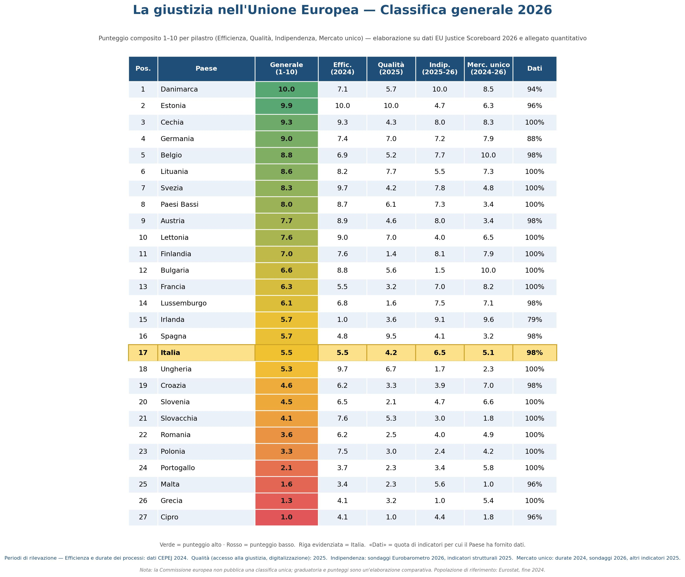
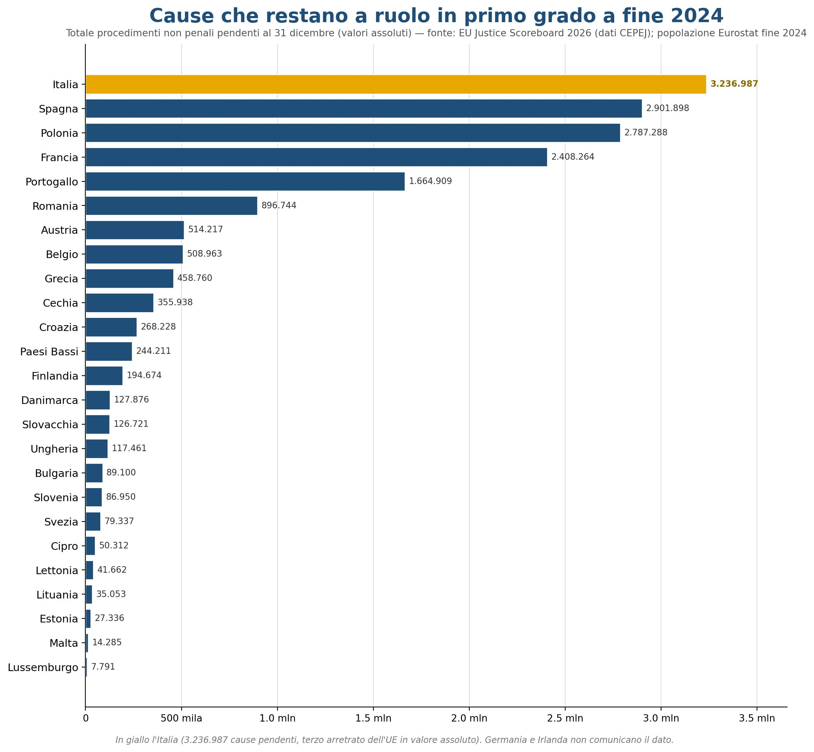
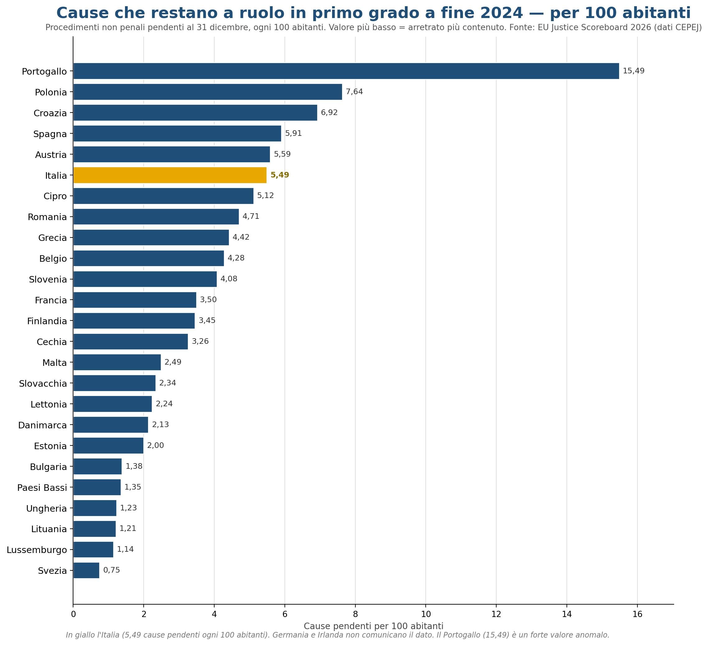
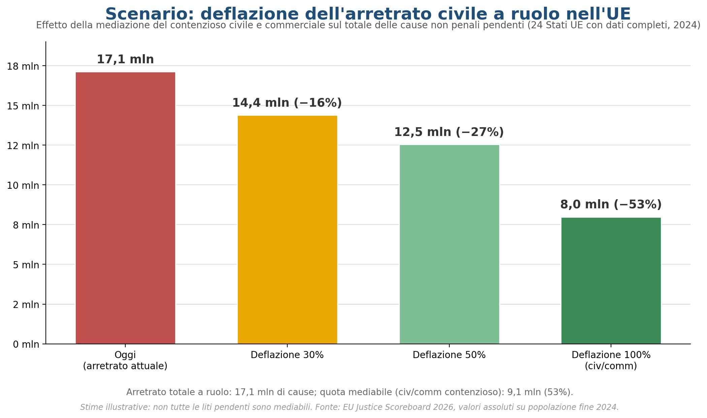
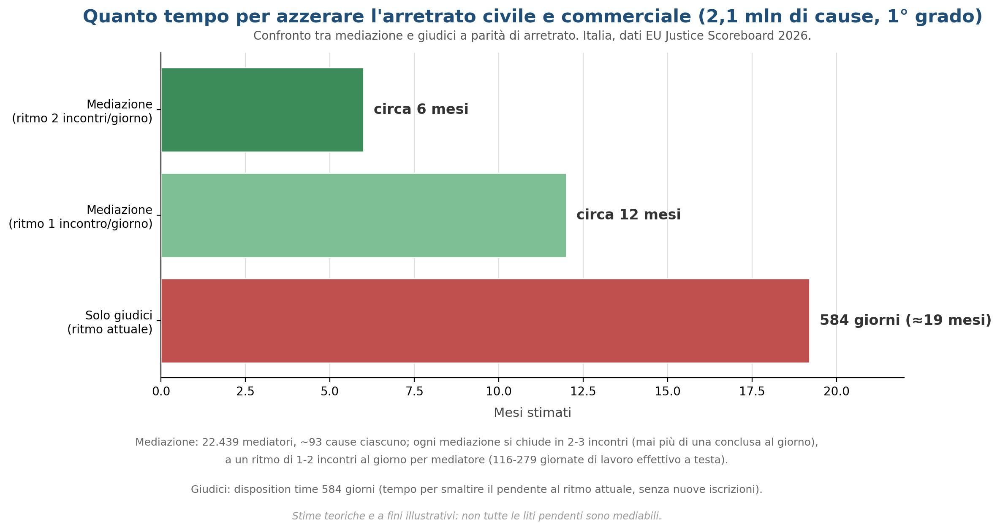

EU Justice Scoreboard 2026 — Rapporto integrato
Analisi, classifica generale dell'Unione Europea, classifiche per categoria e schede per Paese — elaborazione in italiano dei dati della Commissione europea (COM(2026) 273), 14ª edizione. Con il ruolo della mediazione e dell'ADR nella deflazione del contenzioso.
EU JUSTICE SCOREBOARD 2026
Rapporto integrato: analisi, classifica generale dell'Unione Europea, classifiche per categoria e schede per Paese
Elaborazione in italiano dei dati della Commissione europea (COM(2026) 273) – 14ª edizione
Introduzione – Una lettura d'insieme
È uscita la quattordicesima edizione dell'EU Justice Scoreboard, il quadro di valutazione con cui la Commissione europea (COM(2026) 273) fotografa ogni anno efficienza, qualità e indipendenza dei 27 sistemi giudiziari nazionali. Quest'anno il rapporto rafforza anche la dimensione del mercato unico, con nuovi indicatori su autorità indipendenti, appalti, concorrenza e trasparenza del lobbying. La Commissione, per scelta, non stila una classifica unica: ma incrociando i dati quantitativi pubblicati insieme al rapporto è possibile ricostruire un quadro comparativo chiaro, ed è quello che proponiamo in questo documento.
Il quadro europeo
La geografia della "buona giustizia" resta abbastanza netta. Ai vertici troviamo i Paesi nordici e baltici insieme ad alcuni dell'Europa centrale: nella graduatoria composita elaborata in questo documento (media dei quattro pilastri su scala 1–10) guidano Danimarca, Estonia, Cechia, Germania e Belgio. In coda compaiono soprattutto Paesi mediterranei e dell'Europa orientale: Cipro, Grecia, Malta, Portogallo e Polonia. Sono interessanti i casi "asimmetrici": Bulgaria e Ungheria mostrano un'efficienza statistica elevata, ma crollano sull'indipendenza percepita, segno che velocità e fiducia non sempre vanno insieme.
Efficienza: il vero spartiacque
Il dato che più divide l'Unione è la durata dei processi. In testa la Danimarca, dove una causa civile, commerciale o amministrativa di primo grado si chiude in media in poche settimane; all'estremo opposto diversi Paesi superano l'anno e mezzo. L'efficienza è il pilastro su cui le riforme nazionali e i fondi del PNRR hanno puntato di più, e in molti Stati i tempi nel 2023–2024 sono tornati ai livelli pre-pandemia o sono migliorati.
Il caso dell'Italia
Nella graduatoria generale l'Italia si colloca al 17° posto su 27, con un punteggio di 5.5/10 (Efficienza 5.5, Qualità 4.2, Indipendenza 6.5, Mercato unico 5.1). Il tallone d'Achille resta l'efficienza del contenzioso civile: le cause civili e commerciali contenziose di primo grado durano in media 584 giorni (24ª su 26), e l'insieme delle cause civili/commerciali/amministrative si chiude in circa 373 giorni (21ª). Le cause civili e commerciali pendenti sfiorano i 2,1 milioni (3,54 ogni 100 abitanti, 21ª posizione). Non mancano però i segnali positivi, concentrati nella giustizia amministrativa: qui l'Italia ha il miglior tasso di smaltimento dell'Unione (125%, 1º posto) e un arretrato amministrativo in miglioramento (7ª). Sul fronte della fiducia, il 51% dei cittadini e il 60% delle imprese giudica buona l'indipendenza dei giudici: valori intermedi (rispettivamente 15ª e 12ª), superiori a quelli di diversi grandi Paesi.
Risorse: pochi giudici, tanti avvocati
Un dato struttura tutto il resto. L'Italia ha solo 12,2 giudici ogni 100.000 abitanti – circa 7.200 magistrati in tutto – uno dei rapporti più bassi d'Europa (22ª su 27). Eppure conta circa 380 avvocati ogni 100.000 abitanti, quasi 224.000 professionisti: tra i valori più alti dell'Unione (4º posto). Questo squilibrio – pochi giudici, enorme platea forense – è una delle radici della lentezza, e spiega perché gli strumenti che alleggeriscono il carico dei tribunali siano così decisivi.
Perché la mediazione e l'ADR contano
Se i giudici sono pochi e le cause pendenti si misurano in milioni, gli strumenti alternativi di risoluzione delle controversie (ADR) – mediazione in primis – non sono un accessorio ma una leva di sistema. Lo Scoreboard misura proprio gli incentivi che gli Stati offrono per l'uso dell'ADR: l'Italia si colloca a metà classifica (18ª), pur avendo una delle normative sulla mediazione civile e commerciale più strutturate d'Europa. C'è quindi margine per rafforzare incentivi, cultura della mediazione e, soprattutto, la dimensione transfrontaliera: in un mercato unico, una controversia commerciale tra imprese di Stati diversi trova nella mediazione una via più rapida ed economica del contenzioso.
L'Italia conta 22.439 mediatori e l'arretrato civile e commerciale contenzioso di primo grado è di 2.085.878 cause: circa 93 per mediatore. Ogni mediazione si chiude statisticamente in 2-3 incontri, distribuiti su un arco di 3-6 mesi, e un mediatore può seguirne diverse in parallelo, ma non può concluderne più di una al giorno. Ciascun mediatore dovrebbe tenere tra 186 e 279 incontri: a un ritmo realistico di 1-2 incontri al giorno si tratta di circa 116-279 giornate di lavoro effettivo. Tenendo conto della distribuzione degli incontri su 3-6 mesi, l'intero arretrato verrebbe ragionevolmente smaltito in un arco stimato di circa 6-12 mesi. Per confronto, affidarsi ai soli giudici al ritmo attuale richiederebbe di più: la durata stimata di smaltimento (disposition time) delle stesse cause è di 584 giorni, cioè circa un anno e sette mesi (i tribunali ne definiscono circa 1,3 milioni l'anno, ipotizzando che non ne arrivino di nuove). Il calcolo è teorico, perché non tutte le liti pendenti sono mediabili, ma evidenzia il potenziale deflattivo della mediazione: a parità di organici, ciò che fa la differenza è il ricorso sistematico agli strumenti alternativi e l'organizzazione del lavoro.
Come leggere le pagine che seguono
Le sezioni successive forniscono l'apparato analitico completo su cui poggia questa lettura. La Nota metodologica spiega come sono stati ricostruiti i dati e costruito il punteggio 1–10; la Parte 1 presenta la classifica generale dell'Unione; la Parte 2 raccoglie le classifiche per ciascuna categoria di indicatori; la Parte 3 dedica una scheda di dettaglio a ognuno dei 27 Stati membri.
Nota metodologica
Questo documento rielabora in italiano il quadro di valutazione UE della giustizia 2026 (EU Justice Scoreboard), pubblicato dalla Commissione europea. Per ogni indicatore (le "figure" del rapporto originale) viene proposta una classifica ordinata dei 27 Stati membri; dove la fonte fornisce dati quantitativi (allegato "quantitative" del 2026) sono riportati i valori reali.
Valori assoluti. Diversi indicatori sono espressi dalla fonte come tassi (per 100 o per 100.000 abitanti). Per ottenere i valori reali sono stati ricostruiti i totali assoluti moltiplicando il tasso per la popolazione di ciascun Paese a fine 2024 (dato Eurostat al 1° gennaio 2025, tabella tps00001). La popolazione utilizzata è indicata nella scheda di ciascun Paese.
Punteggio 1–10 e graduatoria generale. Il rapporto della Commissione NON pubblica una classifica unica. La graduatoria generale qui proposta è un'elaborazione originale: per ogni indicatore confrontabile la posizione/valore di ciascun Paese è normalizzato (migliore = 1, peggiore = 0) tenendo conto del verso dell'indicatore (es. tempi più brevi = meglio). I punteggi sono aggregati in quattro pilastri (Efficienza, Qualità, Indipendenza, Mercato unico) di pari peso e riportati su scala 1–10. È una sintesi indicativa, utile per il confronto, non un giudizio ufficiale della Commissione.
Dati mancanti. La graduatoria di ogni Paese è calcolata solo sugli indicatori per i quali ha fornito dati: chi ne trasmette pochi viene valutato su una base più ristretta. Per trasparenza, la classifica generale riporta la colonna "Dati forniti" (copertura) e ogni scheda-Paese indica quanti indicatori sono stati trasmessi. Nelle classifiche per categoria i Paesi senza dato compaiono in fondo con la dicitura "n.d.".
Indicatori qualitativi (sì/no o conteggio di strumenti, es. digitalizzazione, tutele) non hanno un valore numerico: la classifica rispecchia l'ordine del grafico originale (a sinistra il Paese con più strumenti/garanzie). Dove un Paese non fornisce dati la voce è indicata come "n.d.".
1. Classifica generale dell'Unione Europea
Graduatoria complessiva dei 27 Stati membri secondo il punteggio composito (media dei quattro pilastri, scala 1–10). Punteggi più alti indicano sistemi giudiziari complessivamente più efficienti, di qualità, indipendenti e funzionali al mercato unico.
| Pos. | Paese | Generale | Effic. | Qualità | Indip. | Merc. unico | Dati forniti |
|---|---|---|---|---|---|---|---|
| 1 | Danimarca | 10.0 | 7.1 | 5.7 | 10.0 | 8.5 | 45/48 (94%) |
| 2 | Estonia | 9.9 | 10.0 | 10.0 | 4.7 | 6.3 | 46/48 (96%) |
| 3 | Cechia | 9.3 | 9.3 | 4.3 | 8.0 | 8.3 | 48/48 (100%) |
| 4 | Germania | 9.0 | 7.4 | 7.0 | 7.2 | 7.9 | 42/48 (88%) |
| 5 | Belgio | 8.8 | 6.9 | 5.2 | 7.7 | 10.0 | 47/48 (98%) |
| 6 | Lituania | 8.6 | 8.2 | 7.7 | 5.5 | 7.3 | 48/48 (100%) |
| 7 | Svezia | 8.3 | 9.7 | 4.2 | 7.8 | 4.8 | 48/48 (100%) |
| 8 | Paesi Bassi | 8.0 | 8.7 | 6.1 | 7.3 | 3.4 | 48/48 (100%) |
| 9 | Austria | 7.7 | 8.9 | 4.6 | 8.0 | 3.4 | 47/48 (98%) |
| 10 | Lettonia | 7.6 | 9.0 | 7.0 | 4.0 | 6.5 | 48/48 (100%) |
| 11 | Finlandia | 7.0 | 7.6 | 1.4 | 8.1 | 7.9 | 48/48 (100%) |
| 12 | Bulgaria | 6.6 | 8.8 | 5.6 | 1.5 | 10.0 | 48/48 (100%) |
| 13 | Francia | 6.3 | 5.5 | 3.2 | 7.0 | 8.2 | 48/48 (100%) |
| 14 | Lussemburgo | 6.1 | 6.8 | 1.6 | 7.5 | 7.1 | 47/48 (98%) |
| 15 | Irlanda | 5.7 | 1.0 | 3.6 | 9.1 | 9.6 | 38/48 (79%) |
| 16 | Spagna | 5.7 | 4.8 | 9.5 | 4.1 | 3.2 | 47/48 (98%) |
| 17 | Italia | 5.5 | 5.5 | 4.2 | 6.5 | 5.1 | 47/48 (98%) |
| 18 | Ungheria | 5.3 | 9.7 | 6.7 | 1.7 | 2.3 | 48/48 (100%) |
| 19 | Croazia | 4.6 | 6.2 | 3.3 | 3.9 | 7.0 | 47/48 (98%) |
| 20 | Slovenia | 4.5 | 6.5 | 2.1 | 4.7 | 6.6 | 48/48 (100%) |
| 21 | Slovacchia | 4.1 | 7.6 | 5.3 | 3.0 | 1.8 | 48/48 (100%) |
| 22 | Romania | 3.6 | 6.2 | 2.5 | 4.0 | 4.9 | 48/48 (100%) |
| 23 | Polonia | 3.3 | 7.5 | 3.0 | 2.4 | 4.2 | 48/48 (100%) |
| 24 | Portogallo | 2.1 | 3.7 | 2.3 | 3.4 | 5.8 | 48/48 (100%) |
| 25 | Malta | 1.6 | 3.4 | 2.3 | 5.6 | 1.0 | 46/48 (96%) |
| 26 | Grecia | 1.3 | 4.1 | 3.2 | 1.0 | 5.4 | 48/48 (100%) |
| 27 | Cipro | 1.0 | 4.1 | 1.0 | 4.4 | 1.8 | 46/48 (96%) |
La colonna "Dati forniti" indica per quanti dei 48 indicatori comparabili lo Stato ha trasmesso dati. Una copertura bassa (es. Irlanda) significa che il Paese è valutato su un numero ridotto di indicatori: la sua posizione va quindi letta con cautela, perché la mancanza di dati – e non solo le performance – può influenzare il punteggio.

Classifica generale dei sistemi giudiziari UE (punteggio composito 1-10 per pilastro). Elaborazione su dati EU Justice Scoreboard 2026.
2. Classifiche per categoria
2.1 Efficienza – durata, smaltimento e arretrato
Fig. 4 – Durata cause civili/comm./amm. e altre (1° grado, giorni)
Quanti giorni servono in media per chiudere in primo grado una causa generica (civile, commerciale, amministrativa e altro). Meno giorni significa giustizia più rapida.
Come leggere la tabella: i Paesi sono elencati dai tempi più brevi.
Pendenze eliminate: soli mediatori vs forze unite (entro un anno)
| Scenario di collaborazione | Pendenze in meno | Arretrato residuo | Variazione |
|---|---|---|---|
| Solo mediatori (entro 1 anno) | 5.156.138 | 11.960.951 | −30,1% |
| Unendo le forze (avvocati+giudici+mediatori) | 9.136.316 | 7.980.773 | −53,4% |
Se le mediazioni dell'arretrato civile/commerciale fossero affidate ai soli mediatori, entro un anno se ne smaltirebbero circa 5,2 milioni (i 10 Paesi con pochi mediatori non riuscirebbero a trattarle tutte): l'arretrato totale scenderebbe del 30%. Se invece avvocati, giudici e mediatori unissero le forze, l'intero contenzioso mediabile (9,1 milioni) verrebbe assorbito e l'arretrato calerebbe del 53%.
| Pos. | Paese | Valore |
|---|---|---|
| 1 | Danimarca | 19 gg |
| 2 | Estonia | 31 gg |
| 3 | Lettonia | 41 gg |
| 4 | Slovenia | 52 gg |
| 5 | Austria | 57 gg |
| 6 | Ungheria | 63 gg |
| 7 | Lituania | 70 gg |
| 8 | Slovacchia | 74 gg |
| 9 | Paesi Bassi | 80 gg |
| 10 | Bulgaria | 90 gg |
| 11 | Croazia | 95 gg |
| 12 | Polonia | 104 gg |
| 13 | Svezia | 106 gg |
| 14 | Finlandia | 135 gg |
| 15 | Cechia | 142 gg |
| 16 | Belgio | 153 gg |
| 17 | Romania | 192 gg |
| 18 | Lussemburgo | 233 gg |
| 19 | Spagna | 325 gg |
| 20 | Francia | 341 gg |
| 21 | Italia | 373 gg |
| 22 | Malta | 404 gg |
| 23 | Grecia | 638 gg |
| 24 | Cipro | 709 gg |
| 25 | Portogallo | 860 gg |
Fig. 5 – Durata cause civili/comm. contenziose (1° grado, giorni)
Tempo medio, in giorni, per chiudere in primo grado una causa civile o commerciale contenziosa (una vera lite tra parti).
Come leggere la tabella: i Paesi sono elencati dai tempi più brevi.
| Pos. | Paese | Valore |
|---|---|---|
| 1 | Paesi Bassi | 124 gg |
| 2 | Cechia | 126 gg |
| 3 | Lituania | 127 gg |
| 4 | Austria | 132 gg |
| 5 | Ungheria | 140 gg |
| 6 | Svezia | 150 gg |
| 7 | Slovacchia | 151 gg |
| 8 | Romania | 180 gg |
| 9 | Estonia | 185 gg |
| 10 | Bulgaria | 189 gg |
| 11 | Germania | 232 gg |
| 12 | Lettonia | 244 gg |
| 13 | Belgio | 246 gg |
| 14 | Danimarca | 250 gg |
| 15 | Lussemburgo | 251 gg |
| 16 | Portogallo | 263 gg |
| 17 | Slovenia | 355 gg |
| 18 | Polonia | 360 gg |
| 19 | Spagna | 423 gg |
| 20 | Francia | 434 gg |
| 21 | Finlandia | 464 gg |
| 22 | Croazia | 465 gg |
| 23 | Malta | 491 gg |
| 24 | Italia | 584 gg |
| 25 | Cipro | 682 gg |
| 26 | Grecia | 737 gg |
Fig. 6 – Durata cause civili/comm. contenziose (tutti i gradi, giorni)
Tempo medio per arrivare alla decisione definitiva in una causa civile o commerciale, considerando tutti i gradi di giudizio.
Come leggere la tabella: i Paesi sono elencati dai tempi più brevi.
| Pos. | Paese |
|---|---|
| 1 | Austria |
| 2 | Ungheria |
| 3 | Cechia |
| 4 | Estonia |
| 5 | Slovacchia |
| 6 | Bulgaria |
| 7 | Svezia |
| 8 | Romania |
| 9 | Lettonia |
| 10 | Danimarca |
| 11 | Portogallo |
| 12 | Germania |
| 13 | Paesi Bassi |
| 14 | Slovenia |
| 15 | Polonia |
| 16 | Lituania |
| 17 | Finlandia |
| 18 | Croazia |
| 19 | Malta |
| 20 | Lussemburgo |
| 21 | Francia |
| 22 | Belgio |
| 23 | Grecia |
| 24 | Spagna |
| 25 | Italia |
| 26 | Cipro |
| 27 | Irlanda |
Fig. 7 – Durata cause amministrative (1° grado, giorni)
Tempo medio, in giorni, per chiudere in primo grado una causa amministrativa.
Come leggere la tabella: i Paesi sono elencati dai tempi più brevi.
| Pos. | Paese | Valore |
|---|---|---|
| 1 | Svezia | 81 gg |
| 2 | Bulgaria | 129 gg |
| 3 | Ungheria | 131 gg |
| 4 | Polonia | 134 gg |
| 5 | Estonia | 137 gg |
| 6 | Lituania | 140 gg |
| 7 | Cechia | 202 gg |
| 8 | Lettonia | 210 gg |
| 9 | Paesi Bassi | 246 gg |
| 10 | Finlandia | 268 gg |
| 11 | Croazia | 268 gg |
| 12 | Francia | 301 gg |
| 13 | Austria | 327 gg |
| 14 | Belgio | 370 gg |
| 15 | Spagna | 386 gg |
| 16 | Germania | 389 gg |
| 17 | Romania | 410 gg |
| 18 | Grecia | 445 gg |
| 19 | Italia | 483 gg |
| 20 | Slovenia | 570 gg |
| 21 | Lussemburgo | 720 gg |
| 22 | Cipro | 788 gg |
| 23 | Slovacchia | 860 gg |
| 24 | Portogallo | 861 gg |
| 25 | Malta | 1.681 gg |
Fig. 8 – Durata cause amministrative (tutti i gradi, giorni)
Tempo medio per chiudere una causa amministrativa considerando tutti i gradi di giudizio.
Come leggere la tabella: i Paesi sono elencati dai tempi più brevi.
| Pos. | Paese |
|---|---|
| 1 | Svezia |
| 2 | Bulgaria |
| 3 | Ungheria |
| 4 | Cechia |
| 5 | Estonia |
| 6 | Lettonia |
| 7 | Finlandia |
| 8 | Austria |
| 9 | Francia |
| 10 | Lituania |
| 11 | Paesi Bassi |
| 12 | Romania |
| 13 | Spagna |
| 14 | Germania |
| 15 | Polonia |
| 16 | Italia |
| 17 | Belgio |
| 18 | Slovenia |
| 19 | Croazia |
| 20 | Grecia |
| 21 | Lussemburgo |
| 22 | Cipro |
| 23 | Slovacchia |
| 24 | Portogallo |
| 25 | Malta |
| 26 | Irlanda |
| 27 | Danimarca |
Fig. 9 – Tasso di smaltimento cause civili/comm./amm. (%)
Capacità dei tribunali di smaltire il lavoro: rapporto tra cause chiuse e cause arrivate. Sopra il 100% i tribunali riducono l'arretrato; sotto, lo accumulano.
Come leggere la tabella: i Paesi sono elencati dal tasso più alto.
| Pos. | Paese | Valore |
|---|---|---|
| 1 | Cipro | 125.0% |
| 2 | Croazia | 102.8% |
| 3 | Slovacchia | 102.5% |
| 4 | Belgio | 102.4% |
| 5 | Cechia | 101.0% |
| 6 | Danimarca | 100.8% |
| 7 | Estonia | 100.6% |
| 8 | Austria | 100.0% |
| 9 | Slovenia | 100.0% |
| 10 | Paesi Bassi | 99.9% |
| 11 | Ungheria | 99.7% |
| 12 | Lituania | 99.2% |
| 13 | Svezia | 99.1% |
| 14 | Bulgaria | 98.6% |
| 15 | Romania | 98.5% |
| 16 | Polonia | 97.8% |
| 17 | Lettonia | 97.3% |
| 18 | Italia | 96.9% |
| 19 | Portogallo | 96.0% |
| 20 | Francia | 94.5% |
| 21 | Finlandia | 93.1% |
| 22 | Lussemburgo | 89.8% |
| 23 | Malta | 89.2% |
| 24 | Spagna | 88.7% |
| 25 | Grecia | 87.1% |
| 26 | Irlanda | 82.7% |
Fig. 10 – Tasso di smaltimento cause civili/comm. contenziose (%)
La stessa capacità di smaltimento, riferita alle sole cause civili e commerciali contenziose.
Come leggere la tabella: i Paesi sono elencati dal tasso più alto.
| Pos. | Paese | Valore |
|---|---|---|
| 1 | Cipro | 156.3% |
| 2 | Croazia | 112.4% |
| 3 | Estonia | 110.0% |
| 4 | Slovacchia | 107.6% |
| 5 | Belgio | 104.8% |
| 6 | Paesi Bassi | 102.0% |
| 7 | Germania | 99.9% |
| 8 | Austria | 99.9% |
| 9 | Lituania | 99.7% |
| 10 | Cechia | 99.7% |
| 11 | Romania | 99.2% |
| 12 | Danimarca | 98.9% |
| 13 | Ungheria | 98.9% |
| 14 | Svezia | 97.8% |
| 15 | Bulgaria | 97.5% |
| 16 | Portogallo | 96.6% |
| 17 | Slovenia | 96.1% |
| 18 | Francia | 95.4% |
| 19 | Italia | 95.0% |
| 20 | Polonia | 94.1% |
| 21 | Malta | 93.5% |
| 22 | Lussemburgo | 92.9% |
| 23 | Lettonia | 89.5% |
| 24 | Spagna | 81.5% |
| 25 | Grecia | 81.1% |
| 26 | Finlandia | 75.3% |
| 27 | Irlanda | 71.8% |
Fig. 11 – Tasso di smaltimento cause amministrative (%)
La stessa capacità di smaltimento, riferita alle cause amministrative.
Come leggere la tabella: i Paesi sono elencati dal tasso più alto.
| Pos. | Paese | Valore |
|---|---|---|
| 1 | Italia | 125.1% |
| 2 | Grecia | 111.8% |
| 3 | Cechia | 104.7% |
| 4 | Spagna | 102.8% |
| 5 | Polonia | 102.3% |
| 6 | Estonia | 100.2% |
| 7 | Svezia | 99.7% |
| 8 | Lettonia | 99.5% |
| 9 | Ungheria | 99.3% |
| 10 | Germania | 99.2% |
| 11 | Bulgaria | 97.4% |
| 12 | Finlandia | 97.0% |
| 13 | Austria | 96.5% |
| 14 | Francia | 94.3% |
| 15 | Slovacchia | 93.1% |
| 16 | Paesi Bassi | 93.1% |
| 17 | Slovenia | 92.1% |
| 18 | Romania | 90.9% |
| 19 | Croazia | 90.2% |
| 20 | Lituania | 89.7% |
| 21 | Belgio | 85.8% |
| 22 | Cipro | 77.7% |
| 23 | Malta | 60.5% |
| 24 | Lussemburgo | 59.9% |
| 25 | Portogallo | 48.4% |
Fig. 12 – Cause civili/comm./amm. pendenti (per 100 ab.)
Quante cause restano ancora da decidere a fine anno (l'arretrato), rapportate alla popolazione. Meno pendenti indica un sistema più sano.
Come leggere la tabella: i Paesi sono elencati dal minor numero di pendenti.
| Pos. | Paese | Valore (tasso) | Totale assoluto |
|---|---|---|---|
| 1 | Svezia | 0.75 | 79.337 |
| 2 | Lussemburgo | 1.14 | 7.791 |
| 3 | Lituania | 1.21 | 35.053 |
| 4 | Ungheria | 1.23 | 117.461 |
| 5 | Paesi Bassi | 1.35 | 244.211 |
| 6 | Bulgaria | 1.38 | 89.100 |
| 7 | Estonia | 2.00 | 27.336 |
| 8 | Danimarca | 2.13 | 127.876 |
| 9 | Lettonia | 2.24 | 41.662 |
| 10 | Slovacchia | 2.34 | 126.721 |
| 11 | Malta | 2.49 | 14.285 |
| 12 | Cechia | 3.26 | 355.938 |
| 13 | Finlandia | 3.45 | 194.674 |
| 14 | Francia | 3.50 | 2.408.264 |
| 15 | Slovenia | 4.08 | 86.950 |
| 16 | Belgio | 4.28 | 508.963 |
| 17 | Grecia | 4.42 | 458.760 |
| 18 | Romania | 4.71 | 896.744 |
| 19 | Cipro | 5.12 | 50.312 |
| 20 | Italia | 5.49 | 3.236.987 |
| 21 | Austria | 5.59 | 514.217 |
| 22 | Spagna | 5.91 | 2.901.898 |
| 23 | Croazia | 6.92 | 268.228 |
| 24 | Polonia | 7.64 | 2.787.288 |
| 25 | Portogallo | 15.49 | 1.664.909 |
Fig. 13 – Cause civili/comm. contenziose pendenti (per 100 ab.)
L'arretrato delle sole cause civili e commerciali contenziose.
Come leggere la tabella: i Paesi sono elencati dal minor numero di pendenti.
| Pos. | Paese | Valore (tasso) | Totale assoluto |
|---|---|---|---|
| 1 | Paesi Bassi | 0.23 | 41.047 |
| 2 | Finlandia | 0.24 | 13.292 |
| 3 | Svezia | 0.28 | 29.746 |
| 4 | Austria | 0.33 | 30.449 |
| 5 | Ungheria | 0.50 | 47.305 |
| 6 | Danimarca | 0.62 | 37.188 |
| 7 | Lussemburgo | 0.63 | 4.278 |
| 8 | Estonia | 0.65 | 8.959 |
| 9 | Slovacchia | 0.71 | 38.511 |
| 10 | Germania | 0.85 | 713.783 |
| 11 | Lituania | 0.96 | 27.875 |
| 12 | Cechia | 1.10 | 119.992 |
| 13 | Lettonia | 1.10 | 20.559 |
| 14 | Bulgaria | 1.11 | 71.246 |
| 15 | Slovenia | 1.34 | 28.552 |
| 16 | Portogallo | 1.82 | 195.140 |
| 17 | Malta | 2.27 | 13.063 |
| 18 | Francia | 2.47 | 1.698.762 |
| 19 | Polonia | 2.59 | 945.368 |
| 20 | Grecia | 3.37 | 349.661 |
| 21 | Italia | 3.54 | 2.085.878 |
| 22 | Cipro | 3.71 | 36.442 |
| 23 | Croazia | 3.81 | 147.476 |
| 24 | Spagna | 3.90 | 1.913.895 |
| 25 | Belgio | 4.09 | 485.474 |
| 26 | Romania | 4.11 | 783.345 |
Fig. 14 – Cause amministrative pendenti (per 100 ab.)
L'arretrato delle cause amministrative.
Come leggere la tabella: i Paesi sono elencati dal minor numero di pendenti.
| Pos. | Paese | Valore (tasso) | Totale assoluto |
|---|---|---|---|
| 1 | Cechia | 0.044 | 4.747 |
| 2 | Lettonia | 0.052 | 969 |
| 3 | Ungheria | 0.069 | 6.570 |
| 4 | Polonia | 0.069 | 25.255 |
| 5 | Malta | 0.083 | 479 |
| 6 | Estonia | 0.093 | 1.269 |
| 7 | Italia | 0.147 | 86.884 |
| 8 | Bulgaria | 0.157 | 10.089 |
| 9 | Slovacchia | 0.185 | 10.017 |
| 10 | Lituania | 0.195 | 5.643 |
| 11 | Belgio | 0.198 | 23.489 |
| 12 | Slovenia | 0.207 | 4.411 |
| 13 | Croazia | 0.255 | 9.898 |
| 14 | Finlandia | 0.293 | 16.541 |
| 15 | Lussemburgo | 0.344 | 2.344 |
| 16 | Svezia | 0.365 | 38.653 |
| 17 | Spagna | 0.380 | 186.463 |
| 18 | Francia | 0.380 | 261.902 |
| 19 | Romania | 0.448 | 85.311 |
| 20 | Austria | 0.493 | 45.380 |
| 21 | Paesi Bassi | 0.495 | 89.389 |
| 22 | Grecia | 0.657 | 68.149 |
| 23 | Germania | 0.704 | 587.994 |
| 24 | Portogallo | 0.848 | 91.120 |
| 25 | Cipro | 1.411 | 13.870 |
Fig. 20 – Riciclaggio: durata delle cause (1° grado, giorni)
Durata media dei processi penali di primo grado per riciclaggio di denaro.
Come leggere la tabella: i Paesi sono elencati dai tempi più brevi.
| Pos. | Paese | Valore |
|---|---|---|
| 1 | Svezia | 87 gg |
| 2 | Estonia | 116 gg |
| 3 | Belgio | 129 gg |
| 4 | Polonia | 161 gg |
| 5 | Paesi Bassi | 170 gg |
| 6 | Grecia | 232 gg |
| 7 | Austria | 235 gg |
| 8 | Lussemburgo | 239 gg |
| 9 | Cechia | 265 gg |
| 10 | Ungheria | 266 gg |
| 11 | Finlandia | 272 gg |
| 12 | Irlanda | 330 gg |
| 13 | Portogallo | 400 gg |
| 14 | Danimarca | 425 gg |
| 15 | Lettonia | 457 gg |
| 16 | Italia | 648 gg |
| 17 | Cipro | 701 gg |
| 18 | Slovenia | 739 gg |
| 19 | Francia | 741 gg |
| 20 | Croazia | 771 gg |
| 21 | Slovacchia | 791 gg |
| 22 | Lituania | 792 gg |
| 23 | Spagna | 877 gg |
| 24 | Bulgaria | 1.036 gg |
| 25 | Malta | 1.095 gg |
| 26 | Romania | 1.156 gg |
Fig. 21 – Corruzione (concussione): durata cause (1° grado, giorni)
Durata media dei processi penali di primo grado per corruzione (concussione e tangenti).
Come leggere la tabella: i Paesi sono elencati dai tempi più brevi.
| Pos. | Paese | Valore |
|---|---|---|
| 1 | Lettonia | 12 gg |
| 2 | Bulgaria | 29 gg |
| 3 | Lussemburgo | 40 gg |
| 4 | Croazia | 107 gg |
| 5 | Estonia | 141 gg |
| 6 | Lituania | 222 gg |
| 7 | Polonia | 223 gg |
| 8 | Belgio | 236 gg |
| 9 | Svezia | 258 gg |
| 10 | Finlandia | 275 gg |
| 11 | Paesi Bassi | 315 gg |
| 12 | Romania | 328 gg |
| 13 | Austria | 338 gg |
| 14 | Ungheria | 350 gg |
| 15 | Slovacchia | 366 gg |
| 16 | Cechia | 380 gg |
| 17 | Danimarca | 461 gg |
| 18 | Portogallo | 517 gg |
| 19 | Grecia | 576 gg |
| 20 | Slovenia | 597 gg |
| 21 | Malta | 694 gg |
| 22 | Francia | 768 gg |
2.2 Carico di lavoro (contesto)
Fig. 1 – Cause civili/comm./amm. e altre in entrata (per 100 ab.)
Quante cause (civili, commerciali, amministrative e di altro tipo) arrivano ogni anno nei tribunali, rapportate alla popolazione. Misura il carico di lavoro in entrata: da sola non indica un sistema migliore o peggiore.
Come leggere la tabella: i Paesi sono elencati dal minor carico in entrata.
| Pos. | Paese | Valore (tasso) | Totale assoluto |
|---|---|---|---|
| 1 | Lussemburgo | 2.00 | 13.608 |
| 2 | Cipro | 2.11 | 20.733 |
| 3 | Malta | 2.52 | 14.474 |
| 4 | Svezia | 2.59 | 274.483 |
| 5 | Grecia | 2.91 | 301.366 |
| 6 | Irlanda | 3.74 | 203.297 |
| 7 | Francia | 3.96 | 2.727.489 |
| 8 | Italia | 5.55 | 3.270.988 |
| 9 | Bulgaria | 5.67 | 365.138 |
| 10 | Paesi Bassi | 6.19 | 1.117.083 |
| 11 | Lituania | 6.35 | 183.447 |
| 12 | Portogallo | 6.85 | 736.339 |
| 13 | Ungheria | 7.18 | 685.369 |
| 14 | Spagna | 7.48 | 3.676.518 |
| 15 | Cechia | 8.30 | 905.402 |
| 16 | Romania | 9.07 | 1.728.128 |
| 17 | Belgio | 10.00 | 1.188.544 |
| 18 | Finlandia | 10.06 | 567.259 |
| 19 | Slovacchia | 11.26 | 610.125 |
| 20 | Lettonia | 20.55 | 382.297 |
| 21 | Estonia | 23.12 | 316.677 |
| 22 | Croazia | 25.86 | 1.001.898 |
| 23 | Polonia | 27.43 | 10.009.808 |
| 24 | Slovenia | 28.71 | 611.696 |
| 25 | Austria | 35.60 | 3.274.411 |
| 26 | Danimarca | 40.11 | 2.403.804 |
Fig. 2 – Cause civili e commerciali contenziose in entrata (per 100 ab.)
Quante nuove cause civili e commerciali contenziose, cioè vere liti tra parti (ad es. su contratti), vengono avviate ogni anno.
Come leggere la tabella: i Paesi sono elencati dal maggior carico in entrata.
| Pos. | Paese | Valore (tasso) | Totale assoluto |
|---|---|---|---|
| 1 | Romania | 8.42 | 1.603.288 |
| 2 | Belgio | 5.79 | 687.697 |
| 3 | Spagna | 4.13 | 2.026.739 |
| 4 | Cechia | 3.18 | 347.457 |
| 5 | Polonia | 2.79 | 1.017.530 |
| 6 | Lituania | 2.78 | 80.380 |
| 7 | Croazia | 2.66 | 102.899 |
| 8 | Portogallo | 2.61 | 280.033 |
| 9 | Italia | 2.33 | 1.373.509 |
| 10 | Irlanda | 2.21 | 120.029 |
| 11 | Bulgaria | 2.19 | 140.858 |
| 12 | Francia | 2.18 | 1.498.531 |
| 13 | Grecia | 2.06 | 213.530 |
| 14 | Lettonia | 1.84 | 34.278 |
| 15 | Malta | 1.81 | 10.385 |
| 16 | Slovacchia | 1.60 | 86.449 |
| 17 | Slovenia | 1.44 | 30.585 |
| 18 | Germania | 1.34 | 1.123.545 |
| 19 | Ungheria | 1.31 | 124.977 |
| 20 | Cipro | 1.27 | 12.473 |
| 21 | Estonia | 1.17 | 16.080 |
| 22 | Lussemburgo | 0.98 | 6.709 |
| 23 | Danimarca | 0.92 | 54.990 |
| 24 | Austria | 0.91 | 84.092 |
| 25 | Svezia | 0.70 | 73.929 |
| 26 | Paesi Bassi | 0.66 | 118.242 |
| 27 | Finlandia | 0.25 | 13.894 |
Fig. 3 – Cause amministrative in entrata (per 100 ab.)
Quante nuove cause amministrative (cittadini o imprese contro la pubblica amministrazione) vengono avviate ogni anno.
Come leggere la tabella: i Paesi sono elencati dal minor carico in entrata.
| Pos. | Paese | Valore (tasso) | Totale assoluto |
|---|---|---|---|
| 1 | Malta | 0.030 | 172 |
| 2 | Cechia | 0.075 | 8.180 |
| 3 | Slovacchia | 0.084 | 4.562 |
| 4 | Italia | 0.089 | 52.510 |
| 5 | Lettonia | 0.091 | 1.691 |
| 6 | Slovenia | 0.144 | 3.069 |
| 7 | Polonia | 0.185 | 67.450 |
| 8 | Ungheria | 0.194 | 18.500 |
| 9 | Belgio | 0.227 | 27.000 |
| 10 | Estonia | 0.246 | 3.365 |
| 11 | Lussemburgo | 0.291 | 1.982 |
| 12 | Spagna | 0.349 | 171.700 |
| 13 | Croazia | 0.385 | 14.932 |
| 14 | Finlandia | 0.412 | 23.211 |
| 15 | Romania | 0.439 | 83.528 |
| 16 | Bulgaria | 0.454 | 29.246 |
| 17 | Grecia | 0.482 | 50.040 |
| 18 | Francia | 0.489 | 336.815 |
| 19 | Lituania | 0.568 | 16.430 |
| 20 | Austria | 0.571 | 52.480 |
| 21 | Germania | 0.665 | 555.873 |
| 22 | Portogallo | 0.742 | 79.784 |
| 23 | Paesi Bassi | 0.788 | 142.225 |
| 24 | Cipro | 0.840 | 8.260 |
| 25 | Svezia | 1.642 | 173.871 |
2.3 Qualità – accesso, risorse e digitalizzazione
Fig. 22 – Soglia di reddito per il gratuito patrocinio (caso consumatore)
Quanto è generosa la soglia di reddito sotto la quale si ha diritto al gratuito patrocinio (assistenza legale gratuita), in un caso-tipo del consumatore.
Come leggere la tabella: i Paesi sono elencati dalla soglia più generosa.
| Pos. | Paese |
|---|---|
| 1 | Belgio |
| 2 | Spagna |
| 3 | Portogallo |
| 4 | Germania |
| 5 | Lituania |
| 6 | Italia |
| 7 | Slovacchia |
| 8 | Paesi Bassi |
| 9 | Svezia |
| 10 | Slovenia |
| 11 | Malta |
| 12 | Irlanda |
| 13 | Finlandia |
| 14 | Francia |
| 15 | Bulgaria |
| 16 | Lussemburgo |
| 17 | Romania |
| 18 | Ungheria |
| 19 | Grecia |
| 20 | Estonia |
| 21 | Cipro |
| 22 | Cechia |
| 23 | Austria |
| 24 | Polonia |
| 25 | Croazia |
| 26 | Lettonia |
| 27 | Danimarca |
Fig. 23 – Spese di avvio del procedimento (caso consumatore)
Quanto costa avviare una causa (contributo e spese) rispetto al valore della lite, in un caso-tipo del consumatore. Spese più basse facilitano l'accesso alla giustizia.
Come leggere la tabella: i Paesi sono elencati dalle spese più basse.
| Pos. | Paese |
|---|---|
| 1 | Belgio |
| 2 | Spagna |
| 3 | Lussemburgo |
| 4 | Francia |
| 5 | Romania |
| 6 | Slovacchia |
| 7 | Irlanda |
| 8 | Malta |
| 9 | Cipro |
| 10 | Grecia |
| 11 | Portogallo |
| 12 | Polonia |
| 13 | Lituania |
| 14 | Croazia |
| 15 | Lettonia |
| 16 | Paesi Bassi |
| 17 | Danimarca |
| 18 | Cechia |
| 19 | Svezia |
| 20 | Bulgaria |
| 21 | Austria |
| 22 | Ungheria |
| 23 | Slovenia |
| 24 | Germania |
| 25 | Estonia |
| 26 | Finlandia |
| 27 | Italia |
Fig. 24 – Compenso gratuito patrocinio – difesa penale
Quanto viene pagato l'avvocato nel gratuito patrocinio per un caso penale-tipo.
Come leggere la tabella: i Paesi sono elencati dal compenso più elevato.
| Pos. | Paese |
|---|---|
| 1 | Belgio |
| 2 | Romania |
| 3 | Lituania |
| 4 | Spagna |
| 5 | Ungheria |
| 6 | Polonia |
| 7 | Portogallo |
| 8 | Cipro |
| 9 | Malta |
| 10 | Francia |
| 11 | Estonia |
| 12 | Slovacchia |
| 13 | Germania |
| 14 | Lussemburgo |
| 15 | Cechia |
| 16 | Finlandia |
| 17 | Slovenia |
| 18 | Irlanda |
| 19 | Paesi Bassi |
| 20 | Italia |
| 21 | Danimarca |
| 22 | Croazia |
| 23 | Svezia |
| 24 | Bulgaria |
| 25 | Grecia |
| 26 | Lettonia |
| 27 | Austria |
Fig. 25 – Compenso gratuito patrocinio – causa civile
Quanto viene pagato l'avvocato nel gratuito patrocinio per una causa civile-tipo.
Come leggere la tabella: i Paesi sono elencati dal compenso più elevato.
| Pos. | Paese |
|---|---|
| 1 | Belgio |
| 2 | Polonia |
| 3 | Slovacchia |
| 4 | Spagna |
| 5 | Ungheria |
| 6 | Romania |
| 7 | Lituania |
| 8 | Croazia |
| 9 | Portogallo |
| 10 | Cechia |
| 11 | Slovenia |
| 12 | Malta |
| 13 | Estonia |
| 14 | Francia |
| 15 | Germania |
| 16 | Lussemburgo |
| 17 | Paesi Bassi |
| 18 | Irlanda |
| 19 | Danimarca |
| 20 | Italia |
| 21 | Bulgaria |
| 22 | Cipro |
| 23 | Svezia |
| 24 | Grecia |
| 25 | Lettonia |
| 26 | Austria |
| 27 | Finlandia |
Fig. 26 – Autorità competenti per il divorzio non contenzioso
Quali autorità (giudice, notaio, ufficiale di stato civile) possono gestire un divorzio consensuale: indica quanto sono diffuse le procedure semplificate.
Come leggere la tabella: i Paesi sono elencati ordine come da rapporto.
| Pos. | Paese |
|---|---|
| 1 | Austria |
| 2 | Belgio |
| 3 | Bulgaria |
| 4 | Croazia |
| 5 | Cechia |
| 6 | Germania |
| 7 | Ungheria |
| 8 | Lussemburgo |
| 9 | Malta |
| 10 | Paesi Bassi |
| 11 | Estonia |
| 12 | Spagna |
| 13 | Romania |
| 14 | Francia |
| 15 | Lituania |
| 16 | Slovenia |
| 17 | Grecia |
| 18 | Lettonia |
| 19 | Italia |
| 20 | Portogallo |
| 21 | Polonia |
| 22 | Slovacchia |
Fig. 27 – Promozione e incentivi all'uso dell'ADR
Quanto ogni Paese promuove e incentiva l'uso della mediazione e degli altri strumenti alternativi alle cause (ADR).
Come leggere la tabella: i Paesi sono elencati dal maggior numero di incentivi.
| Pos. | Paese |
|---|---|
| 1 | Danimarca |
| 2 | Germania |
| 3 | Spagna |
| 4 | Lituania |
| 5 | Francia |
| 6 | Polonia |
| 7 | Ungheria |
| 8 | Portogallo |
| 9 | Paesi Bassi |
| 10 | Belgio |
| 11 | Lettonia |
| 12 | Bulgaria |
| 13 | Romania |
| 14 | Grecia |
| 15 | Estonia |
| 16 | Austria |
| 17 | Slovenia |
| 18 | Italia |
| 19 | Cechia |
| 20 | Svezia |
| 21 | Irlanda |
| 22 | Lussemburgo |
| 23 | Slovacchia |
| 24 | Malta |
| 25 | Cipro |
| 26 | Finlandia |
Fig. 28 – Soluzioni digitali accessibili a persone con disabilità
Quanto i servizi digitali dei tribunali sono accessibili alle persone con disabilità.
Come leggere la tabella: i Paesi sono elencati dal maggior numero di soluzioni.
| Pos. | Paese |
|---|---|
| 1 | Estonia |
| 2 | Spagna |
| 3 | Lettonia |
| 4 | Malta |
| 5 | Slovacchia |
| 6 | Germania |
| 7 | Lituania |
| 8 | Austria |
| 9 | Bulgaria |
| 10 | Cechia |
| 11 | Irlanda |
| 12 | Ungheria |
| 13 | Polonia |
| 14 | Svezia |
| 15 | Croazia |
| 16 | Danimarca |
| 17 | Finlandia |
| 18 | Belgio |
| 19 | Cipro |
| 20 | Slovenia |
| 21 | Italia |
| 22 | Lussemburgo |
| 23 | Paesi Bassi |
| 24 | Grecia |
| 25 | Francia |
| 26 | Romania |
| 27 | Portogallo |
Fig. 29 – Azioni rappresentative a tutela dei consumatori
Quali strumenti esistono per le azioni collettive a tutela degli interessi dei consumatori.
Come leggere la tabella: i Paesi sono elencati dal maggior numero di strumenti.
| Pos. | Paese |
|---|---|
| 1 | Germania |
| 2 | Estonia |
| 3 | Paesi Bassi |
| 4 | Slovacchia |
| 5 | Cechia |
| 6 | Italia |
| 7 | Lettonia |
| 8 | Belgio |
| 9 | Bulgaria |
| 10 | Grecia |
| 11 | Francia |
| 12 | Lituania |
| 13 | Slovenia |
| 14 | Irlanda |
| 15 | Malta |
| 16 | Danimarca |
| 17 | Spagna |
| 18 | Ungheria |
| 19 | Austria |
| 20 | Polonia |
| 21 | Portogallo |
| 22 | Finlandia |
| 23 | Cipro |
| 24 | Svezia |
| 25 | Croazia |
| 26 | Lussemburgo |
| 27 | Romania |
Fig. 30 – Giustizia a misura di minore (civile e penale)
Quante tutele specifiche esistono per rendere la giustizia a misura di minore, sia nelle cause civili sia in quelle penali/minorili.
Come leggere la tabella: i Paesi sono elencati dal maggior numero di tutele.
| Pos. | Paese |
|---|---|
| 1 | Belgio |
| 2 | Paesi Bassi |
| 3 | Ungheria |
| 4 | Lituania |
| 5 | Lettonia |
| 6 | Spagna |
| 7 | Estonia |
| 8 | Bulgaria |
| 9 | Svezia |
| 10 | Finlandia |
| 11 | Slovenia |
| 12 | Portogallo |
| 13 | Polonia |
| 14 | Austria |
| 15 | Francia |
| 16 | Grecia |
| 17 | Irlanda |
| 18 | Germania |
| 19 | Danimarca |
| 20 | Slovacchia |
| 21 | Romania |
| 22 | Croazia |
| 23 | Malta |
| 24 | Lussemburgo |
| 25 | Italia |
| 26 | Cipro |
| 27 | Cechia |
Fig. 31 – Tutele per i minori nei procedimenti penali
Quante tutele specifiche esistono per i minori coinvolti in procedimenti penali, come vittime o come indagati.
Come leggere la tabella: i Paesi sono elencati dal maggior numero di tutele.
| Pos. | Paese |
|---|---|
| 1 | Bulgaria |
| 2 | Germania |
| 3 | Estonia |
| 4 | Grecia |
| 5 | Spagna |
| 6 | Irlanda |
| 7 | Lituania |
| 8 | Lettonia |
| 9 | Ungheria |
| 10 | Paesi Bassi |
| 11 | Slovacchia |
| 12 | Svezia |
| 13 | Belgio |
| 14 | Danimarca |
| 15 | Italia |
| 16 | Cipro |
| 17 | Austria |
| 18 | Portogallo |
| 19 | Romania |
| 20 | Polonia |
| 21 | Lussemburgo |
| 22 | Slovenia |
| 23 | Croazia |
| 24 | Francia |
| 25 | Malta |
| 26 | Cechia |
| 27 | Finlandia |
Fig. 32 – Poteri degli organismi per la parità
Quali poteri hanno gli organismi per la parità per aiutare chi subisce discriminazioni ad accedere alla giustizia.
Come leggere la tabella: i Paesi sono elencati dal maggior numero di poteri.
| Pos. | Paese |
|---|---|
| 1 | Belgio |
| 2 | Bulgaria |
| 3 | Cechia |
| 4 | Danimarca |
| 5 | Germania |
| 6 | Estonia |
| 7 | Irlanda |
| 8 | Grecia |
| 9 | Spagna |
| 10 | Francia |
| 11 | Croazia |
| 12 | Italia |
| 13 | Cipro |
| 14 | Lettonia |
| 15 | Lituania |
| 16 | Lussemburgo |
| 17 | Ungheria |
| 18 | Malta |
| 19 | Paesi Bassi |
| 20 | Austria |
| 21 | Polonia |
| 22 | Portogallo |
| 23 | Romania |
| 24 | Slovenia |
| 25 | Slovacchia |
| 26 | Finlandia |
| 27 | Svezia |
Fig. 39 – Informazioni online sul sistema giudiziario
Quante informazioni sul funzionamento della giustizia sono disponibili online per i cittadini (es. come accedere al gratuito patrocinio o conoscere le spese).
Come leggere la tabella: i Paesi sono elencati dal maggior numero di informazioni.
| Pos. | Paese |
|---|---|
| 1 | Germania |
| 2 | Grecia |
| 3 | Spagna |
| 4 | Lituania |
| 5 | Paesi Bassi |
| 6 | Svezia |
| 7 | Polonia |
| 8 | Belgio |
| 9 | Bulgaria |
| 10 | Danimarca |
| 11 | Irlanda |
| 12 | Francia |
| 13 | Italia |
| 14 | Portogallo |
| 15 | Romania |
| 16 | Finlandia |
| 17 | Estonia |
| 18 | Cipro |
| 19 | Ungheria |
| 20 | Slovenia |
| 21 | Slovacchia |
| 22 | Cechia |
| 23 | Malta |
| 24 | Lettonia |
| 25 | Austria |
| 26 | Croazia |
| 27 | Lussemburgo |
Fig. 40 – Norme processuali che ammettono il digitale
Quanto le regole processuali consentono l'uso di strumenti digitali, come la videoconferenza, nei processi.
Come leggere la tabella: i Paesi sono elencati dal quadro più digitale.
| Pos. | Paese |
|---|---|
| 1 | Estonia |
| 2 | Spagna |
| 3 | Lettonia |
| 4 | Slovacchia |
| 5 | Svezia |
| 6 | Lituania |
| 7 | Slovenia |
| 8 | Paesi Bassi |
| 9 | Cechia |
| 10 | Austria |
| 11 | Finlandia |
| 12 | Malta |
| 13 | Ungheria |
| 14 | Germania |
| 15 | Croazia |
| 16 | Romania |
| 17 | Portogallo |
| 18 | Grecia |
| 19 | Polonia |
| 20 | Danimarca |
| 21 | Belgio |
| 22 | Italia |
| 23 | Cipro |
| 24 | Irlanda |
| 25 | Bulgaria |
| 26 | Francia |
| 27 | Lussemburgo |
Fig. 41 – Uso del digitale da parte di tribunali e procure
Quanto, nella pratica, tribunali e procure usano effettivamente le tecnologie digitali.
Come leggere la tabella: i Paesi sono elencati dal maggior uso del digitale.
| Pos. | Paese |
|---|---|
| 1 | Estonia |
| 2 | Spagna |
| 3 | Austria |
| 4 | Svezia |
| 5 | Danimarca |
| 6 | Slovenia |
| 7 | Italia |
| 8 | Lituania |
| 9 | Lussemburgo |
| 10 | Ungheria |
| 11 | Paesi Bassi |
| 12 | Belgio |
| 13 | Francia |
| 14 | Portogallo |
| 15 | Germania |
| 16 | Finlandia |
| 17 | Croazia |
| 18 | Polonia |
| 19 | Romania |
| 20 | Slovacchia |
| 21 | Cechia |
| 22 | Cipro |
| 23 | Lettonia |
| 24 | Bulgaria |
| 25 | Irlanda |
| 26 | Malta |
| 27 | Grecia |
Fig. 42 – Tribunali: strumenti di comunicazione elettronica
Di quali strumenti di comunicazione elettronica dispongono i tribunali (ad es. scambio sicuro di atti).
Come leggere la tabella: i Paesi sono elencati dal maggior numero di strumenti.
| Pos. | Paese |
|---|---|
| 1 | Cechia |
| 2 | Danimarca |
| 3 | Estonia |
| 4 | Spagna |
| 5 | Italia |
| 6 | Lettonia |
| 7 | Lituania |
| 8 | Lussemburgo |
| 9 | Ungheria |
| 10 | Paesi Bassi |
| 11 | Polonia |
| 12 | Slovenia |
| 13 | Slovacchia |
| 14 | Svezia |
| 15 | Germania |
| 16 | Finlandia |
| 17 | Austria |
| 18 | Portogallo |
| 19 | Belgio |
| 20 | Croazia |
| 21 | Irlanda |
| 22 | Francia |
| 23 | Romania |
| 24 | Bulgaria |
| 25 | Grecia |
| 26 | Cipro |
| 27 | Malta |
Fig. 43 – Procure: strumenti di comunicazione elettronica
Di quali strumenti di comunicazione elettronica dispongono le procure.
Come leggere la tabella: i Paesi sono elencati dal maggior numero di strumenti.
| Pos. | Paese |
|---|---|
| 1 | Cechia |
| 2 | Danimarca |
| 3 | Estonia |
| 4 | Irlanda |
| 5 | Spagna |
| 6 | Lituania |
| 7 | Lussemburgo |
| 8 | Ungheria |
| 9 | Paesi Bassi |
| 10 | Austria |
| 11 | Slovacchia |
| 12 | Finlandia |
| 13 | Svezia |
| 14 | Belgio |
| 15 | Germania |
| 16 | Italia |
| 17 | Bulgaria |
| 18 | Cipro |
| 19 | Grecia |
| 20 | Francia |
| 21 | Croazia |
| 22 | Malta |
| 23 | Portogallo |
| 24 | Romania |
| 25 | Slovenia |
| 26 | Polonia |
| 27 | Lettonia |
Fig. 44 – Soluzioni digitali per cause civili e amministrative
Quante soluzioni digitali permettono di avviare e seguire online le cause civili e amministrative.
Come leggere la tabella: i Paesi sono elencati dal maggior numero di soluzioni.
| Pos. | Paese |
|---|---|
| 1 | Estonia |
| 2 | Spagna |
| 3 | Lettonia |
| 4 | Ungheria |
| 5 | Italia |
| 6 | Croazia |
| 7 | Lituania |
| 8 | Romania |
| 9 | Slovacchia |
| 10 | Danimarca |
| 11 | Paesi Bassi |
| 12 | Malta |
| 13 | Portogallo |
| 14 | Svezia |
| 15 | Austria |
| 16 | Belgio |
| 17 | Bulgaria |
| 18 | Germania |
| 19 | Grecia |
| 20 | Cipro |
| 21 | Cechia |
| 22 | Irlanda |
| 23 | Polonia |
| 24 | Francia |
| 25 | Finlandia |
| 26 | Slovenia |
| 27 | Lussemburgo |
Fig. 45 – Soluzioni digitali per le cause penali
Quante soluzioni digitali permettono di seguire online i processi penali.
Come leggere la tabella: i Paesi sono elencati dal maggior numero di soluzioni.
| Pos. | Paese |
|---|---|
| 1 | Estonia |
| 2 | Lettonia |
| 3 | Ungheria |
| 4 | Austria |
| 5 | Romania |
| 6 | Spagna |
| 7 | Belgio |
| 8 | Croazia |
| 9 | Malta |
| 10 | Bulgaria |
| 11 | Francia |
| 12 | Svezia |
| 13 | Slovacchia |
| 14 | Finlandia |
| 15 | Cechia |
| 16 | Germania |
| 17 | Portogallo |
| 18 | Grecia |
| 19 | Lituania |
| 20 | Polonia |
| 21 | Lussemburgo |
| 22 | Slovenia |
| 23 | Irlanda |
| 24 | Cipro |
| 25 | Danimarca |
| 26 | Italia |
| 27 | Paesi Bassi |
Fig. 46 – Accesso online alle sentenze pubblicate
Quanto è ampio l'accesso online del pubblico alle sentenze pubblicate.
Come leggere la tabella: i Paesi sono elencati dal maggior accesso online.
| Pos. | Paese |
|---|---|
| 1 | Estonia |
| 2 | Irlanda |
| 3 | Croazia |
| 4 | Lettonia |
| 5 | Ungheria |
| 6 | Malta |
| 7 | Romania |
| 8 | Slovacchia |
| 9 | Cipro |
| 10 | Spagna |
| 11 | Lituania |
| 12 | Bulgaria |
| 13 | Italia |
| 14 | Francia |
| 15 | Paesi Bassi |
| 16 | Grecia |
| 17 | Germania |
| 18 | Danimarca |
| 19 | Lussemburgo |
| 20 | Svezia |
| 21 | Cechia |
| 22 | Austria |
| 23 | Polonia |
| 24 | Belgio |
| 25 | Slovenia |
| 26 | Portogallo |
| 27 | Finlandia |
Fig. 47 – Sentenze leggibili da macchina (machine-readable)
Quanto le sentenze sono prodotte in formato leggibile dai computer (machine-readable), utile per banche dati e intelligenza artificiale.
Come leggere la tabella: i Paesi sono elencati dal maggior grado di automazione.
| Pos. | Paese |
|---|---|
| 1 | Germania |
| 2 | Slovacchia |
| 3 | Bulgaria |
| 4 | Estonia |
| 5 | Spagna |
| 6 | Lettonia |
| 7 | Paesi Bassi |
| 8 | Austria |
| 9 | Polonia |
| 10 | Lussemburgo |
| 11 | Lituania |
| 12 | Francia |
| 13 | Croazia |
| 14 | Cechia |
| 15 | Italia |
| 16 | Ungheria |
| 17 | Romania |
| 18 | Danimarca |
| 19 | Portogallo |
| 20 | Cipro |
| 21 | Belgio |
| 22 | Malta |
| 23 | Slovenia |
| 24 | Svezia |
| 25 | Grecia |
| 26 | Irlanda |
| 27 | Finlandia |
2.4 Risorse del sistema (contesto)
Fig. 34 – Spesa pubblica per i tribunali (% del PIL)
Quanto spende lo Stato per il funzionamento dei tribunali, espresso in percentuale del PIL.
Come leggere la tabella: i Paesi sono elencati dalla spesa più alta.
| Pos. | Paese | Valore |
|---|---|---|
| 1 | Bulgaria | 0.73% |
| 2 | Polonia | 0.53% |
| 3 | Lettonia | 0.51% |
| 4 | Croazia | 0.46% |
| 5 | Slovenia | 0.45% |
| 6 | Malta | 0.44% |
| 7 | Romania | 0.41% |
| 8 | Germania | 0.37% |
| 9 | Italia | 0.35% |
| 10 | Spagna | 0.34% |
| 11 | Grecia | 0.34% |
| 12 | Slovacchia | 0.32% |
| 13 | Estonia | 0.30% |
| 14 | Austria | 0.29% |
| 15 | Ungheria | 0.29% |
| 16 | Paesi Bassi | 0.29% |
| 17 | Cechia | 0.29% |
| 18 | Portogallo | 0.29% |
| 19 | Francia | 0.28% |
| 20 | Svezia | 0.26% |
| 21 | Lussemburgo | 0.25% |
| 22 | Finlandia | 0.24% |
| 23 | Lituania | 0.24% |
| 24 | Belgio | 0.24% |
| 25 | Danimarca | 0.17% |
| 26 | Cipro | 0.14% |
| 27 | Irlanda | 0.14% |
Fig. 35 – Rapporto stipendi giudici/PM su stipendio medio
Quanto guadagnano giudici e pubblici ministeri rispetto allo stipendio medio del Paese.
Come leggere la tabella: i Paesi sono elencati dal rapporto più alto.
| Pos. | Paese |
|---|---|
| 1 | Belgio |
| 2 | Bulgaria |
| 3 | Cechia |
| 4 | Danimarca |
| 5 | Germania |
| 6 | Estonia |
| 7 | Irlanda |
| 8 | Grecia |
| 9 | Spagna |
| 10 | Francia |
| 11 | Croazia |
| 12 | Italia |
| 13 | Cipro |
| 14 | Lettonia |
| 15 | Lituania |
| 16 | Lussemburgo |
| 17 | Ungheria |
| 18 | Malta |
| 19 | Paesi Bassi |
| 20 | Austria |
| 21 | Polonia |
| 22 | Portogallo |
| 23 | Romania |
| 24 | Slovenia |
| 25 | Slovacchia |
| 26 | Finlandia |
| 27 | Svezia |
Fig. 36 – Numero di giudici (per 100.000 ab.)
Quanti giudici professionali ci sono ogni 100.000 abitanti.
Come leggere la tabella: i Paesi sono elencati dal maggior numero di giudici.
| Pos. | Paese | Valore (tasso) | Totale assoluto |
|---|---|---|---|
| 1 | Grecia | 44.4 | 4.602 |
| 2 | Croazia | 42.2 | 1.633 |
| 3 | Slovenia | 39.4 | 839 |
| 4 | Lussemburgo | 36.4 | 248 |
| 5 | Bulgaria | 35.4 | 2.280 |
| 6 | Austria | 29.0 | 2.670 |
| 7 | Polonia | 28.3 | 10.316 |
| 8 | Cechia | 27.9 | 3.049 |
| 9 | Ungheria | 27.8 | 2.651 |
| 10 | Lettonia | 27.6 | 513 |
| 11 | Slovacchia | 26.3 | 1.423 |
| 12 | Germania | 24.9 | 20.803 |
| 13 | Lituania | 24.7 | 713 |
| 14 | Romania | 23.4 | 4.459 |
| 15 | Finlandia | 21.5 | 1.213 |
| 16 | Portogallo | 19.4 | 2.086 |
| 17 | Estonia | 18.1 | 248 |
| 18 | Cipro | 16.6 | 163 |
| 19 | Paesi Bassi | 15.2 | 2.741 |
| 20 | Belgio | 14.9 | 1.774 |
| 21 | Svezia | 12.2 | 1.294 |
| 22 | Italia | 12.2 | 7.189 |
| 23 | Francia | 11.6 | 8.000 |
| 24 | Spagna | 11.1 | 5.437 |
| 25 | Malta | 9.4 | 54 |
| 26 | Danimarca | 6.7 | 403 |
| 27 | Irlanda | 3.6 | 195 |
Fig. 37 – Quota di giudici donne nelle Corti supreme (%)
La quota di donne tra i giudici delle Corti supreme.
Come leggere la tabella: i Paesi sono elencati dalla quota più alta.
| Pos. | Paese | Valore |
|---|---|---|
| 1 | Lussemburgo | 100.0% |
| 2 | Bulgaria | 76.6% |
| 3 | Romania | 74.0% |
| 4 | Grecia | 69.3% |
| 5 | Lettonia | 68.6% |
| 6 | Slovacchia | 61.0% |
| 7 | Ungheria | 58.4% |
| 8 | Francia | 51.2% |
| 9 | Lituania | 48.3% |
| 10 | Slovenia | 48.3% |
| 11 | Paesi Bassi | 45.7% |
| 12 | Cipro | 42.9% |
| 13 | Germania | 41.2% |
| 14 | Austria | 41.0% |
| 15 | Italia | 37.4% |
| 16 | Irlanda | 33.3% |
| 17 | Portogallo | 33.3% |
| 18 | Estonia | 31.6% |
| 19 | Finlandia | 31.6% |
| 20 | Croazia | 31.3% |
| 21 | Svezia | 31.3% |
| 22 | Belgio | 31.0% |
| 23 | Polonia | 23.2% |
| 24 | Spagna | 19.6% |
| 25 | Cechia | 19.4% |
| 26 | Danimarca | 16.7% |
| 27 | Malta | 14.3% |
Fig. 38 – Numero di avvocati (per 100.000 ab.)
Quanti avvocati ci sono ogni 100.000 abitanti.
Come leggere la tabella: i Paesi sono elencati dal maggior numero di avvocati.
| Pos. | Paese | Valore (tasso) | Totale assoluto |
|---|---|---|---|
| 1 | Lussemburgo | 518 | 3.532 |
| 2 | Grecia | 444 | 46.078 |
| 3 | Cipro | 438 | 4.305 |
| 4 | Italia | 380 | 223.854 |
| 5 | Portogallo | 341 | 36.652 |
| 6 | Malta | 329 | 1.888 |
| 7 | Spagna | 295 | 145.162 |
| 8 | Irlanda | 264 | 14.357 |
| 9 | Ungheria | 214 | 20.447 |
| 10 | Bulgaria | 212 | 13.641 |
| 11 | Germania | 199 | 166.504 |
| 12 | Polonia | 173 | 63.193 |
| 13 | Belgio | 164 | 19.525 |
| 14 | Croazia | 139 | 5.373 |
| 15 | Danimarca | 128 | 7.671 |
| 16 | Slovacchia | 124 | 6.700 |
| 17 | Romania | 123 | 23.366 |
| 18 | Cechia | 120 | 13.067 |
| 19 | Francia | 108 | 74.297 |
| 20 | Paesi Bassi | 104 | 18.723 |
| 21 | Slovenia | 90 | 1.912 |
| 22 | Estonia | 84 | 1.150 |
| 23 | Lituania | 80 | 2.313 |
| 24 | Austria | 78 | 7.138 |
| 25 | Finlandia | 75 | 4.240 |
| 26 | Lettonia | 72 | 1.346 |
| 27 | Svezia | 56 | 5.956 |
2.5 Indipendenza
Fig. 48 – Indipendenza percepita dal pubblico (% buona)
Quanta fiducia hanno i cittadini nell'indipendenza dei giudici: percentuale che la giudica buona o molto buona (sondaggio Eurobarometro).
Come leggere la tabella: i Paesi sono elencati dalla percezione migliore.
| Pos. | Paese | Valore |
|---|---|---|
| 1 | Danimarca | 88% |
| 2 | Finlandia | 85% |
| 3 | Austria | 84% |
| 4 | Svezia | 82% |
| 5 | Germania | 82% |
| 6 | Lussemburgo | 78% |
| 7 | Paesi Bassi | 77% |
| 8 | Irlanda | 75% |
| 9 | Cechia | 70% |
| 10 | Lituania | 66% |
| 11 | Belgio | 63% |
| 12 | Estonia | 59% |
| 13 | Slovenia | 59% |
| 14 | Francia | 56% |
| 15 | Italia | 51% |
| 16 | Lettonia | 50% |
| 17 | Malta | 47% |
| 18 | Portogallo | 45% |
| 19 | Grecia | 43% |
| 20 | Polonia | 42% |
| 21 | Romania | 41% |
| 22 | Spagna | 40% |
| 23 | Cipro | 39% |
| 24 | Slovacchia | 35% |
| 25 | Ungheria | 31% |
| 26 | Croazia | 27% |
| 27 | Bulgaria | 24% |
Fig. 49 – Motivi della scarsa indipendenza percepita (pubblico)
I principali motivi per cui i cittadini che si fidano poco ritengono i giudici non indipendenti.
Come leggere la tabella: i Paesi sono elencati ordine come da Fig. 48.
| Pos. | Paese |
|---|---|
| 1 | Danimarca |
| 2 | Finlandia |
| 3 | Austria |
| 4 | Svezia |
| 5 | Germania |
| 6 | Lussemburgo |
| 7 | Paesi Bassi |
| 8 | Irlanda |
| 9 | Cechia |
| 10 | Lituania |
| 11 | Belgio |
| 12 | Estonia |
| 13 | Slovenia |
| 14 | Francia |
| 15 | Italia |
| 16 | Lettonia |
| 17 | Malta |
| 18 | Portogallo |
| 19 | Grecia |
| 20 | Polonia |
| 21 | Romania |
| 22 | Spagna |
| 23 | Cipro |
| 24 | Slovacchia |
| 25 | Ungheria |
| 26 | Croazia |
| 27 | Bulgaria |
Fig. 50 – Indipendenza percepita dalle imprese (% buona)
Quanta fiducia hanno le imprese nell'indipendenza dei giudici (percentuale che la giudica buona).
Come leggere la tabella: i Paesi sono elencati dalla percezione migliore.
| Pos. | Paese | Valore |
|---|---|---|
| 1 | Svezia | 89% |
| 2 | Danimarca | 87% |
| 3 | Paesi Bassi | 85% |
| 4 | Finlandia | 85% |
| 5 | Irlanda | 78% |
| 6 | Germania | 77% |
| 7 | Austria | 76% |
| 8 | Lussemburgo | 75% |
| 9 | Estonia | 71% |
| 10 | Lituania | 70% |
| 11 | Malta | 65% |
| 12 | Italia | 60% |
| 13 | Cechia | 60% |
| 14 | Slovenia | 55% |
| 15 | Belgio | 54% |
| 16 | Francia | 53% |
| 17 | Lettonia | 52% |
| 18 | Portogallo | 51% |
| 19 | Spagna | 46% |
| 20 | Polonia | 44% |
| 21 | Romania | 43% |
| 22 | Slovacchia | 38% |
| 23 | Cipro | 34% |
| 24 | Ungheria | 33% |
| 25 | Grecia | 33% |
| 26 | Croazia | 28% |
| 27 | Bulgaria | 22% |
Fig. 51 – Motivi della scarsa indipendenza percepita (imprese)
I principali motivi per cui le imprese ritengono i giudici poco indipendenti.
Come leggere la tabella: i Paesi sono elencati ordine come da Fig. 50.
| Pos. | Paese |
|---|---|
| 1 | Svezia |
| 2 | Danimarca |
| 3 | Paesi Bassi |
| 4 | Finlandia |
| 5 | Irlanda |
| 6 | Germania |
| 7 | Austria |
| 8 | Lussemburgo |
| 9 | Estonia |
| 10 | Lituania |
| 11 | Malta |
| 12 | Cechia |
| 13 | Italia |
| 14 | Slovenia |
| 15 | Belgio |
| 16 | Francia |
| 17 | Lettonia |
| 18 | Portogallo |
| 19 | Spagna |
| 20 | Polonia |
| 21 | Romania |
| 22 | Slovacchia |
| 23 | Cipro |
| 24 | Ungheria |
| 25 | Grecia |
| 26 | Croazia |
| 27 | Bulgaria |
Fig. 52 – Tutela degli investimenti percepita dalle imprese (% fiducia)
Quanto le imprese si fidano del fatto che legge e tribunali tutelino i loro investimenti.
Come leggere la tabella: i Paesi sono elencati dalla percezione migliore.
| Pos. | Paese | Valore |
|---|---|---|
| 1 | Svezia | 88% |
| 2 | Irlanda | 81% |
| 3 | Finlandia | 81% |
| 4 | Lussemburgo | 79% |
| 5 | Danimarca | 78% |
| 6 | Austria | 74% |
| 7 | Paesi Bassi | 71% |
| 8 | Malta | 68% |
| 9 | Slovenia | 67% |
| 10 | Cechia | 64% |
| 11 | Francia | 61% |
| 12 | Croazia | 57% |
| 13 | Italia | 57% |
| 14 | Germania | 56% |
| 15 | Belgio | 56% |
| 16 | Lituania | 56% |
| 17 | Romania | 53% |
| 18 | Spagna | 52% |
| 19 | Ungheria | 49% |
| 20 | Estonia | 47% |
| 21 | Bulgaria | 47% |
| 22 | Lettonia | 45% |
| 23 | Portogallo | 43% |
| 24 | Slovacchia | 35% |
| 25 | Cipro | 35% |
| 26 | Polonia | 32% |
| 27 | Grecia | 25% |
Fig. 53 – Motivi della scarsa tutela degli investimenti percepita
I principali motivi della scarsa fiducia delle imprese sulla tutela degli investimenti.
Come leggere la tabella: i Paesi sono elencati ordine come da Fig. 52.
| Pos. | Paese |
|---|---|
| 1 | Svezia |
| 2 | Irlanda |
| 3 | Finlandia |
| 4 | Lussemburgo |
| 5 | Danimarca |
| 6 | Austria |
| 7 | Paesi Bassi |
| 8 | Malta |
| 9 | Slovenia |
| 10 | Cechia |
| 11 | Francia |
| 12 | Croazia |
| 13 | Italia |
| 14 | Germania |
| 15 | Belgio |
| 16 | Lituania |
| 17 | Romania |
| 18 | Spagna |
| 19 | Ungheria |
| 20 | Estonia |
| 21 | Bulgaria |
| 22 | Portogallo |
| 23 | Lettonia |
| 24 | Slovacchia |
| 25 | Cipro |
| 26 | Polonia |
| 27 | Grecia |
Fig. 54 – Percezione dei giudici sull'assegnazione delle cause
Come i giudici stessi percepiscono il rischio che le cause vengano assegnate aggirando le regole stabilite.
Come leggere la tabella: i Paesi sono elencati dalla minor incidenza di irregolarità.
| Pos. | Paese |
|---|---|
| 1 | Danimarca |
| 2 | Irlanda |
| 3 | Cipro |
| 4 | Cechia |
| 5 | Germania |
| 6 | Finlandia |
| 7 | Austria |
| 8 | Romania |
| 9 | Paesi Bassi |
| 10 | Slovacchia |
| 11 | Svezia |
| 12 | Estonia |
| 13 | Belgio |
| 14 | Francia |
| 15 | Lituania |
| 16 | Italia |
| 17 | Slovenia |
| 18 | Portogallo |
| 19 | Bulgaria |
| 20 | Croazia |
| 21 | Lettonia |
| 22 | Spagna |
| 23 | Grecia |
| 24 | Ungheria |
| 25 | Lussemburgo |
| 26 | Malta |
| 27 | Polonia |
Fig. 55 – Garanzie sul periodo di prova dei giudici
Quali garanzie esistono per i giudici durante il periodo di prova, a tutela della loro indipendenza.
Come leggere la tabella: i Paesi sono elencati dal maggior numero di garanzie.
| Pos. | Paese |
|---|---|
| 1 | Belgio |
| 2 | Cechia |
| 3 | Danimarca |
| 4 | Irlanda |
| 5 | Francia |
| 6 | Croazia |
| 7 | Italia |
| 8 | Lituania |
| 9 | Lussemburgo |
| 10 | Malta |
| 11 | Austria |
| 12 | Polonia |
| 13 | Slovenia |
| 14 | Slovacchia |
| 15 | Finlandia |
| 16 | Svezia |
| 17 | Bulgaria |
| 18 | Germania |
| 19 | Estonia |
| 20 | Grecia |
| 21 | Spagna |
| 22 | Cipro |
| 23 | Lettonia |
| 24 | Ungheria |
| 25 | Paesi Bassi |
| 26 | Portogallo |
| 27 | Romania |
Fig. 56 – Procuratore Generale: poteri sui PM
Quali poteri ha il Procuratore Generale sui pubblici ministeri di grado inferiore (ad es. avocare un caso).
Come leggere la tabella: i Paesi sono elencati ordine come da rapporto.
| Pos. | Paese |
|---|---|
| 1 | Belgio |
| 2 | Bulgaria |
| 3 | Cechia |
| 4 | Danimarca |
| 5 | Germania |
| 6 | Estonia |
| 7 | Irlanda |
| 8 | Grecia |
| 9 | Spagna |
| 10 | Francia |
| 11 | Italia |
| 12 | Cipro |
| 13 | Lettonia |
| 14 | Lituania |
| 15 | Lussemburgo |
| 16 | Ungheria |
| 17 | Malta |
| 18 | Paesi Bassi |
| 19 | Austria |
| 20 | Polonia |
| 21 | Portogallo |
| 22 | Romania |
| 23 | Slovenia |
| 24 | Slovacchia |
| 25 | Finlandia |
| 26 | Svezia |
Fig. 57 – Procure: sistemi di assegnazione delle cause
Come vengono assegnate le cause all'interno delle procure.
Come leggere la tabella: i Paesi sono elencati ordine come da rapporto.
| Pos. | Paese |
|---|---|
| 1 | Belgio |
| 2 | Bulgaria |
| 3 | Cechia |
| 4 | Germania |
| 5 | Estonia |
| 6 | Paesi Bassi |
| 7 | Romania |
| 8 | Slovenia |
| 9 | Danimarca |
| 10 | Irlanda |
| 11 | Grecia |
| 12 | Spagna |
| 13 | Francia |
| 14 | Italia |
| 15 | Cipro |
| 16 | Lettonia |
| 17 | Lituania |
| 18 | Lussemburgo |
| 19 | Ungheria |
| 20 | Malta |
| 21 | Austria |
| 22 | Polonia |
| 23 | Portogallo |
| 24 | Slovacchia |
| 25 | Finlandia |
| 26 | Svezia |
Fig. 58 – Indipendenza degli ordini forensi e degli avvocati
Quanto sono indipendenti gli ordini forensi e i singoli avvocati nello svolgere la loro attività.
Come leggere la tabella: i Paesi sono elencati dal maggior numero di garanzie.
| Pos. | Paese |
|---|---|
| 1 | Belgio |
| 2 | Spagna |
| 3 | Francia |
| 4 | Italia |
| 5 | Cipro |
| 6 | Lettonia |
| 7 | Lussemburgo |
| 8 | Malta |
| 9 | Paesi Bassi |
| 10 | Portogallo |
| 11 | Romania |
| 12 | Croazia |
| 13 | Cechia |
| 14 | Danimarca |
| 15 | Germania |
| 16 | Irlanda |
| 17 | Ungheria |
| 18 | Austria |
| 19 | Polonia |
| 20 | Finlandia |
| 21 | Svezia |
| 22 | Estonia |
| 23 | Slovacchia |
| 24 | Bulgaria |
| 25 | Slovenia |
| 26 | Grecia |
| 27 | Lituania |
2.6 Mercato unico
Fig. 15 – Concorrenza: durata controllo giurisdizionale (giorni)
Durata media del processo quando si impugna davanti al giudice una decisione dell'autorità sulla concorrenza (antitrust).
Come leggere la tabella: i Paesi sono elencati dai tempi più brevi.
| Pos. | Paese | Valore |
|---|---|---|
| 1 | Belgio | 1 gg |
| 2 | Bulgaria | 1 gg |
| 3 | Danimarca | 1 gg |
| 4 | Lettonia | 1 gg |
| 5 | Lituania | 1 gg |
| 6 | Lussemburgo | 1 gg |
| 7 | Malta | 1 gg |
| 8 | Polonia | 1 gg |
| 9 | Portogallo | 1 gg |
| 10 | Slovacchia | 1 gg |
| 11 | Finlandia | 1 gg |
| 12 | Francia | 2 gg |
| 13 | Cipro | 2 gg |
| 14 | Ungheria | 2 gg |
| 15 | Paesi Bassi | 2 gg |
| 16 | Svezia | 2 gg |
| 17 | Cechia | 4 gg |
| 18 | Germania | 4 gg |
| 19 | Austria | 4 gg |
| 20 | Grecia | 6 gg |
| 21 | Slovenia | 6 gg |
| 22 | Romania | 14 gg |
| 23 | Croazia | 24 gg |
| 24 | Italia | 25 gg |
| 25 | Spagna | 86 gg |
Fig. 16 – Concorrenza: durata presso autorità nazionali (giorni)
Durata media dei procedimenti che si svolgono davanti alle autorità nazionali per la concorrenza.
Come leggere la tabella: i Paesi sono elencati dai tempi più brevi.
| Pos. | Paese | Valore |
|---|---|---|
| 1 | Germania | 1 gg |
| 2 | Cipro | 1 gg |
| 3 | Lussemburgo | 1 gg |
| 4 | Finlandia | 1 gg |
| 5 | Svezia | 1 gg |
| 6 | Bulgaria | 2 gg |
| 7 | Danimarca | 2 gg |
| 8 | Croazia | 2 gg |
| 9 | Italia | 2 gg |
| 10 | Lituania | 2 gg |
| 11 | Belgio | 3 gg |
| 12 | Cechia | 3 gg |
| 13 | Lettonia | 3 gg |
| 14 | Paesi Bassi | 3 gg |
| 15 | Francia | 4 gg |
| 16 | Ungheria | 4 gg |
| 17 | Grecia | 5 gg |
| 18 | Spagna | 5 gg |
| 19 | Slovacchia | 5 gg |
| 20 | Polonia | 6 gg |
| 21 | Slovenia | 6 gg |
| 22 | Portogallo | 7 gg |
| 23 | Romania | 9 gg |
| 24 | Austria | 13 gg |
Fig. 17 – Comunicazioni elettroniche: durata controllo giurisd. (giorni)
Durata media dei ricorsi contro le decisioni delle autorità che regolano le telecomunicazioni (comunicazioni elettroniche).
Come leggere la tabella: i Paesi sono elencati dai tempi più brevi.
| Pos. | Paese | Valore |
|---|---|---|
| 1 | Danimarca | 1 gg |
| 2 | Estonia | 1 gg |
| 3 | Irlanda | 1 gg |
| 4 | Malta | 1 gg |
| 5 | Romania | 1 gg |
| 6 | Finlandia | 1 gg |
| 7 | Lituania | 2 gg |
| 8 | Paesi Bassi | 2 gg |
| 9 | Slovacchia | 2 gg |
| 10 | Cipro | 3 gg |
| 11 | Lettonia | 3 gg |
| 12 | Lussemburgo | 3 gg |
| 13 | Ungheria | 3 gg |
| 14 | Belgio | 4 gg |
| 15 | Grecia | 4 gg |
| 16 | Svezia | 5 gg |
| 17 | Cechia | 6 gg |
| 18 | Germania | 6 gg |
| 19 | Portogallo | 6 gg |
| 20 | Bulgaria | 7 gg |
| 21 | Polonia | 10 gg |
| 22 | Austria | 11 gg |
| 23 | Spagna | 13 gg |
| 24 | Francia | 16 gg |
| 25 | Slovenia | 17 gg |
| 26 | Croazia | 31 gg |
| 27 | Italia | 52 gg |
Fig. 18 – Marchio UE: durata cause di contraffazione (giorni)
Durata media delle cause tra privati per contraffazione del marchio dell'Unione europea.
Come leggere la tabella: i Paesi sono elencati dai tempi più brevi.
| Pos. | Paese | Valore |
|---|---|---|
| 1 | Lussemburgo | 136 gg |
| 2 | Polonia | 169 gg |
| 3 | Svezia | 218 gg |
| 4 | Lettonia | 249 gg |
| 5 | Slovenia | 267 gg |
| 6 | Romania | 271 gg |
| 7 | Estonia | 291 gg |
| 8 | Austria | 300 gg |
| 9 | Belgio | 301 gg |
| 10 | Francia | 325 gg |
| 11 | Germania | 359 gg |
| 12 | Malta | 365 gg |
| 13 | Portogallo | 365 gg |
| 14 | Paesi Bassi | 387 gg |
| 15 | Bulgaria | 417 gg |
| 16 | Irlanda | 437 gg |
| 17 | Ungheria | 471 gg |
| 18 | Finlandia | 512 gg |
| 19 | Lituania | 513 gg |
| 20 | Italia | 526 gg |
| 21 | Spagna | 573 gg |
| 22 | Grecia | 606 gg |
| 23 | Cechia | 617 gg |
| 24 | Croazia | 627 gg |
| 25 | Danimarca | 630 gg |
| 26 | Slovacchia | 941 gg |
Fig. 19 – Tutela consumatori: durata controllo giurisdizionale (giorni)
Durata media dei ricorsi contro le decisioni delle autorità di tutela dei consumatori.
Come leggere la tabella: i Paesi sono elencati dai tempi più brevi.
| Pos. | Paese | Valore |
|---|---|---|
| 1 | Portogallo | 90 gg |
| 2 | Svezia | 166 gg |
| 3 | Spagna | 186 gg |
| 4 | Estonia | 192 gg |
| 5 | Lettonia | 199 gg |
| 6 | Bulgaria | 210 gg |
| 7 | Lituania | 246 gg |
| 8 | Ungheria | 310 gg |
| 9 | Romania | 342 gg |
| 10 | Paesi Bassi | 353 gg |
| 11 | Francia | 420 gg |
| 12 | Italia | 452 gg |
| 13 | Irlanda | 466 gg |
| 14 | Croazia | 470 gg |
| 15 | Finlandia | 490 gg |
| 16 | Slovacchia | 568 gg |
| 17 | Slovenia | 571 gg |
| 18 | Danimarca | 586 gg |
| 19 | Polonia | 744 gg |
| 20 | Cechia | 1.179 gg |
| 21 | Grecia | 1.643 gg |
| 22 | Cipro | 2.400 gg |
Fig. 59 – Indipendenza percepita organi di ricorso appalti (% buona)
Quanta fiducia hanno le imprese nell'indipendenza degli organi che decidono i ricorsi sugli appalti pubblici.
Come leggere la tabella: i Paesi sono elencati dalla percezione migliore.
| Pos. | Paese | Valore |
|---|---|---|
| 1 | Finlandia | 87% |
| 2 | Svezia | 85% |
| 3 | Lussemburgo | 77% |
| 4 | Austria | 74% |
| 5 | Irlanda | 72% |
| 6 | Italia | 71% |
| 7 | Lituania | 65% |
| 8 | Belgio | 64% |
| 9 | Germania | 63% |
| 10 | Francia | 62% |
| 11 | Estonia | 60% |
| 12 | Danimarca | 60% |
| 13 | Slovenia | 59% |
| 14 | Romania | 57% |
| 15 | Cechia | 57% |
| 16 | Paesi Bassi | 56% |
| 17 | Lettonia | 49% |
| 18 | Polonia | 47% |
| 19 | Spagna | 44% |
| 20 | Slovacchia | 42% |
| 21 | Malta | 41% |
| 22 | Cipro | 41% |
| 23 | Portogallo | 40% |
| 24 | Croazia | 37% |
| 25 | Grecia | 23% |
| 26 | Bulgaria | 21% |
| 27 | Ungheria | 17% |
Fig. 60 – Indipendenza percepita autorità concorrenza (% buona)
Quanta fiducia hanno le imprese nell'indipendenza delle autorità nazionali per la concorrenza.
Come leggere la tabella: i Paesi sono elencati dalla percezione migliore.
| Pos. | Paese | Valore |
|---|---|---|
| 1 | Finlandia | 83% |
| 2 | Svezia | 82% |
| 3 | Danimarca | 73% |
| 4 | Irlanda | 73% |
| 5 | Lussemburgo | 72% |
| 6 | Italia | 72% |
| 7 | Paesi Bassi | 67% |
| 8 | Austria | 67% |
| 9 | Polonia | 65% |
| 10 | Estonia | 63% |
| 11 | Lituania | 59% |
| 12 | Malta | 58% |
| 13 | Romania | 57% |
| 14 | Francia | 55% |
| 15 | Cechia | 55% |
| 16 | Slovenia | 53% |
| 17 | Germania | 50% |
| 18 | Belgio | 49% |
| 19 | Portogallo | 46% |
| 20 | Cipro | 46% |
| 21 | Lettonia | 42% |
| 22 | Spagna | 42% |
| 23 | Slovacchia | 38% |
| 24 | Croazia | 35% |
| 25 | Bulgaria | 26% |
| 26 | Grecia | 24% |
| 27 | Ungheria | 21% |
Fig. 61 – Organi di ricorso appalti: durata del mandato
Per quanto tempo durano in carica i membri e i presidenti degli organi che decidono i ricorsi sugli appalti.
Come leggere la tabella: i Paesi sono elencati ordine come da rapporto.
| Pos. | Paese |
|---|---|
| 1 | Belgio |
| 2 | Irlanda |
| 3 | Francia |
| 4 | Italia |
| 5 | Lituania |
| 6 | Lussemburgo |
| 7 | Paesi Bassi |
| 8 | Austria |
| 9 | Portogallo |
| 10 | Finlandia |
| 11 | Svezia |
| 12 | Bulgaria |
| 13 | Cechia |
| 14 | Danimarca |
| 15 | Germania |
| 16 | Estonia |
| 17 | Grecia |
| 18 | Spagna |
| 19 | Croazia |
| 20 | Cipro |
| 21 | Lettonia |
| 22 | Ungheria |
| 23 | Polonia |
| 24 | Slovenia |
| 25 | Romania |
| 26 | Slovacchia |
| 27 | Malta |
Fig. 62 – Autorità per la concorrenza: nomina e revoca
Come vengono nominate e revocate le autorità nazionali per la concorrenza.
Come leggere la tabella: i Paesi sono elencati ordine come da rapporto.
| Pos. | Paese |
|---|---|
| 1 | Belgio |
| 2 | Bulgaria |
| 3 | Cechia |
| 4 | Danimarca |
| 5 | Germania |
| 6 | Estonia |
| 7 | Irlanda |
| 8 | Grecia |
| 9 | Spagna |
| 10 | Francia |
| 11 | Croazia |
| 12 | Italia |
| 13 | Cipro |
| 14 | Lettonia |
| 15 | Lituania |
| 16 | Lussemburgo |
| 17 | Ungheria |
| 18 | Malta |
| 19 | Paesi Bassi |
| 20 | Austria |
| 21 | Polonia |
| 22 | Portogallo |
| 23 | Romania |
| 24 | Slovenia |
| 25 | Slovacchia |
| 26 | Finlandia |
| 27 | Svezia |
Fig. 63 – Istituzioni superiori di controllo: accesso info
Quanto le istituzioni superiori di controllo dei conti pubblici (le Corti dei conti) possono accedere alle informazioni, per legge e nella pratica.
Come leggere la tabella: i Paesi sono elencati dal maggior accesso garantito.
| Pos. | Paese |
|---|---|
| 1 | Belgio |
| 2 | Bulgaria |
| 3 | Cechia |
| 4 | Danimarca |
| 5 | Germania |
| 6 | Estonia |
| 7 | Irlanda |
| 8 | Grecia |
| 9 | Spagna |
| 10 | Francia |
| 11 | Croazia |
| 12 | Italia |
| 13 | Cipro |
| 14 | Lettonia |
| 15 | Lituania |
| 16 | Lussemburgo |
| 17 | Ungheria |
| 18 | Malta |
| 19 | Paesi Bassi |
| 20 | Austria |
| 21 | Portogallo |
| 22 | Romania |
| 23 | Slovenia |
| 24 | Slovacchia |
| 25 | Finlandia |
| 26 | Svezia |
| 27 | Polonia |
Fig. 64 – SAI: misure in caso di mancato accesso
Quali strumenti hanno queste istituzioni di controllo quando viene loro negato l'accesso alle informazioni.
Come leggere la tabella: i Paesi sono elencati dal maggior numero di misure.
| Pos. | Paese |
|---|---|
| 1 | Belgio |
| 2 | Bulgaria |
| 3 | Cechia |
| 4 | Danimarca |
| 5 | Germania |
| 6 | Estonia |
| 7 | Irlanda |
| 8 | Grecia |
| 9 | Francia |
| 10 | Croazia |
| 11 | Cipro |
| 12 | Lettonia |
| 13 | Lituania |
| 14 | Lussemburgo |
| 15 | Ungheria |
| 16 | Malta |
| 17 | Paesi Bassi |
| 18 | Austria |
| 19 | Polonia |
| 20 | Portogallo |
| 21 | Romania |
| 22 | Slovenia |
| 23 | Slovacchia |
| 24 | Finlandia |
| 25 | Svezia |
| 26 | Spagna |
| 27 | Italia |
Fig. 65 – Giurisdizioni competenti per cause commerciali
Quali tribunali si occupano delle cause commerciali e quanto sono specializzati: la specializzazione di solito aumenta qualità ed efficienza.
Come leggere la tabella: i Paesi sono elencati dal maggior grado di specializzazione.
| Pos. | Paese |
|---|---|
| 1 | Francia |
| 2 | Croazia |
| 3 | Lettonia |
| 4 | Finlandia |
| 5 | Bulgaria |
| 6 | Germania |
| 7 | Spagna |
| 8 | Italia |
| 9 | Lussemburgo |
| 10 | Polonia |
| 11 | Portogallo |
| 12 | Slovenia |
| 13 | Svezia |
| 14 | Cechia |
| 15 | Estonia |
| 16 | Irlanda |
| 17 | Lituania |
| 18 | Belgio |
| 19 | Romania |
| 20 | Slovacchia |
| 21 | Malta |
| 22 | Danimarca |
| 23 | Paesi Bassi |
| 24 | Austria |
| 25 | Grecia |
| 26 | Cipro |
| 27 | Ungheria |
Fig. 66 – Corti amm. supreme: competenza in cause d'impresa
Quanto le Corti amministrative supreme hanno competenza sulle cause che riguardano le imprese.
Come leggere la tabella: i Paesi sono elencati dal maggior grado di competenza.
| Pos. | Paese |
|---|---|
| 1 | Belgio |
| 2 | Bulgaria |
| 3 | Danimarca |
| 4 | Irlanda |
| 5 | Grecia |
| 6 | Croazia |
| 7 | Italia |
| 8 | Slovenia |
| 9 | Slovacchia |
| 10 | Finlandia |
| 11 | Cechia |
| 12 | Estonia |
| 13 | Spagna |
| 14 | Francia |
| 15 | Lettonia |
| 16 | Ungheria |
| 17 | Portogallo |
| 18 | Romania |
| 19 | Germania |
| 20 | Cipro |
| 21 | Lituania |
| 22 | Polonia |
| 23 | Lussemburgo |
| 24 | Austria |
| 25 | Svezia |
| 26 | Paesi Bassi |
| 27 | Malta |
Fig. 67 – Corti amm. supreme: meccanismi di efficienza
Quali meccanismi usano le Corti amministrative supreme per trattare in modo efficiente le cause che riguardano le imprese.
Come leggere la tabella: i Paesi sono elencati dal maggior numero di meccanismi.
| Pos. | Paese |
|---|---|
| 1 | Belgio |
| 2 | Bulgaria |
| 3 | Danimarca |
| 4 | Irlanda |
| 5 | Grecia |
| 6 | Croazia |
| 7 | Italia |
| 8 | Slovenia |
| 9 | Slovacchia |
| 10 | Finlandia |
| 11 | Cechia |
| 12 | Estonia |
| 13 | Spagna |
| 14 | Francia |
| 15 | Lettonia |
| 16 | Ungheria |
| 17 | Portogallo |
| 18 | Romania |
| 19 | Germania |
| 20 | Cipro |
| 21 | Lituania |
| 22 | Polonia |
| 23 | Lussemburgo |
| 24 | Austria |
| 25 | Svezia |
| 26 | Paesi Bassi |
| 27 | Malta |
Fig. 68 – Registri per la trasparenza del lobbying
Se esiste un registro pubblico per la trasparenza del lobbying (l'attività di pressione sulle decisioni pubbliche).
Come leggere la tabella: i Paesi sono elencati dal quadro più trasparente.
| Pos. | Paese |
|---|---|
| 1 | Bulgaria |
| 2 | Cechia |
| 3 | Grecia |
| 4 | Lituania |
| 5 | Portogallo |
| 6 | Romania |
| 7 | Slovenia |
| 8 | Belgio |
| 9 | Germania |
| 10 | Irlanda |
| 11 | Francia |
| 12 | Croazia |
| 13 | Lussemburgo |
| 14 | Austria |
| 15 | Polonia |
| 16 | Finlandia |
| 17 | Danimarca |
| 18 | Spagna |
| 19 | Italia |
| 20 | Lettonia |
| 21 | Ungheria |
| 22 | Paesi Bassi |
| 23 | Svezia |
| 24 | Estonia |
| 25 | Cipro |
| 26 | Malta |
| 27 | Slovacchia |
Fig. 69 – Registri del lobbying: ambito soggettivo
Quanto è ampia la platea di soggetti tenuti a iscriversi ai registri del lobbying.
Come leggere la tabella: i Paesi sono elencati dall'ambito più ampio.
| Pos. | Paese |
|---|---|
| 1 | Croazia |
| 2 | Lituania |
| 3 | Austria |
| 4 | Portogallo |
| 5 | Slovenia |
| 6 | Bulgaria |
| 7 | Irlanda |
| 8 | Francia |
| 9 | Cechia |
| 10 | Grecia |
| 11 | Romania |
| 12 | Finlandia |
| 13 | Germania |
| 14 | Lussemburgo |
| 15 | Belgio |
| 16 | Polonia |
| 17 | Danimarca |
| 18 | Spagna |
| 19 | Italia |
| 20 | Lettonia |
| 21 | Ungheria |
| 22 | Paesi Bassi |
| 23 | Svezia |
| 24 | Estonia |
| 25 | Cipro |
| 26 | Malta |
| 27 | Slovacchia |
2.7 Approfondimento – Procedimenti pendenti in primo grado a fine anno (per categoria)
La tabella riporta le cause che restano a ruolo al 31 dicembre (arretrato) nei tribunali di primo grado, in valori assoluti, distinte per categoria. Il "Totale" comprende tutte le cause non penali (civili, commerciali, amministrative, registri e altre); le colonne "di cui" ne isolano due sottoinsiemi. I Paesi sono ordinati dal minor numero di pendenti per 100 abitanti (situazione migliore in alto).
| Paese | Totale 1° grado (non penale) | di cui civ./comm. contenziose | di cui amministrative | Pendenti per 100 ab. |
|---|---|---|---|---|
| Svezia | 79.337 | 29.746 | 38.653 | 0.75 |
| Lussemburgo | 7.791 | 4.278 | 2.344 | 1.14 |
| Lituania | 35.053 | 27.875 | 5.643 | 1.21 |
| Ungheria | 117.461 | 47.305 | 6.570 | 1.23 |
| Paesi Bassi | 244.211 | 41.047 | 89.389 | 1.35 |
| Bulgaria | 89.100 | 71.246 | 10.089 | 1.38 |
| Estonia | 27.336 | 8.959 | 1.269 | 2.00 |
| Danimarca | 127.876 | 37.188 | n.d. | 2.13 |
| Lettonia | 41.662 | 20.559 | 969 | 2.24 |
| Slovacchia | 126.721 | 38.511 | 10.017 | 2.34 |
| Malta | 14.285 | 13.063 | 479 | 2.49 |
| Cechia | 355.938 | 119.992 | 4.747 | 3.26 |
| Finlandia | 194.674 | 13.292 | 16.541 | 3.45 |
| Francia | 2.408.264 | 1.698.762 | 261.902 | 3.50 |
| Slovenia | 86.950 | 28.552 | 4.411 | 4.08 |
| Belgio | 508.963 | 485.474 | 23.489 | 4.28 |
| Grecia | 458.760 | 349.661 | 68.149 | 4.42 |
| Romania | 896.744 | 783.345 | 85.311 | 4.71 |
| Cipro | 50.312 | 36.442 | 13.870 | 5.12 |
| Italia | 3.236.987 | 2.085.878 | 86.884 | 5.49 |
| Austria | 514.217 | 30.449 | 45.380 | 5.59 |
| Spagna | 2.901.898 | 1.913.895 | 186.463 | 5.91 |
| Croazia | 268.228 | 147.476 | 9.898 | 6.92 |
| Polonia | 2.787.288 | 945.368 | 25.255 | 7.64 |
| Portogallo | 1.664.909 | 195.140 | 91.120 | 15.49 |
| Germania | n.d. | 713.783 | 587.994 | n.d. |
| Irlanda | n.d. | n.d. | n.d. | n.d. |

Cause non penali pendenti in primo grado a fine 2024, valori assoluti per Paese.

Cause non penali pendenti in primo grado a fine 2024, ogni 100 abitanti.
Le controversie nell'UE per settore (valori assoluti)
Aggregando i 27 sistemi nazionali emerge l'ordine di grandezza del fenomeno: ogni anno entrano nei tribunali europei circa 34 milioni di controversie non penali e a fine anno ne restano a ruolo circa 17 milioni. Il contenzioso civile e commerciale e' la componente piu' pesante dell'arretrato (oltre 9 milioni di cause pendenti).
| Settore | In entrata (anno) | A ruolo a fine anno |
|---|---|---|
| Civili e commerciali contenziose | 9.984.544 | 9.136.316 |
| Amministrative | 1.371.004 | 1.088.840 |
| Altre (non contenziose, registri, ecc.) | 22.627.735 | 6.891.933 |
| TOTALE (non penale) | 33.983.283 | 17.117.089 |
Totali UE calcolati sui 24 Stati membri che comunicano tutte le categorie (esclusi Germania, Irlanda e Danimarca per dati mancanti in una o più voci). Dati CEPEJ 2024 (cause in entrata e pendenti a fine anno) convertiti in valori assoluti sulla popolazione di fine 2024. Le “altre” comprendono cause civili/commerciali non contenziose, registri e altri procedimenti non penali.
Avvocati, giudici e mediatori: chi potrebbe deflazionare il contenzioso?
Mettendo a confronto il numero di professionisti con l'arretrato civile e commerciale pendente, si può stimare quanti Paesi potrebbero smaltirlo con la mediazione. Ipotesi: ogni professionista conclude in media 150 mediazioni l'anno (2-3 incontri per pratica). Avvocati e giudici: dati 2026 dello Scoreboard. Mediatori: Italia 22.439 (aggiornato); altri Paesi tabella Mediare senza confini 2019 (manca un dato europeo aggiornato comparabile).
| Paese | Avvocati | Giudici | Mediatori |
|---|---|---|---|
| Austria | 7.138 | 2.670 | 2.504 |
| Belgio | 19.525 | 1.774 | 910 |
| Bulgaria | 13.641 | 2.280 | 1.865 |
| Cechia | 13.067 | 3.049 | 388 |
| Cipro | 4.305 | 163 | 358 |
| Croazia | 5.373 | 1.633 | 438 |
| Danimarca | 7.671 | 403 | 57 |
| Estonia | 1.150 | 248 | 126 |
| Finlandia | 4.240 | 1.213 | 1.146 |
| Francia | 74.297 | 8.000 | 1.512 |
| Germania | 166.504 | 20.803 | 5.009 |
| Grecia | 46.078 | 4.602 | 1.655 |
| Irlanda | 14.357 | 195 | 491 |
| Italia | 223.854 | 7.189 | 22.439 |
| Lettonia | 1.346 | 513 | 80 |
| Lituania | 2.313 | 713 | 349 |
| Lussemburgo | 3.532 | 248 | 79 |
| Malta | 1.888 | 54 | 127 |
| Paesi Bassi | 18.723 | 2.741 | 2.524 |
| Polonia | 63.193 | 10.316 | 4.100 |
| Portogallo | 36.652 | 2.086 | 343 |
| Romania | 23.366 | 4.459 | 10.834 |
| Slovacchia | 6.700 | 1.423 | 1.705 |
| Slovenia | 1.912 | 839 | 272 |
| Spagna | 145.162 | 5.437 | 3.215 |
| Svezia | 5.956 | 1.294 | 594 |
| Ungheria | 20.447 | 2.651 | 2.573 |
Tabella 1 — Professionisti per Paese.
| Paese | Pendenti civ/comm | Mediatori | Solo mediatori | Forze unite |
|---|---|---|---|---|
| Francia | 1.698.762 | 1.512 | 7.5 anni | 1.6 mesi |
| Danimarca | 37.188 | 57 | 4.3 anni | 0.4 mesi |
| Spagna | 1.913.895 | 3.215 | 4.0 anni | 1.0 mesi |
| Portogallo | 195.140 | 343 | 3.8 anni | 0.4 mesi |
| Belgio | 485.474 | 910 | 3.6 anni | 1.7 mesi |
| Croazia | 147.476 | 438 | 2.2 anni | 1.6 mesi |
| Cechia | 119.992 | 388 | 2.1 anni | 0.6 mesi |
| Lettonia | 20.559 | 80 | 1.7 anni | 0.8 mesi |
| Polonia | 945.368 | 4.100 | 1.5 anni | 1.0 mesi |
| Grecia | 349.661 | 1.655 | 1.4 anni | 0.5 mesi |
| Germania | 713.783 | 5.009 | 1.0 anni | 0.3 mesi |
| Slovenia | 28.552 | 272 | 0.7 anni | 0.8 mesi |
| Malta | 13.063 | 127 | 0.7 anni | 0.5 mesi |
| Cipro | 36.442 | 358 | 0.7 anni | 0.6 mesi |
| Italia | 2.085.878 | 22.439 | 0.6 anni | 0.7 mesi |
| Lituania | 27.875 | 349 | 0.5 anni | 0.7 mesi |
| Romania | 783.345 | 10.834 | 0.5 anni | 1.6 mesi |
| Estonia | 8.959 | 126 | 0.5 anni | 0.5 mesi |
| Lussemburgo | 4.278 | 79 | 0.4 anni | 0.1 mesi |
| Svezia | 29.746 | 594 | 0.3 anni | 0.3 mesi |
| Bulgaria | 71.246 | 1.865 | 0.3 anni | 0.3 mesi |
| Slovacchia | 38.511 | 1.705 | 0.2 anni | 0.3 mesi |
| Ungheria | 47.305 | 2.573 | 0.1 anni | 0.1 mesi |
| Paesi Bassi | 41.047 | 2.524 | 0.1 anni | 0.1 mesi |
| Austria | 30.449 | 2.504 | 0.1 anni | 0.2 mesi |
| Finlandia | 13.292 | 1.146 | 0.1 anni | 0.2 mesi |
| Irlanda | n.d. | 491 | n.d. | n.d. |
Tabella 2 — Tempo stimato per smaltire l'arretrato civile/commerciale: con i soli mediatori e unendo le forze (avvocati+giudici+mediatori). Verde = entro 1 anno; rosso = oltre.
Con i soli mediatori, 16 Paesi su 26 smaltirebbero l'arretrato civile e commerciale entro un anno e 10 no (Irlanda: dato non disponibile). Non ce la farebbero entro l'anno: Francia, Danimarca, Spagna, Portogallo, Belgio, Croazia, Cechia, Lettonia, Polonia, Grecia.
Unendo le forze (avvocati + giudici + mediatori come potenziale platea di mediatori), tutti i 26 Paesi con dati deflazionerebbero l'arretrato in pochi mesi: la platea di professionisti esiste già, ciò che manca è la diffusione effettiva della mediazione, gli incentivi e l'organizzazione.
Stime teoriche e illustrative: non tutte le liti pendenti sono mediabili; i registri contano gli iscritti (spesso anche inattivi); dati di annualità diverse. Fonti: EU Justice Scoreboard 2026; tabella Mediare senza confini; Eurostat.
Scenario di deflazione dell'arretrato europeo

Effetto della mediazione del contenzioso civile/commerciale sull'arretrato totale a ruolo nell'UE.
Il contenzioso civile e commerciale è la quota più mediabile dell'arretrato. Se inviato in mediazione, l'effetto sul totale delle cause a ruolo nell'UE (circa 17,1 milioni, sui 24 Stati con dati completi) sarebbe rilevante anche con tassi di successo parziali.
Come leggere la tabella. La prima riga è l'arretrato civile a ruolo oggi, cioè tutte le cause non penali pendenti a fine anno nell'UE (24 Stati con dati completi). La seconda riga isola la quota teoricamente mediabile, cioè il contenzioso civile e commerciale (9,1 milioni, il 53% del totale): le cause amministrative e quelle non contenziose restano fuori. Le tre righe “Scenario” sono ipotesi di lavoro: se venisse risolto in mediazione il 100%, il 50% o il 30% di quel contenzioso, la colonna “Cause a ruolo (residue)” indica quante cause resterebbero nel sistema (il totale di oggi meno quelle deflazionate) e la colonna “Variazione” la riduzione percentuale rispetto a oggi. Le percentuali non sono previsioni, ma scenari illustrativi del tasso di successo della mediazione.
| Voce | Cause a ruolo (residue) | Variazione |
|---|---|---|
| Arretrato totale attuale (non penale) | 17.117.089 | — |
| Quota potenzialmente mediabile (civ/comm contenzioso) | 9.136.316 | 53% del totale |
| Scenario A — deflazione del 100% del civ/comm | 7.980.773 | −53,4% |
| Scenario B — deflazione del 50% del civ/comm | 12.548.931 | −26,7% |
| Scenario C — deflazione del 30% del civ/comm | 14.376.194 | −16,0% |
In sintesi: con una piena valorizzazione della mediazione sul contenzioso civile e commerciale, l'arretrato europeo potrebbe più che dimezzarsi (da circa 17,1 a circa 8,0 milioni di cause); anche un tasso di successo del 30-50% ridurrebbe l'arretrato di 2,7-4,6 milioni di cause.
Stime su 24 Stati membri con dati completi; non tutte le liti pendenti sono mediabili e i tassi di successo sono ipotesi illustrative. Fonte: EU Justice Scoreboard 2026, valori assoluti su popolazione fine 2024.
3. Schede per singolo Paese
Per ciascuno Stato membro: popolazione di riferimento (fine 2024), punteggio 1–10 per pilastro e generale, commento comparato e tabella con TUTTI gli aspetti trattati dal rapporto (valore del Paese e posizione su 27).
Danimarca — 1° posto UE (punteggio 10.0/10)
Popolazione a fine 2024 (Eurostat. 1° gennaio 2025): 5.992.734 abitanti.
Dati forniti alla fonte: 45 indicatori su 48 (94%).
Procedimenti pendenti in primo grado a fine 2024 (arretrato): totale non penale 127.876, di cui civili/commerciali contenziose 37.188 e amministrative n.d..
| Pilastro | Punteggio | Posizione |
|---|---|---|
| Generale | 10.0 / 10 | 1° su 27 |
| Efficienza | 7.1 / 10 | |
| Qualità | 5.7 / 10 | |
| Indipendenza | 10.0 / 10 | |
| Mercato unico | 8.5 / 10 |
Danimarca si colloca al 1° posto su 27 nella classifica generale, con un punteggio composito di 10.0/10 (livello alto). Per pilastro: Efficienza 7.1/10, Qualità 5.7/10, Indipendenza 10.0/10, Mercato unico 8.5/10. Sul fronte dell'efficienza, le cause civili, commerciali e amministrative di primo grado durano in media 19 giorni (1° posto UE); il tasso di smaltimento è 101% (6°); le cause civili/commerciali pendenti sono 0.62 per 100 abitanti (6°). Quanto all'indipendenza percepita, il 88% dei cittadini giudica buona l'indipendenza dei giudici (1° posto); tra le imprese la quota è del 87% (2°). Il punto di forza relativo è indipendenza (10.0/10), mentre l'area più debole è qualità (5.7/10).
Commento
La Danimarca è il punto di riferimento europeo: prima nella graduatoria composita, combina tempi di definizione brevissimi - una causa generica di primo grado si chiude in poche settimane - con la più alta fiducia dell'Unione nell'indipendenza dei giudici (88% dei cittadini). È il raro caso in cui efficienza, qualità e indipendenza avanzano insieme, segno di un sistema maturo e ben governato. L'arretrato pro capite è tra i più contenuti e la macchina giudiziaria assorbe agevolmente il flusso di nuove cause, senza accumuli che si trascinano negli anni.
Il modello danese dimostra che rapidità e fiducia non sono in contraddizione, ma si rafforzano a vicenda quando organizzazione del lavoro, risorse e cultura dell'indipendenza sono allineate. Gli spazi di miglioramento riguardano semmai la dotazione di alcuni strumenti formali di accesso e qualità, meno ricca rispetto ai leader della digitalizzazione, ma si tratta di limature in un quadro eccellente.
In prospettiva, la sfida danese non è recuperare ritardi ma mantenere lo standard a fronte di un contenzioso commerciale sempre più complesso e transfrontaliero. La diffusione ampia degli strumenti consensuali e una giustizia prevedibile rendono il sistema particolarmente attrattivo per imprese e investitori. Per gli altri Stati membri la Danimarca rappresenta più un orizzonte di riferimento che un concorrente diretto: un benchmark verso cui tendere.
Flusso delle cause in un anno (valori assoluti)
| Categoria | In entrata | Definite (stima) | Pendenti a fine anno |
|---|---|---|---|
| Totale (civili, comm., amm. e altre non penali) | 2.403.804 | 2.423.151 | 127.876 |
| di cui civili e commerciali contenziose | 54.990 | 54.388 | 37.188 |
| di cui amministrative | n.d. | n.d. | n.d. |
Cause in entrata e pendenti: dati CEPEJ 2024 convertiti in valori assoluti sulla popolazione di fine 2024. Le cause definite sono una stima (entrate per il tasso di smaltimento). “n.d.” dove il dato non è fornito.
Tutti gli aspetti (valore del Paese e posizione UE)
| Indicatore | Valore | Pos. UE |
|---|---|---|
| 4. Durata cause civili/comm./amm. e altre (1° grado, giorni) | 19 gg | 1/25 |
| 17. Comunicazioni elettroniche: durata controllo giurisd. (giorni) | 1 gg | 1/27 |
| 27. Promozione e incentivi all'uso dell'ADR | — | 1/26 |
| 48. Indipendenza percepita dal pubblico (% buona) | 88% | 1/27 |
| 49. Motivi della scarsa indipendenza percepita (pubblico) | — | 1/27 |
| 54. Percezione dei giudici sull'assegnazione delle cause | — | 1/27 |
| 42. Tribunali: strumenti di comunicazione elettronica | — | 2/27 |
| 43. Procure: strumenti di comunicazione elettronica | — | 2/27 |
| 50. Indipendenza percepita dalle imprese (% buona) | 87% | 2/27 |
| 51. Motivi della scarsa indipendenza percepita (imprese) | — | 2/27 |
| 15. Concorrenza: durata controllo giurisdizionale (giorni) | 1 gg | 3/25 |
| 55. Garanzie sul periodo di prova dei giudici | — | 3/27 |
| 60. Indipendenza percepita autorità concorrenza (% buona) | 73% | 3/27 |
| 66. Corti amm. supreme: competenza in cause d'impresa | — | 3/27 |
| 67. Corti amm. supreme: meccanismi di efficienza | — | 3/27 |
| 32. Poteri degli organismi per la parità | — | 4/27 |
| 35. Rapporto stipendi giudici/PM su stipendio medio | — | 4/27 |
| 56. Procuratore Generale: poteri sui PM | — | 4/26 |
| 62. Autorità per la concorrenza: nomina e revoca | — | 4/27 |
| 63. Istituzioni superiori di controllo: accesso info | — | 4/27 |
| 64. SAI: misure in caso di mancato accesso | — | 4/27 |
| 41. Uso del digitale da parte di tribunali e procure | — | 5/27 |
| 52. Tutela degli investimenti percepita dalle imprese (% fiducia) | 78% | 5/27 |
| 53. Motivi della scarsa tutela degli investimenti percepita | — | 5/27 |
| 9. Tasso di smaltimento cause civili/comm./amm. (%) | 100.8% | 6/26 |
| 13. Cause civili/comm. contenziose pendenti (per 100 ab.) | 0.62 (tot. 37.188) | 6/26 |
| 16. Concorrenza: durata presso autorità nazionali (giorni) | 2 gg | 7/24 |
| 12. Cause civili/comm./amm. pendenti (per 100 ab.) | 2.13 (tot. 127.876) | 8/25 |
| 57. Procure: sistemi di assegnazione delle cause | — | 9/26 |
| 6. Durata cause civili/comm. contenziose (tutti i gradi, giorni) | — | 10/27 |
| 39. Informazioni online sul sistema giudiziario | — | 10/27 |
| 44. Soluzioni digitali per cause civili e amministrative | — | 10/27 |
| 10. Tasso di smaltimento cause civili/comm. contenziose (%) | 98.9% | 12/27 |
| 59. Indipendenza percepita organi di ricorso appalti (% buona) | 60% | 12/27 |
| 5. Durata cause civili/comm. contenziose (1° grado, giorni) | 250 gg | 14/26 |
| 20. Riciclaggio: durata delle cause (1° grado, giorni) | 425 gg | 14/26 |
| 31. Tutele per i minori nei procedimenti penali | — | 14/27 |
| 58. Indipendenza degli ordini forensi e degli avvocati | — | 14/27 |
| 61. Organi di ricorso appalti: durata del mandato | — | 14/27 |
| 38. Numero di avvocati (per 100.000 ab.) | 128 (tot. 7.671) | 15/27 |
| 28. Soluzioni digitali accessibili a persone con disabilità | — | 16/27 |
| 29. Azioni rappresentative a tutela dei consumatori | — | 16/27 |
| 21. Corruzione (concussione): durata cause (1° grado, giorni) | 461 gg | 17/22 |
| 23. Spese di avvio del procedimento (caso consumatore) | — | 17/27 |
| 68. Registri per la trasparenza del lobbying | — | 17/27 |
| 69. Registri del lobbying: ambito soggettivo | — | 17/27 |
| 19. Tutela consumatori: durata controllo giurisdizionale (giorni) | 586 gg | 18/22 |
| 46. Accesso online alle sentenze pubblicate | — | 18/27 |
| 47. Sentenze leggibili da macchina (machine-readable) | — | 18/27 |
| 25. Compenso gratuito patrocinio – causa civile | — | 19/27 |
| 30. Giustizia a misura di minore (civile e penale) | — | 19/27 |
| 40. Norme processuali che ammettono il digitale | — | 20/27 |
| 24. Compenso gratuito patrocinio – difesa penale | — | 21/27 |
| 65. Giurisdizioni competenti per cause commerciali | — | 22/27 |
| 2. Cause civili e commerciali contenziose in entrata (per 100 ab.) | 0.92 (tot. 54.990) | 23/27 |
| 18. Marchio UE: durata cause di contraffazione (giorni) | 630 gg | 25/26 |
| 34. Spesa pubblica per i tribunali (% del PIL) | 0.17% | 25/27 |
| 45. Soluzioni digitali per le cause penali | — | 25/27 |
| 1. Cause civili/comm./amm. e altre in entrata (per 100 ab.) | 40.11 (tot. 2.403.804) | 26/26 |
| 36. Numero di giudici (per 100.000 ab.) | 6.7 (tot. 403) | 26/27 |
| 37. Quota di giudici donne nelle Corti supreme (%) | 16.7% | 26/27 |
| 8. Durata cause amministrative (tutti i gradi, giorni) | — | 27/27 |
| 22. Soglia di reddito per il gratuito patrocinio (caso consumatore) | — | 27/27 |
| 3. Cause amministrative in entrata (per 100 ab.) | — | n.d. |
| 7. Durata cause amministrative (1° grado, giorni) | — | n.d. |
| 11. Tasso di smaltimento cause amministrative (%) | — | n.d. |
| 14. Cause amministrative pendenti (per 100 ab.) | — | n.d. |
| 26. Autorità competenti per il divorzio non contenzioso | — | n.d. |
Estonia — 2° posto UE (punteggio 9.9/10)
Popolazione a fine 2024 (Eurostat. 1° gennaio 2025): 1.369.995 abitanti.
Dati forniti alla fonte: 46 indicatori su 48 (96%).
Procedimenti pendenti in primo grado a fine 2024 (arretrato): totale non penale 27.336, di cui civili/commerciali contenziose 8.959 e amministrative 1.269.
| Pilastro | Punteggio | Posizione |
|---|---|---|
| Generale | 9.9 / 10 | 2° su 27 |
| Efficienza | 10.0 / 10 | |
| Qualità | 10.0 / 10 | |
| Indipendenza | 4.7 / 10 | |
| Mercato unico | 6.3 / 10 |
Estonia si colloca al 2° posto su 27 nella classifica generale, con un punteggio composito di 9.9/10 (livello alto). Per pilastro: Efficienza 10.0/10, Qualità 10.0/10, Indipendenza 4.7/10, Mercato unico 6.3/10. Sul fronte dell'efficienza, le cause civili, commerciali e amministrative di primo grado durano in media 31 giorni (2° posto UE); il tasso di smaltimento è 101% (7°); le cause civili/commerciali pendenti sono 0.65 per 100 abitanti (8°). Quanto all'indipendenza percepita, il 59% dei cittadini giudica buona l'indipendenza dei giudici (12° posto); tra le imprese la quota è del 71% (9°). Il punto di forza relativo è efficienza (10.0/10), mentre l'area più debole è indipendenza (4.7/10).
Commento
L'Estonia è il laboratorio digitale della giustizia europea: seconda in classifica, eccelle per efficienza e qualità grazie a un'infrastruttura tecnologica tra le più avanzate del continente. Procedure rapide, accesso online ai servizi, fascicolo telematico e regole processuali pienamente abilitanti al digitale rendono il sistema agile e poco costoso, capace di compensare risorse umane limitate con l'automazione e l'organizzazione.
Il punto più debole è l'indipendenza percepita, inferiore a quella dei vicini nordici, sebbene non emergano criticità strutturali sullo Stato di diritto: è soprattutto una questione di fiducia da consolidare nel tempo, più culturale che istituzionale. La piccola dimensione del Paese aiuta a sperimentare e diffondere rapidamente le innovazioni, ma rende anche più sensibili gli equilibri.
In prospettiva, l'Estonia mostra che la digitalizzazione non è un fine in sé, ma una leva potente di efficienza e accessibilità che abbatte tempi e barriere. La sfida è tradurre l'eccellenza tecnologica in una fiducia diffusa pari a quella dei sistemi nordici, completando il quadro di un modello già molto solido. La forte vocazione digitale rende il Paese terreno ideale anche per la mediazione e la risoluzione online delle controversie, strumenti coerenti con un sistema costruito attorno all'efficienza e all'esperienza dell'utente.
Flusso delle cause in un anno (valori assoluti)
| Categoria | In entrata | Definite (stima) | Pendenti a fine anno |
|---|---|---|---|
| Totale (civili, comm., amm. e altre non penali) | 316.677 | 318.621 | 27.336 |
| di cui civili e commerciali contenziose | 16.080 | 17.684 | 8.959 |
| di cui amministrative | 3.365 | 3.373 | 1.269 |
Cause in entrata e pendenti: dati CEPEJ 2024 convertiti in valori assoluti sulla popolazione di fine 2024. Le cause definite sono una stima (entrate per il tasso di smaltimento). “n.d.” dove il dato non è fornito.
Tutti gli aspetti (valore del Paese e posizione UE)
| Indicatore | Valore | Pos. UE |
|---|---|---|
| 28. Soluzioni digitali accessibili a persone con disabilità | — | 1/27 |
| 40. Norme processuali che ammettono il digitale | — | 1/27 |
| 41. Uso del digitale da parte di tribunali e procure | — | 1/27 |
| 44. Soluzioni digitali per cause civili e amministrative | — | 1/27 |
| 45. Soluzioni digitali per le cause penali | — | 1/27 |
| 46. Accesso online alle sentenze pubblicate | — | 1/27 |
| 4. Durata cause civili/comm./amm. e altre (1° grado, giorni) | 31 gg | 2/25 |
| 17. Comunicazioni elettroniche: durata controllo giurisd. (giorni) | 1 gg | 2/27 |
| 20. Riciclaggio: durata delle cause (1° grado, giorni) | 116 gg | 2/26 |
| 29. Azioni rappresentative a tutela dei consumatori | — | 2/27 |
| 10. Tasso di smaltimento cause civili/comm. contenziose (%) | 110.0% | 3/27 |
| 31. Tutele per i minori nei procedimenti penali | — | 3/27 |
| 42. Tribunali: strumenti di comunicazione elettronica | — | 3/27 |
| 43. Procure: strumenti di comunicazione elettronica | — | 3/27 |
| 6. Durata cause civili/comm. contenziose (tutti i gradi, giorni) | — | 4/27 |
| 19. Tutela consumatori: durata controllo giurisdizionale (giorni) | 192 gg | 4/22 |
| 47. Sentenze leggibili da macchina (machine-readable) | — | 4/27 |
| 7. Durata cause amministrative (1° grado, giorni) | 137 gg | 5/25 |
| 8. Durata cause amministrative (tutti i gradi, giorni) | — | 5/27 |
| 21. Corruzione (concussione): durata cause (1° grado, giorni) | 141 gg | 5/22 |
| 57. Procure: sistemi di assegnazione delle cause | — | 5/26 |
| 11. Tasso di smaltimento cause amministrative (%) | 100.2% | 6/25 |
| 14. Cause amministrative pendenti (per 100 ab.) | 0.093 (tot. 1.269) | 6/25 |
| 32. Poteri degli organismi per la parità | — | 6/27 |
| 35. Rapporto stipendi giudici/PM su stipendio medio | — | 6/27 |
| 56. Procuratore Generale: poteri sui PM | — | 6/26 |
| 62. Autorità per la concorrenza: nomina e revoca | — | 6/27 |
| 63. Istituzioni superiori di controllo: accesso info | — | 6/27 |
| 64. SAI: misure in caso di mancato accesso | — | 6/27 |
| 9. Tasso di smaltimento cause civili/comm./amm. (%) | 100.6% | 7/26 |
| 12. Cause civili/comm./amm. pendenti (per 100 ab.) | 2.00 (tot. 27.336) | 7/25 |
| 18. Marchio UE: durata cause di contraffazione (giorni) | 291 gg | 7/26 |
| 30. Giustizia a misura di minore (civile e penale) | — | 7/27 |
| 13. Cause civili/comm. contenziose pendenti (per 100 ab.) | 0.65 (tot. 8.959) | 8/26 |
| 5. Durata cause civili/comm. contenziose (1° grado, giorni) | 185 gg | 9/26 |
| 50. Indipendenza percepita dalle imprese (% buona) | 71% | 9/27 |
| 51. Motivi della scarsa indipendenza percepita (imprese) | — | 9/27 |
| 3. Cause amministrative in entrata (per 100 ab.) | 0.246 (tot. 3.365) | 10/25 |
| 60. Indipendenza percepita autorità concorrenza (% buona) | 63% | 10/27 |
| 24. Compenso gratuito patrocinio – difesa penale | — | 11/27 |
| 26. Autorità competenti per il divorzio non contenzioso | — | 11/22 |
| 59. Indipendenza percepita organi di ricorso appalti (% buona) | 60% | 11/27 |
| 48. Indipendenza percepita dal pubblico (% buona) | 59% | 12/27 |
| 49. Motivi della scarsa indipendenza percepita (pubblico) | — | 12/27 |
| 54. Percezione dei giudici sull'assegnazione delle cause | — | 12/27 |
| 66. Corti amm. supreme: competenza in cause d'impresa | — | 12/27 |
| 67. Corti amm. supreme: meccanismi di efficienza | — | 12/27 |
| 25. Compenso gratuito patrocinio – causa civile | — | 13/27 |
| 34. Spesa pubblica per i tribunali (% del PIL) | 0.30% | 13/27 |
| 27. Promozione e incentivi all'uso dell'ADR | — | 15/26 |
| 65. Giurisdizioni competenti per cause commerciali | — | 15/27 |
| 61. Organi di ricorso appalti: durata del mandato | — | 16/27 |
| 36. Numero di giudici (per 100.000 ab.) | 18.1 (tot. 248) | 17/27 |
| 39. Informazioni online sul sistema giudiziario | — | 17/27 |
| 37. Quota di giudici donne nelle Corti supreme (%) | 31.6% | 18/27 |
| 55. Garanzie sul periodo di prova dei giudici | — | 19/27 |
| 22. Soglia di reddito per il gratuito patrocinio (caso consumatore) | — | 20/27 |
| 52. Tutela degli investimenti percepita dalle imprese (% fiducia) | 47% | 20/27 |
| 53. Motivi della scarsa tutela degli investimenti percepita | — | 20/27 |
| 1. Cause civili/comm./amm. e altre in entrata (per 100 ab.) | 23.12 (tot. 316.677) | 21/26 |
| 2. Cause civili e commerciali contenziose in entrata (per 100 ab.) | 1.17 (tot. 16.080) | 21/27 |
| 38. Numero di avvocati (per 100.000 ab.) | 84 (tot. 1.150) | 22/27 |
| 58. Indipendenza degli ordini forensi e degli avvocati | — | 22/27 |
| 68. Registri per la trasparenza del lobbying | — | 24/27 |
| 69. Registri del lobbying: ambito soggettivo | — | 24/27 |
| 23. Spese di avvio del procedimento (caso consumatore) | — | 25/27 |
| 15. Concorrenza: durata controllo giurisdizionale (giorni) | — | n.d. |
| 16. Concorrenza: durata presso autorità nazionali (giorni) | — | n.d. |
Cechia — 3° posto UE (punteggio 9.3/10)
Popolazione a fine 2024 (Eurostat. 1° gennaio 2025): 10.909.500 abitanti.
Dati forniti alla fonte: 48 indicatori su 48 (100%).
Procedimenti pendenti in primo grado a fine 2024 (arretrato): totale non penale 355.938, di cui civili/commerciali contenziose 119.992 e amministrative 4.747.
| Pilastro | Punteggio | Posizione |
|---|---|---|
| Generale | 9.3 / 10 | 3° su 27 |
| Efficienza | 9.3 / 10 | |
| Qualità | 4.3 / 10 | |
| Indipendenza | 8.0 / 10 | |
| Mercato unico | 8.3 / 10 |
Cechia si colloca al 3° posto su 27 nella classifica generale, con un punteggio composito di 9.3/10 (livello alto). Per pilastro: Efficienza 9.3/10, Qualità 4.3/10, Indipendenza 8.0/10, Mercato unico 8.3/10. Sul fronte dell'efficienza, le cause civili, commerciali e amministrative di primo grado durano in media 142 giorni (15° posto UE); il tasso di smaltimento è 101% (5°); le cause civili/commerciali pendenti sono 1.10 per 100 abitanti (12°). Quanto all'indipendenza percepita, il 70% dei cittadini giudica buona l'indipendenza dei giudici (9° posto); tra le imprese la quota è del 60% (13°). Il punto di forza relativo è efficienza (9.3/10), mentre l'area più debole è qualità (4.3/10).
Commento
La Cechia si colloca stabilmente nella parte alta della classifica come uno dei sistemi più solidi dell'Europa centrale: efficienza elevata, arretrato contenuto e una buona percezione dell'indipendenza. La copertura dei dati è piena, segno di una capacità di rilevazione matura e di trasparenza statistica. Il sistema gestisce bene il flusso delle cause e mantiene tempi competitivi, con un profilo equilibrato tra i diversi pilastri e senza le asimmetrie che caratterizzano altri Paesi dell'area.
Le aree di miglioramento riguardano soprattutto alcuni indicatori di qualità e di accesso - digitalizzazione e strumenti per i soggetti vulnerabili - dove altri Stati offrono un ventaglio più ampio. Sul versante del mercato unico il quadro è favorevole, con autorità e giurisdizioni specializzate ben strutturate, elemento apprezzato da imprese e investitori.
In prospettiva, la Cechia rappresenta un esempio di come un Paese di media dimensione possa coniugare efficienza e fiducia senza disporre delle risorse dei grandi Stati, puntando su organizzazione e continuità delle riforme. La traiettoria appare positiva e consolidata. Il completamento della modernizzazione digitale e un maggiore ricorso agli strumenti alternativi potrebbero ulteriormente alleggerire i tribunali, mantenendo il Paese tra i riferimenti dell'Europa centro-orientale e rafforzandone l'attrattività economica.
Flusso delle cause in un anno (valori assoluti)
| Categoria | In entrata | Definite (stima) | Pendenti a fine anno |
|---|---|---|---|
| Totale (civili, comm., amm. e altre non penali) | 905.402 | 914.890 | 355.938 |
| di cui civili e commerciali contenziose | 347.457 | 346.403 | 119.992 |
| di cui amministrative | 8.180 | 8.565 | 4.747 |
Cause in entrata e pendenti: dati CEPEJ 2024 convertiti in valori assoluti sulla popolazione di fine 2024. Le cause definite sono una stima (entrate per il tasso di smaltimento). “n.d.” dove il dato non è fornito.
Tutti gli aspetti (valore del Paese e posizione UE)
| Indicatore | Valore | Pos. UE |
|---|---|---|
| 14. Cause amministrative pendenti (per 100 ab.) | 0.044 (tot. 4.747) | 1/25 |
| 42. Tribunali: strumenti di comunicazione elettronica | — | 1/27 |
| 43. Procure: strumenti di comunicazione elettronica | — | 1/27 |
| 3. Cause amministrative in entrata (per 100 ab.) | 0.075 (tot. 8.180) | 2/25 |
| 5. Durata cause civili/comm. contenziose (1° grado, giorni) | 126 gg | 2/26 |
| 55. Garanzie sul periodo di prova dei giudici | — | 2/27 |
| 68. Registri per la trasparenza del lobbying | — | 2/27 |
| 6. Durata cause civili/comm. contenziose (tutti i gradi, giorni) | — | 3/27 |
| 11. Tasso di smaltimento cause amministrative (%) | 104.7% | 3/25 |
| 32. Poteri degli organismi per la parità | — | 3/27 |
| 35. Rapporto stipendi giudici/PM su stipendio medio | — | 3/27 |
| 56. Procuratore Generale: poteri sui PM | — | 3/26 |
| 57. Procure: sistemi di assegnazione delle cause | — | 3/26 |
| 62. Autorità per la concorrenza: nomina e revoca | — | 3/27 |
| 63. Istituzioni superiori di controllo: accesso info | — | 3/27 |
| 64. SAI: misure in caso di mancato accesso | — | 3/27 |
| 2. Cause civili e commerciali contenziose in entrata (per 100 ab.) | 3.18 (tot. 347.457) | 4/27 |
| 8. Durata cause amministrative (tutti i gradi, giorni) | — | 4/27 |
| 54. Percezione dei giudici sull'assegnazione delle cause | — | 4/27 |
| 9. Tasso di smaltimento cause civili/comm./amm. (%) | 101.0% | 5/26 |
| 26. Autorità competenti per il divorzio non contenzioso | — | 5/22 |
| 29. Azioni rappresentative a tutela dei consumatori | — | 5/27 |
| 7. Durata cause amministrative (1° grado, giorni) | 202 gg | 7/25 |
| 36. Numero di giudici (per 100.000 ab.) | 27.9 (tot. 3.049) | 8/27 |
| 20. Riciclaggio: durata delle cause (1° grado, giorni) | 265 gg | 9/26 |
| 40. Norme processuali che ammettono il digitale | — | 9/27 |
| 48. Indipendenza percepita dal pubblico (% buona) | 70% | 9/27 |
| 49. Motivi della scarsa indipendenza percepita (pubblico) | — | 9/27 |
| 69. Registri del lobbying: ambito soggettivo | — | 9/27 |
| 10. Tasso di smaltimento cause civili/comm. contenziose (%) | 99.7% | 10/27 |
| 25. Compenso gratuito patrocinio – causa civile | — | 10/27 |
| 28. Soluzioni digitali accessibili a persone con disabilità | — | 10/27 |
| 52. Tutela degli investimenti percepita dalle imprese (% fiducia) | 64% | 10/27 |
| 53. Motivi della scarsa tutela degli investimenti percepita | — | 10/27 |
| 66. Corti amm. supreme: competenza in cause d'impresa | — | 11/27 |
| 67. Corti amm. supreme: meccanismi di efficienza | — | 11/27 |
| 12. Cause civili/comm./amm. pendenti (per 100 ab.) | 3.26 (tot. 355.938) | 12/25 |
| 13. Cause civili/comm. contenziose pendenti (per 100 ab.) | 1.10 (tot. 119.992) | 12/26 |
| 16. Concorrenza: durata presso autorità nazionali (giorni) | 3 gg | 12/24 |
| 51. Motivi della scarsa indipendenza percepita (imprese) | — | 12/27 |
| 50. Indipendenza percepita dalle imprese (% buona) | 60% | 13/27 |
| 58. Indipendenza degli ordini forensi e degli avvocati | — | 13/27 |
| 61. Organi di ricorso appalti: durata del mandato | — | 13/27 |
| 47. Sentenze leggibili da macchina (machine-readable) | — | 14/27 |
| 65. Giurisdizioni competenti per cause commerciali | — | 14/27 |
| 1. Cause civili/comm./amm. e altre in entrata (per 100 ab.) | 8.30 (tot. 905.402) | 15/26 |
| 4. Durata cause civili/comm./amm. e altre (1° grado, giorni) | 142 gg | 15/25 |
| 24. Compenso gratuito patrocinio – difesa penale | — | 15/27 |
| 45. Soluzioni digitali per le cause penali | — | 15/27 |
| 59. Indipendenza percepita organi di ricorso appalti (% buona) | 57% | 15/27 |
| 60. Indipendenza percepita autorità concorrenza (% buona) | 55% | 15/27 |
| 21. Corruzione (concussione): durata cause (1° grado, giorni) | 380 gg | 16/22 |
| 15. Concorrenza: durata controllo giurisdizionale (giorni) | 4 gg | 17/25 |
| 17. Comunicazioni elettroniche: durata controllo giurisd. (giorni) | 6 gg | 17/27 |
| 34. Spesa pubblica per i tribunali (% del PIL) | 0.29% | 17/27 |
| 23. Spese di avvio del procedimento (caso consumatore) | — | 18/27 |
| 38. Numero di avvocati (per 100.000 ab.) | 120 (tot. 13.067) | 18/27 |
| 27. Promozione e incentivi all'uso dell'ADR | — | 19/26 |
| 19. Tutela consumatori: durata controllo giurisdizionale (giorni) | 1.179 gg | 20/22 |
| 41. Uso del digitale da parte di tribunali e procure | — | 21/27 |
| 44. Soluzioni digitali per cause civili e amministrative | — | 21/27 |
| 46. Accesso online alle sentenze pubblicate | — | 21/27 |
| 22. Soglia di reddito per il gratuito patrocinio (caso consumatore) | — | 22/27 |
| 39. Informazioni online sul sistema giudiziario | — | 22/27 |
| 18. Marchio UE: durata cause di contraffazione (giorni) | 617 gg | 23/26 |
| 37. Quota di giudici donne nelle Corti supreme (%) | 19.4% | 25/27 |
| 31. Tutele per i minori nei procedimenti penali | — | 26/27 |
| 30. Giustizia a misura di minore (civile e penale) | — | 27/27 |
Germania — 4° posto UE (punteggio 9.0/10)
Popolazione a fine 2024 (Eurostat. 1° gennaio 2025): 83.577.140 abitanti.
Dati forniti alla fonte: 42 indicatori su 48 (88%).
Procedimenti pendenti in primo grado a fine 2024 (arretrato): totale non penale n.d., di cui civili/commerciali contenziose 713.783 e amministrative 587.994.
| Pilastro | Punteggio | Posizione |
|---|---|---|
| Generale | 9.0 / 10 | 4° su 27 |
| Efficienza | 7.4 / 10 | |
| Qualità | 7.0 / 10 | |
| Indipendenza | 7.2 / 10 | |
| Mercato unico | 7.9 / 10 |
Germania si colloca al 4° posto su 27 nella classifica generale, con un punteggio composito di 9.0/10 (livello alto). Per pilastro: Efficienza 7.4/10, Qualità 7.0/10, Indipendenza 7.2/10, Mercato unico 7.9/10. Sul fronte dell'efficienza, le cause civili/commerciali pendenti sono 0.85 per 100 abitanti (10°). Quanto all'indipendenza percepita, il 82% dei cittadini giudica buona l'indipendenza dei giudici (5° posto); tra le imprese la quota è del 77% (6°). Il punto di forza relativo è mercato unico (7.9/10), mentre l'area più debole è qualità (7.0/10).
Commento
La Germania conferma un sistema giudiziario robusto, con qualità e indipendenza elevate e un forte profilo per il mercato unico. La fiducia di cittadini e imprese è alta e la capacità tecnica delle corti è riconosciuta a livello internazionale, con una giurisprudenza autorevole che influenza l'intero spazio giuridico europeo. La struttura federale rende il sistema articolato ma anche resiliente, con standard professionali elevati.
Un limite informativo riguarda la mancata comunicazione di alcuni indicatori di durata, che impedisce un confronto pieno sull'efficienza: la posizione va quindi letta tenendo conto di questa copertura parziale. Le sfide concrete sono soprattutto di modernizzazione: la digitalizzazione, pur in avanzamento, non è ai livelli dei Paesi baltici e nordici, e la gestione dei carichi nelle aree urbane più congestionate richiede attenzione.
In prospettiva, la Germania resta un pilastro della certezza del diritto in Europa, con un'influenza che va oltre i propri confini grazie al peso economico e alla qualità delle istituzioni. Il margine di crescita è incrementale più che strutturale: completare la transizione digitale e valorizzare gli strumenti consensuali consentirebbe di accelerare i tempi senza intaccare l'elevato standard di garanzie. Un sistema affidabile e prevedibile, che continua a costituire un punto di forza per il tessuto economico tedesco ed europeo.
Flusso delle cause in un anno (valori assoluti)
| Categoria | In entrata | Definite (stima) | Pendenti a fine anno |
|---|---|---|---|
| Totale (civili, comm., amm. e altre non penali) | n.d. | n.d. | n.d. |
| di cui civili e commerciali contenziose | 1.123.545 | 1.122.198 | 713.783 |
| di cui amministrative | 555.873 | 551.528 | 587.994 |
Cause in entrata e pendenti: dati CEPEJ 2024 convertiti in valori assoluti sulla popolazione di fine 2024. Le cause definite sono una stima (entrate per il tasso di smaltimento). “n.d.” dove il dato non è fornito.
Tutti gli aspetti (valore del Paese e posizione UE)
| Indicatore | Valore | Pos. UE |
|---|---|---|
| 16. Concorrenza: durata presso autorità nazionali (giorni) | 1 gg | 1/24 |
| 29. Azioni rappresentative a tutela dei consumatori | — | 1/27 |
| 39. Informazioni online sul sistema giudiziario | — | 1/27 |
| 47. Sentenze leggibili da macchina (machine-readable) | — | 1/27 |
| 27. Promozione e incentivi all'uso dell'ADR | — | 2/26 |
| 31. Tutele per i minori nei procedimenti penali | — | 2/27 |
| 22. Soglia di reddito per il gratuito patrocinio (caso consumatore) | — | 4/27 |
| 57. Procure: sistemi di assegnazione delle cause | — | 4/26 |
| 32. Poteri degli organismi per la parità | — | 5/27 |
| 35. Rapporto stipendi giudici/PM su stipendio medio | — | 5/27 |
| 48. Indipendenza percepita dal pubblico (% buona) | 82% | 5/27 |
| 49. Motivi della scarsa indipendenza percepita (pubblico) | — | 5/27 |
| 54. Percezione dei giudici sull'assegnazione delle cause | — | 5/27 |
| 56. Procuratore Generale: poteri sui PM | — | 5/26 |
| 62. Autorità per la concorrenza: nomina e revoca | — | 5/27 |
| 63. Istituzioni superiori di controllo: accesso info | — | 5/27 |
| 64. SAI: misure in caso di mancato accesso | — | 5/27 |
| 26. Autorità competenti per il divorzio non contenzioso | — | 6/22 |
| 28. Soluzioni digitali accessibili a persone con disabilità | — | 6/27 |
| 50. Indipendenza percepita dalle imprese (% buona) | 77% | 6/27 |
| 51. Motivi della scarsa indipendenza percepita (imprese) | — | 6/27 |
| 65. Giurisdizioni competenti per cause commerciali | — | 6/27 |
| 10. Tasso di smaltimento cause civili/comm. contenziose (%) | 99.9% | 7/27 |
| 34. Spesa pubblica per i tribunali (% del PIL) | 0.37% | 8/27 |
| 59. Indipendenza percepita organi di ricorso appalti (% buona) | 63% | 9/27 |
| 68. Registri per la trasparenza del lobbying | — | 9/27 |
| 11. Tasso di smaltimento cause amministrative (%) | 99.2% | 10/25 |
| 13. Cause civili/comm. contenziose pendenti (per 100 ab.) | 0.85 (tot. 713.783) | 10/26 |
| 5. Durata cause civili/comm. contenziose (1° grado, giorni) | 232 gg | 11/26 |
| 18. Marchio UE: durata cause di contraffazione (giorni) | 359 gg | 11/26 |
| 38. Numero di avvocati (per 100.000 ab.) | 199 (tot. 166.504) | 11/27 |
| 6. Durata cause civili/comm. contenziose (tutti i gradi, giorni) | — | 12/27 |
| 36. Numero di giudici (per 100.000 ab.) | 24.9 (tot. 20.803) | 12/27 |
| 24. Compenso gratuito patrocinio – difesa penale | — | 13/27 |
| 37. Quota di giudici donne nelle Corti supreme (%) | 41.2% | 13/27 |
| 69. Registri del lobbying: ambito soggettivo | — | 13/27 |
| 8. Durata cause amministrative (tutti i gradi, giorni) | — | 14/27 |
| 40. Norme processuali che ammettono il digitale | — | 14/27 |
| 52. Tutela degli investimenti percepita dalle imprese (% fiducia) | 56% | 14/27 |
| 53. Motivi della scarsa tutela degli investimenti percepita | — | 14/27 |
| 25. Compenso gratuito patrocinio – causa civile | — | 15/27 |
| 41. Uso del digitale da parte di tribunali e procure | — | 15/27 |
| 42. Tribunali: strumenti di comunicazione elettronica | — | 15/27 |
| 43. Procure: strumenti di comunicazione elettronica | — | 15/27 |
| 58. Indipendenza degli ordini forensi e degli avvocati | — | 15/27 |
| 61. Organi di ricorso appalti: durata del mandato | — | 15/27 |
| 7. Durata cause amministrative (1° grado, giorni) | 389 gg | 16/25 |
| 45. Soluzioni digitali per le cause penali | — | 16/27 |
| 46. Accesso online alle sentenze pubblicate | — | 17/27 |
| 60. Indipendenza percepita autorità concorrenza (% buona) | 50% | 17/27 |
| 2. Cause civili e commerciali contenziose in entrata (per 100 ab.) | 1.34 (tot. 1.123.545) | 18/27 |
| 15. Concorrenza: durata controllo giurisdizionale (giorni) | 4 gg | 18/25 |
| 17. Comunicazioni elettroniche: durata controllo giurisd. (giorni) | 6 gg | 18/27 |
| 30. Giustizia a misura di minore (civile e penale) | — | 18/27 |
| 44. Soluzioni digitali per cause civili e amministrative | — | 18/27 |
| 55. Garanzie sul periodo di prova dei giudici | — | 18/27 |
| 66. Corti amm. supreme: competenza in cause d'impresa | — | 19/27 |
| 67. Corti amm. supreme: meccanismi di efficienza | — | 19/27 |
| 3. Cause amministrative in entrata (per 100 ab.) | 0.665 (tot. 555.873) | 21/25 |
| 14. Cause amministrative pendenti (per 100 ab.) | 0.704 (tot. 587.994) | 23/25 |
| 23. Spese di avvio del procedimento (caso consumatore) | — | 24/27 |
| 1. Cause civili/comm./amm. e altre in entrata (per 100 ab.) | — | n.d. |
| 4. Durata cause civili/comm./amm. e altre (1° grado, giorni) | — | n.d. |
| 9. Tasso di smaltimento cause civili/comm./amm. (%) | — | n.d. |
| 12. Cause civili/comm./amm. pendenti (per 100 ab.) | — | n.d. |
| 19. Tutela consumatori: durata controllo giurisdizionale (giorni) | — | n.d. |
| 20. Riciclaggio: durata delle cause (1° grado, giorni) | — | n.d. |
| 21. Corruzione (concussione): durata cause (1° grado, giorni) | — | n.d. |
Belgio — 5° posto UE (punteggio 8.8/10)
Popolazione a fine 2024 (Eurostat. 1° gennaio 2025): 11.883.495 abitanti.
Dati forniti alla fonte: 47 indicatori su 48 (98%).
Procedimenti pendenti in primo grado a fine 2024 (arretrato): totale non penale 508.963, di cui civili/commerciali contenziose 485.474 e amministrative 23.489.
| Pilastro | Punteggio | Posizione |
|---|---|---|
| Generale | 8.8 / 10 | 5° su 27 |
| Efficienza | 6.9 / 10 | |
| Qualità | 5.2 / 10 | |
| Indipendenza | 7.7 / 10 | |
| Mercato unico | 10.0 / 10 |
Belgio si colloca al 5° posto su 27 nella classifica generale, con un punteggio composito di 8.8/10 (livello alto). Per pilastro: Efficienza 6.9/10, Qualità 5.2/10, Indipendenza 7.7/10, Mercato unico 10.0/10. Sul fronte dell'efficienza, le cause civili, commerciali e amministrative di primo grado durano in media 153 giorni (16° posto UE); il tasso di smaltimento è 102% (4°); le cause civili/commerciali pendenti sono 4.09 per 100 abitanti (25°). Quanto all'indipendenza percepita, il 63% dei cittadini giudica buona l'indipendenza dei giudici (11° posto); tra le imprese la quota è del 54% (15°). Il punto di forza relativo è mercato unico (10.0/10), mentre l'area più debole è qualità (5.2/10).
Commento
Il Belgio si distingue per un eccellente profilo sul mercato unico e per una buona percezione dell'indipendenza, mentre l'efficienza del contenzioso resta l'area su cui concentrare gli sforzi. Il sistema è reso complesso dalla struttura istituzionale e linguistica del Paese, che moltiplica competenze e livelli, ma garantisce al contempo solidità delle garanzie e un'elevata qualità professionale.
L'arretrato civile è significativo in valore assoluto e i tempi non sono tra i più rapidi, pur in un contesto di affidabilità complessiva. Sul fronte della qualità il quadro è intermedio, con margini nella digitalizzazione e negli strumenti di accesso. La fiducia delle imprese e il buon funzionamento delle autorità rilevanti per il mercato interno collocano comunque il Belgio tra i sistemi su cui gli investitori possono contare.
In prospettiva, la priorità è accelerare la definizione delle cause e ridurre l'arretrato, anche attraverso una maggiore diffusione degli strumenti alternativi, valorizzando un impianto di garanzie già maturo. La presenza delle istituzioni europee e la vocazione internazionale di Bruxelles rendono il Paese un crocevia naturale per la risoluzione delle controversie transfrontaliere, ambito in cui la mediazione può svolgere un ruolo crescente. Un sistema dalle basi solide, che deve tradurre la qualità delle garanzie in tempi più competitivi.
Flusso delle cause in un anno (valori assoluti)
| Categoria | In entrata | Definite (stima) | Pendenti a fine anno |
|---|---|---|---|
| Totale (civili, comm., amm. e altre non penali) | 1.188.544 | 1.217.485 | 508.963 |
| di cui civili e commerciali contenziose | 687.697 | 720.461 | 485.474 |
| di cui amministrative | 27.000 | 23.177 | 23.489 |
Cause in entrata e pendenti: dati CEPEJ 2024 convertiti in valori assoluti sulla popolazione di fine 2024. Le cause definite sono una stima (entrate per il tasso di smaltimento). “n.d.” dove il dato non è fornito.
Tutti gli aspetti (valore del Paese e posizione UE)
| Indicatore | Valore | Pos. UE |
|---|---|---|
| 15. Concorrenza: durata controllo giurisdizionale (giorni) | 1 gg | 1/25 |
| 22. Soglia di reddito per il gratuito patrocinio (caso consumatore) | — | 1/27 |
| 23. Spese di avvio del procedimento (caso consumatore) | — | 1/27 |
| 24. Compenso gratuito patrocinio – difesa penale | — | 1/27 |
| 25. Compenso gratuito patrocinio – causa civile | — | 1/27 |
| 30. Giustizia a misura di minore (civile e penale) | — | 1/27 |
| 32. Poteri degli organismi per la parità | — | 1/27 |
| 35. Rapporto stipendi giudici/PM su stipendio medio | — | 1/27 |
| 55. Garanzie sul periodo di prova dei giudici | — | 1/27 |
| 56. Procuratore Generale: poteri sui PM | — | 1/26 |
| 57. Procure: sistemi di assegnazione delle cause | — | 1/26 |
| 58. Indipendenza degli ordini forensi e degli avvocati | — | 1/27 |
| 61. Organi di ricorso appalti: durata del mandato | — | 1/27 |
| 62. Autorità per la concorrenza: nomina e revoca | — | 1/27 |
| 63. Istituzioni superiori di controllo: accesso info | — | 1/27 |
| 64. SAI: misure in caso di mancato accesso | — | 1/27 |
| 66. Corti amm. supreme: competenza in cause d'impresa | — | 1/27 |
| 67. Corti amm. supreme: meccanismi di efficienza | — | 1/27 |
| 2. Cause civili e commerciali contenziose in entrata (per 100 ab.) | 5.79 (tot. 687.697) | 2/27 |
| 26. Autorità competenti per il divorzio non contenzioso | — | 2/22 |
| 20. Riciclaggio: durata delle cause (1° grado, giorni) | 129 gg | 3/26 |
| 9. Tasso di smaltimento cause civili/comm./amm. (%) | 102.4% | 4/26 |
| 10. Tasso di smaltimento cause civili/comm. contenziose (%) | 104.8% | 5/27 |
| 45. Soluzioni digitali per le cause penali | — | 7/27 |
| 21. Corruzione (concussione): durata cause (1° grado, giorni) | 236 gg | 8/22 |
| 29. Azioni rappresentative a tutela dei consumatori | — | 8/27 |
| 39. Informazioni online sul sistema giudiziario | — | 8/27 |
| 59. Indipendenza percepita organi di ricorso appalti (% buona) | 64% | 8/27 |
| 68. Registri per la trasparenza del lobbying | — | 8/27 |
| 3. Cause amministrative in entrata (per 100 ab.) | 0.227 (tot. 27.000) | 9/25 |
| 18. Marchio UE: durata cause di contraffazione (giorni) | 301 gg | 9/26 |
| 27. Promozione e incentivi all'uso dell'ADR | — | 10/26 |
| 14. Cause amministrative pendenti (per 100 ab.) | 0.198 (tot. 23.489) | 11/25 |
| 16. Concorrenza: durata presso autorità nazionali (giorni) | 3 gg | 11/24 |
| 48. Indipendenza percepita dal pubblico (% buona) | 63% | 11/27 |
| 49. Motivi della scarsa indipendenza percepita (pubblico) | — | 11/27 |
| 41. Uso del digitale da parte di tribunali e procure | — | 12/27 |
| 5. Durata cause civili/comm. contenziose (1° grado, giorni) | 246 gg | 13/26 |
| 31. Tutele per i minori nei procedimenti penali | — | 13/27 |
| 38. Numero di avvocati (per 100.000 ab.) | 164 (tot. 19.525) | 13/27 |
| 54. Percezione dei giudici sull'assegnazione delle cause | — | 13/27 |
| 7. Durata cause amministrative (1° grado, giorni) | 370 gg | 14/25 |
| 17. Comunicazioni elettroniche: durata controllo giurisd. (giorni) | 4 gg | 14/27 |
| 43. Procure: strumenti di comunicazione elettronica | — | 14/27 |
| 50. Indipendenza percepita dalle imprese (% buona) | 54% | 15/27 |
| 51. Motivi della scarsa indipendenza percepita (imprese) | — | 15/27 |
| 52. Tutela degli investimenti percepita dalle imprese (% fiducia) | 56% | 15/27 |
| 53. Motivi della scarsa tutela degli investimenti percepita | — | 15/27 |
| 69. Registri del lobbying: ambito soggettivo | — | 15/27 |
| 4. Durata cause civili/comm./amm. e altre (1° grado, giorni) | 153 gg | 16/25 |
| 12. Cause civili/comm./amm. pendenti (per 100 ab.) | 4.28 (tot. 508.963) | 16/25 |
| 44. Soluzioni digitali per cause civili e amministrative | — | 16/27 |
| 1. Cause civili/comm./amm. e altre in entrata (per 100 ab.) | 10.00 (tot. 1.188.544) | 17/26 |
| 8. Durata cause amministrative (tutti i gradi, giorni) | — | 17/27 |
| 28. Soluzioni digitali accessibili a persone con disabilità | — | 18/27 |
| 60. Indipendenza percepita autorità concorrenza (% buona) | 49% | 18/27 |
| 65. Giurisdizioni competenti per cause commerciali | — | 18/27 |
| 42. Tribunali: strumenti di comunicazione elettronica | — | 19/27 |
| 36. Numero di giudici (per 100.000 ab.) | 14.9 (tot. 1.774) | 20/27 |
| 11. Tasso di smaltimento cause amministrative (%) | 85.8% | 21/25 |
| 40. Norme processuali che ammettono il digitale | — | 21/27 |
| 47. Sentenze leggibili da macchina (machine-readable) | — | 21/27 |
| 6. Durata cause civili/comm. contenziose (tutti i gradi, giorni) | — | 22/27 |
| 37. Quota di giudici donne nelle Corti supreme (%) | 31.0% | 22/27 |
| 34. Spesa pubblica per i tribunali (% del PIL) | 0.24% | 24/27 |
| 46. Accesso online alle sentenze pubblicate | — | 24/27 |
| 13. Cause civili/comm. contenziose pendenti (per 100 ab.) | 4.09 (tot. 485.474) | 25/26 |
| 19. Tutela consumatori: durata controllo giurisdizionale (giorni) | — | n.d. |
Lituania — 6° posto UE (punteggio 8.6/10)
Popolazione a fine 2024 (Eurostat. 1° gennaio 2025): 2.890.664 abitanti.
Dati forniti alla fonte: 48 indicatori su 48 (100%).
Procedimenti pendenti in primo grado a fine 2024 (arretrato): totale non penale 35.053, di cui civili/commerciali contenziose 27.875 e amministrative 5.643.
| Pilastro | Punteggio | Posizione |
|---|---|---|
| Generale | 8.6 / 10 | 6° su 27 |
| Efficienza | 8.2 / 10 | |
| Qualità | 7.7 / 10 | |
| Indipendenza | 5.5 / 10 | |
| Mercato unico | 7.3 / 10 |
Lituania si colloca al 6° posto su 27 nella classifica generale, con un punteggio composito di 8.6/10 (livello alto). Per pilastro: Efficienza 8.2/10, Qualità 7.7/10, Indipendenza 5.5/10, Mercato unico 7.3/10. Sul fronte dell'efficienza, le cause civili, commerciali e amministrative di primo grado durano in media 70 giorni (7° posto UE); il tasso di smaltimento è 99% (12°); le cause civili/commerciali pendenti sono 0.96 per 100 abitanti (11°). Quanto all'indipendenza percepita, il 66% dei cittadini giudica buona l'indipendenza dei giudici (10° posto); tra le imprese la quota è del 70% (10°). Il punto di forza relativo è efficienza (8.2/10), mentre l'area più debole è indipendenza (5.5/10).
Commento
La Lituania è tra le sorprese positive dell'Europa baltica: buona efficienza, arretrato basso e un quadro di qualità e digitalizzazione avanzato. Il sistema ha compiuto progressi rapidi negli ultimi anni, con tempi competitivi e un'ampia offerta di strumenti digitali e di accesso, frutto di riforme incisive favorite dalla dimensione contenuta del Paese.
Il punto da rafforzare è l'indipendenza percepita, di livello intermedio: non emergono criticità gravi, ma la fiducia va consolidata per allinearsi alla qualità organizzativa raggiunta. Sul mercato unico il profilo è favorevole, con un assetto che sostiene l'attività economica e gli investimenti.
In prospettiva, la Lituania mostra come un investimento mirato su digitalizzazione ed efficienza possa produrre risultati visibili in tempi brevi, anche partendo da un'eredità istituzionale più recente rispetto all'Europa occidentale. La traiettoria è chiaramente ascendente e fa del Paese un riferimento per l'area baltica. Il consolidamento della fiducia nell'indipendenza e l'ulteriore sviluppo degli strumenti consensuali e della risoluzione online completerebbero un quadro già positivo, rendendo il sistema lituano un modello di modernizzazione rapida ed efficace per i Paesi che affrontano percorsi di riforma analoghi.
Flusso delle cause in un anno (valori assoluti)
| Categoria | In entrata | Definite (stima) | Pendenti a fine anno |
|---|---|---|---|
| Totale (civili, comm., amm. e altre non penali) | 183.447 | 181.912 | 35.053 |
| di cui civili e commerciali contenziose | 80.380 | 80.151 | 27.875 |
| di cui amministrative | 16.430 | 14.740 | 5.643 |
Cause in entrata e pendenti: dati CEPEJ 2024 convertiti in valori assoluti sulla popolazione di fine 2024. Le cause definite sono una stima (entrate per il tasso di smaltimento). “n.d.” dove il dato non è fornito.
Tutti gli aspetti (valore del Paese e posizione UE)
| Indicatore | Valore | Pos. UE |
|---|---|---|
| 69. Registri del lobbying: ambito soggettivo | — | 2/27 |
| 5. Durata cause civili/comm. contenziose (1° grado, giorni) | 127 gg | 3/26 |
| 12. Cause civili/comm./amm. pendenti (per 100 ab.) | 1.21 (tot. 35.053) | 3/25 |
| 24. Compenso gratuito patrocinio – difesa penale | — | 3/27 |
| 27. Promozione e incentivi all'uso dell'ADR | — | 4/26 |
| 30. Giustizia a misura di minore (civile e penale) | — | 4/27 |
| 39. Informazioni online sul sistema giudiziario | — | 4/27 |
| 68. Registri per la trasparenza del lobbying | — | 4/27 |
| 15. Concorrenza: durata controllo giurisdizionale (giorni) | 1 gg | 5/25 |
| 22. Soglia di reddito per il gratuito patrocinio (caso consumatore) | — | 5/27 |
| 61. Organi di ricorso appalti: durata del mandato | — | 5/27 |
| 2. Cause civili e commerciali contenziose in entrata (per 100 ab.) | 2.78 (tot. 80.380) | 6/27 |
| 7. Durata cause amministrative (1° grado, giorni) | 140 gg | 6/25 |
| 21. Corruzione (concussione): durata cause (1° grado, giorni) | 222 gg | 6/22 |
| 40. Norme processuali che ammettono il digitale | — | 6/27 |
| 43. Procure: strumenti di comunicazione elettronica | — | 6/27 |
| 4. Durata cause civili/comm./amm. e altre (1° grado, giorni) | 70 gg | 7/25 |
| 17. Comunicazioni elettroniche: durata controllo giurisd. (giorni) | 2 gg | 7/27 |
| 19. Tutela consumatori: durata controllo giurisdizionale (giorni) | 246 gg | 7/22 |
| 25. Compenso gratuito patrocinio – causa civile | — | 7/27 |
| 28. Soluzioni digitali accessibili a persone con disabilità | — | 7/27 |
| 31. Tutele per i minori nei procedimenti penali | — | 7/27 |
| 42. Tribunali: strumenti di comunicazione elettronica | — | 7/27 |
| 44. Soluzioni digitali per cause civili e amministrative | — | 7/27 |
| 59. Indipendenza percepita organi di ricorso appalti (% buona) | 65% | 7/27 |
| 41. Uso del digitale da parte di tribunali e procure | — | 8/27 |
| 55. Garanzie sul periodo di prova dei giudici | — | 8/27 |
| 10. Tasso di smaltimento cause civili/comm. contenziose (%) | 99.7% | 9/27 |
| 37. Quota di giudici donne nelle Corti supreme (%) | 48.3% | 9/27 |
| 8. Durata cause amministrative (tutti i gradi, giorni) | — | 10/27 |
| 14. Cause amministrative pendenti (per 100 ab.) | 0.195 (tot. 5.643) | 10/25 |
| 16. Concorrenza: durata presso autorità nazionali (giorni) | 2 gg | 10/24 |
| 48. Indipendenza percepita dal pubblico (% buona) | 66% | 10/27 |
| 49. Motivi della scarsa indipendenza percepita (pubblico) | — | 10/27 |
| 50. Indipendenza percepita dalle imprese (% buona) | 70% | 10/27 |
| 51. Motivi della scarsa indipendenza percepita (imprese) | — | 10/27 |
| 1. Cause civili/comm./amm. e altre in entrata (per 100 ab.) | 6.35 (tot. 183.447) | 11/26 |
| 13. Cause civili/comm. contenziose pendenti (per 100 ab.) | 0.96 (tot. 27.875) | 11/26 |
| 46. Accesso online alle sentenze pubblicate | — | 11/27 |
| 47. Sentenze leggibili da macchina (machine-readable) | — | 11/27 |
| 60. Indipendenza percepita autorità concorrenza (% buona) | 59% | 11/27 |
| 9. Tasso di smaltimento cause civili/comm./amm. (%) | 99.2% | 12/26 |
| 29. Azioni rappresentative a tutela dei consumatori | — | 12/27 |
| 23. Spese di avvio del procedimento (caso consumatore) | — | 13/27 |
| 36. Numero di giudici (per 100.000 ab.) | 24.7 (tot. 713) | 13/27 |
| 64. SAI: misure in caso di mancato accesso | — | 13/27 |
| 56. Procuratore Generale: poteri sui PM | — | 14/26 |
| 26. Autorità competenti per il divorzio non contenzioso | — | 15/22 |
| 32. Poteri degli organismi per la parità | — | 15/27 |
| 35. Rapporto stipendi giudici/PM su stipendio medio | — | 15/27 |
| 54. Percezione dei giudici sull'assegnazione delle cause | — | 15/27 |
| 62. Autorità per la concorrenza: nomina e revoca | — | 15/27 |
| 63. Istituzioni superiori di controllo: accesso info | — | 15/27 |
| 6. Durata cause civili/comm. contenziose (tutti i gradi, giorni) | — | 16/27 |
| 52. Tutela degli investimenti percepita dalle imprese (% fiducia) | 56% | 16/27 |
| 53. Motivi della scarsa tutela degli investimenti percepita | — | 16/27 |
| 57. Procure: sistemi di assegnazione delle cause | — | 17/26 |
| 65. Giurisdizioni competenti per cause commerciali | — | 17/27 |
| 3. Cause amministrative in entrata (per 100 ab.) | 0.568 (tot. 16.430) | 19/25 |
| 18. Marchio UE: durata cause di contraffazione (giorni) | 513 gg | 19/26 |
| 45. Soluzioni digitali per le cause penali | — | 19/27 |
| 11. Tasso di smaltimento cause amministrative (%) | 89.7% | 20/25 |
| 66. Corti amm. supreme: competenza in cause d'impresa | — | 21/27 |
| 67. Corti amm. supreme: meccanismi di efficienza | — | 21/27 |
| 20. Riciclaggio: durata delle cause (1° grado, giorni) | 792 gg | 22/26 |
| 34. Spesa pubblica per i tribunali (% del PIL) | 0.24% | 23/27 |
| 38. Numero di avvocati (per 100.000 ab.) | 80 (tot. 2.313) | 23/27 |
| 58. Indipendenza degli ordini forensi e degli avvocati | — | 27/27 |
Svezia — 7° posto UE (punteggio 8.3/10)
Popolazione a fine 2024 (Eurostat. 1° gennaio 2025): 10.587.710 abitanti.
Dati forniti alla fonte: 48 indicatori su 48 (100%).
Procedimenti pendenti in primo grado a fine 2024 (arretrato): totale non penale 79.337, di cui civili/commerciali contenziose 29.746 e amministrative 38.653.
| Pilastro | Punteggio | Posizione |
|---|---|---|
| Generale | 8.3 / 10 | 7° su 27 |
| Efficienza | 9.7 / 10 | |
| Qualità | 4.2 / 10 | |
| Indipendenza | 7.8 / 10 | |
| Mercato unico | 4.8 / 10 |
Svezia si colloca al 7° posto su 27 nella classifica generale, con un punteggio composito di 8.3/10 (livello alto). Per pilastro: Efficienza 9.7/10, Qualità 4.2/10, Indipendenza 7.8/10, Mercato unico 4.8/10. Sul fronte dell'efficienza, le cause civili, commerciali e amministrative di primo grado durano in media 106 giorni (13° posto UE); il tasso di smaltimento è 99% (13°); le cause civili/commerciali pendenti sono 0.28 per 100 abitanti (3°). Quanto all'indipendenza percepita, il 82% dei cittadini giudica buona l'indipendenza dei giudici (4° posto); tra le imprese la quota è del 89% (1°). Il punto di forza relativo è efficienza (9.7/10), mentre l'area più debole è qualità (4.2/10).
Commento
La Svezia presenta un'efficienza altissima e l'arretrato pro capite più basso dell'Unione, unita a una solida fiducia nell'indipendenza. Il sistema definisce le cause con grande rapidità e gestisce senza accumuli il flusso in entrata, espressione di un'amministrazione della giustizia efficiente, ben dotata e culturalmente orientata alla risoluzione tempestiva.
Il profilo di qualità, misurato sugli strumenti formali di accesso e tutela, appare meno ricco rispetto ai leader, ma ciò riflette più una diversa impostazione - improntata alla sobrietà e alla fiducia reciproca - che una carenza sostanziale. Sul mercato unico gli indicatori sono intermedi. La forza svedese sta nella combinazione di tempi rapidi, fiducia e sobrietà organizzativa: un modello in cui l'efficienza non va a scapito delle garanzie.
In prospettiva, le sfide riguardano l'ampliamento di alcuni strumenti digitali e di accesso, in un contesto comunque di eccellenza. La Svezia conferma la regola europea per cui i sistemi nordici uniscono performance e fiducia, offrendo a cittadini e imprese una giustizia prevedibile e tempestiva. La diffusa cultura del consenso e della negoziazione rappresenta un terreno fertile per gli strumenti alternativi, coerenti con un sistema che fa della rapidità e della prevedibilità i propri tratti distintivi e un fattore di competitività economica.
Flusso delle cause in un anno (valori assoluti)
| Categoria | In entrata | Definite (stima) | Pendenti a fine anno |
|---|---|---|---|
| Totale (civili, comm., amm. e altre non penali) | 274.483 | 272.143 | 79.337 |
| di cui civili e commerciali contenziose | 73.929 | 72.281 | 29.746 |
| di cui amministrative | 173.871 | 173.273 | 38.653 |
Cause in entrata e pendenti: dati CEPEJ 2024 convertiti in valori assoluti sulla popolazione di fine 2024. Le cause definite sono una stima (entrate per il tasso di smaltimento). “n.d.” dove il dato non è fornito.
Tutti gli aspetti (valore del Paese e posizione UE)
| Indicatore | Valore | Pos. UE |
|---|---|---|
| 7. Durata cause amministrative (1° grado, giorni) | 81 gg | 1/25 |
| 8. Durata cause amministrative (tutti i gradi, giorni) | — | 1/27 |
| 12. Cause civili/comm./amm. pendenti (per 100 ab.) | 0.75 (tot. 79.337) | 1/25 |
| 20. Riciclaggio: durata delle cause (1° grado, giorni) | 87 gg | 1/26 |
| 50. Indipendenza percepita dalle imprese (% buona) | 89% | 1/27 |
| 51. Motivi della scarsa indipendenza percepita (imprese) | — | 1/27 |
| 52. Tutela degli investimenti percepita dalle imprese (% fiducia) | 88% | 1/27 |
| 53. Motivi della scarsa tutela degli investimenti percepita | — | 1/27 |
| 19. Tutela consumatori: durata controllo giurisdizionale (giorni) | 166 gg | 2/22 |
| 59. Indipendenza percepita organi di ricorso appalti (% buona) | 85% | 2/27 |
| 60. Indipendenza percepita autorità concorrenza (% buona) | 82% | 2/27 |
| 13. Cause civili/comm. contenziose pendenti (per 100 ab.) | 0.28 (tot. 29.746) | 3/26 |
| 18. Marchio UE: durata cause di contraffazione (giorni) | 218 gg | 3/26 |
| 1. Cause civili/comm./amm. e altre in entrata (per 100 ab.) | 2.59 (tot. 274.483) | 4/26 |
| 41. Uso del digitale da parte di tribunali e procure | — | 4/27 |
| 48. Indipendenza percepita dal pubblico (% buona) | 82% | 4/27 |
| 49. Motivi della scarsa indipendenza percepita (pubblico) | — | 4/27 |
| 16. Concorrenza: durata presso autorità nazionali (giorni) | 1 gg | 5/24 |
| 40. Norme processuali che ammettono il digitale | — | 5/27 |
| 5. Durata cause civili/comm. contenziose (1° grado, giorni) | 150 gg | 6/26 |
| 39. Informazioni online sul sistema giudiziario | — | 6/27 |
| 6. Durata cause civili/comm. contenziose (tutti i gradi, giorni) | — | 7/27 |
| 11. Tasso di smaltimento cause amministrative (%) | 99.7% | 7/25 |
| 21. Corruzione (concussione): durata cause (1° grado, giorni) | 258 gg | 9/22 |
| 22. Soglia di reddito per il gratuito patrocinio (caso consumatore) | — | 9/27 |
| 30. Giustizia a misura di minore (civile e penale) | — | 9/27 |
| 54. Percezione dei giudici sull'assegnazione delle cause | — | 11/27 |
| 61. Organi di ricorso appalti: durata del mandato | — | 11/27 |
| 31. Tutele per i minori nei procedimenti penali | — | 12/27 |
| 45. Soluzioni digitali per le cause penali | — | 12/27 |
| 4. Durata cause civili/comm./amm. e altre (1° grado, giorni) | 106 gg | 13/25 |
| 9. Tasso di smaltimento cause civili/comm./amm. (%) | 99.1% | 13/26 |
| 43. Procure: strumenti di comunicazione elettronica | — | 13/27 |
| 65. Giurisdizioni competenti per cause commerciali | — | 13/27 |
| 10. Tasso di smaltimento cause civili/comm. contenziose (%) | 97.8% | 14/27 |
| 28. Soluzioni digitali accessibili a persone con disabilità | — | 14/27 |
| 42. Tribunali: strumenti di comunicazione elettronica | — | 14/27 |
| 44. Soluzioni digitali per cause civili e amministrative | — | 14/27 |
| 14. Cause amministrative pendenti (per 100 ab.) | 0.365 (tot. 38.653) | 16/25 |
| 15. Concorrenza: durata controllo giurisdizionale (giorni) | 2 gg | 16/25 |
| 17. Comunicazioni elettroniche: durata controllo giurisd. (giorni) | 5 gg | 16/27 |
| 55. Garanzie sul periodo di prova dei giudici | — | 16/27 |
| 23. Spese di avvio del procedimento (caso consumatore) | — | 19/27 |
| 27. Promozione e incentivi all'uso dell'ADR | — | 20/26 |
| 34. Spesa pubblica per i tribunali (% del PIL) | 0.26% | 20/27 |
| 46. Accesso online alle sentenze pubblicate | — | 20/27 |
| 36. Numero di giudici (per 100.000 ab.) | 12.2 (tot. 1.294) | 21/27 |
| 37. Quota di giudici donne nelle Corti supreme (%) | 31.3% | 21/27 |
| 58. Indipendenza degli ordini forensi e degli avvocati | — | 21/27 |
| 24. Compenso gratuito patrocinio – difesa penale | — | 23/27 |
| 25. Compenso gratuito patrocinio – causa civile | — | 23/27 |
| 68. Registri per la trasparenza del lobbying | — | 23/27 |
| 69. Registri del lobbying: ambito soggettivo | — | 23/27 |
| 29. Azioni rappresentative a tutela dei consumatori | — | 24/27 |
| 47. Sentenze leggibili da macchina (machine-readable) | — | 24/27 |
| 2. Cause civili e commerciali contenziose in entrata (per 100 ab.) | 0.70 (tot. 73.929) | 25/27 |
| 3. Cause amministrative in entrata (per 100 ab.) | 1.642 (tot. 173.871) | 25/25 |
| 64. SAI: misure in caso di mancato accesso | — | 25/27 |
| 66. Corti amm. supreme: competenza in cause d'impresa | — | 25/27 |
| 67. Corti amm. supreme: meccanismi di efficienza | — | 25/27 |
| 56. Procuratore Generale: poteri sui PM | — | 26/26 |
| 57. Procure: sistemi di assegnazione delle cause | — | 26/26 |
| 63. Istituzioni superiori di controllo: accesso info | — | 26/27 |
| 32. Poteri degli organismi per la parità | — | 27/27 |
| 35. Rapporto stipendi giudici/PM su stipendio medio | — | 27/27 |
| 38. Numero di avvocati (per 100.000 ab.) | 56 (tot. 5.956) | 27/27 |
| 62. Autorità per la concorrenza: nomina e revoca | — | 27/27 |
| 26. Autorità competenti per il divorzio non contenzioso | — | n.d. |
Paesi Bassi — 8° posto UE (punteggio 8.0/10)
Popolazione a fine 2024 (Eurostat. 1° gennaio 2025): 18.044.027 abitanti.
Dati forniti alla fonte: 48 indicatori su 48 (100%).
Procedimenti pendenti in primo grado a fine 2024 (arretrato): totale non penale 244.211, di cui civili/commerciali contenziose 41.047 e amministrative 89.389.
| Pilastro | Punteggio | Posizione |
|---|---|---|
| Generale | 8.0 / 10 | 8° su 27 |
| Efficienza | 8.7 / 10 | |
| Qualità | 6.1 / 10 | |
| Indipendenza | 7.3 / 10 | |
| Mercato unico | 3.4 / 10 |
Paesi Bassi si colloca al 8° posto su 27 nella classifica generale, con un punteggio composito di 8.0/10 (livello alto). Per pilastro: Efficienza 8.7/10, Qualità 6.1/10, Indipendenza 7.3/10, Mercato unico 3.4/10. Sul fronte dell'efficienza, le cause civili, commerciali e amministrative di primo grado durano in media 80 giorni (9° posto UE); il tasso di smaltimento è 100% (10°); le cause civili/commerciali pendenti sono 0.23 per 100 abitanti (1°). Quanto all'indipendenza percepita, il 77% dei cittadini giudica buona l'indipendenza dei giudici (7° posto); tra le imprese la quota è del 85% (3°). Il punto di forza relativo è efficienza (8.7/10), mentre l'area più debole è mercato unico (3.4/10).
Commento
I Paesi Bassi sono un esempio di eccellenza dell'efficienza: tempi rapidi, arretrato civile bassissimo e alta fiducia nell'indipendenza. Il sistema è moderno, ben organizzato e capace di assorbire il contenzioso senza accumuli, con una forte attenzione alla qualità del servizio e all'esperienza dell'utente. La cultura della risoluzione delle controversie, anche stragiudiziale, è radicata e contribuisce a mantenere basso il carico sui tribunali.
Il profilo per il mercato unico risulta più contenuto negli indicatori, area in cui vi è spazio di sviluppo, mentre sul versante dell'efficienza il Paese è ai vertici europei. La fiducia di cittadini e imprese è elevata e stabile, e la prevedibilità delle decisioni costituisce un fattore di attrazione per gli investimenti internazionali.
In prospettiva, le sfide sono di affinamento più che strutturali: consolidare gli strumenti rilevanti per il mercato interno e mantenere l'elevato standard di rapidità a fronte di un contenzioso commerciale crescente. La tradizione olandese di mediazione e arbitrato - con istituzioni di rilievo internazionale - rende il Paese un hub naturale per la risoluzione alternativa delle controversie transfrontaliere. I Paesi Bassi restano un riferimento per chi cerca un sistema giudiziario veloce, prevedibile e affidabile.
Flusso delle cause in un anno (valori assoluti)
| Categoria | In entrata | Definite (stima) | Pendenti a fine anno |
|---|---|---|---|
| Totale (civili, comm., amm. e altre non penali) | 1.117.083 | 1.116.348 | 244.211 |
| di cui civili e commerciali contenziose | 118.242 | 120.576 | 41.047 |
| di cui amministrative | 142.225 | 132.422 | 89.389 |
Cause in entrata e pendenti: dati CEPEJ 2024 convertiti in valori assoluti sulla popolazione di fine 2024. Le cause definite sono una stima (entrate per il tasso di smaltimento). “n.d.” dove il dato non è fornito.
Tutti gli aspetti (valore del Paese e posizione UE)
| Indicatore | Valore | Pos. UE |
|---|---|---|
| 5. Durata cause civili/comm. contenziose (1° grado, giorni) | 124 gg | 1/26 |
| 13. Cause civili/comm. contenziose pendenti (per 100 ab.) | 0.23 (tot. 41.047) | 1/26 |
| 30. Giustizia a misura di minore (civile e penale) | — | 2/27 |
| 29. Azioni rappresentative a tutela dei consumatori | — | 3/27 |
| 50. Indipendenza percepita dalle imprese (% buona) | 85% | 3/27 |
| 51. Motivi della scarsa indipendenza percepita (imprese) | — | 3/27 |
| 12. Cause civili/comm./amm. pendenti (per 100 ab.) | 1.35 (tot. 244.211) | 5/25 |
| 20. Riciclaggio: durata delle cause (1° grado, giorni) | 170 gg | 5/26 |
| 39. Informazioni online sul sistema giudiziario | — | 5/27 |
| 10. Tasso di smaltimento cause civili/comm. contenziose (%) | 102.0% | 6/27 |
| 57. Procure: sistemi di assegnazione delle cause | — | 6/26 |
| 47. Sentenze leggibili da macchina (machine-readable) | — | 7/27 |
| 48. Indipendenza percepita dal pubblico (% buona) | 77% | 7/27 |
| 49. Motivi della scarsa indipendenza percepita (pubblico) | — | 7/27 |
| 52. Tutela degli investimenti percepita dalle imprese (% fiducia) | 71% | 7/27 |
| 53. Motivi della scarsa tutela degli investimenti percepita | — | 7/27 |
| 60. Indipendenza percepita autorità concorrenza (% buona) | 67% | 7/27 |
| 61. Organi di ricorso appalti: durata del mandato | — | 7/27 |
| 17. Comunicazioni elettroniche: durata controllo giurisd. (giorni) | 2 gg | 8/27 |
| 22. Soglia di reddito per il gratuito patrocinio (caso consumatore) | — | 8/27 |
| 40. Norme processuali che ammettono il digitale | — | 8/27 |
| 4. Durata cause civili/comm./amm. e altre (1° grado, giorni) | 80 gg | 9/25 |
| 7. Durata cause amministrative (1° grado, giorni) | 246 gg | 9/25 |
| 27. Promozione e incentivi all'uso dell'ADR | — | 9/26 |
| 43. Procure: strumenti di comunicazione elettronica | — | 9/27 |
| 54. Percezione dei giudici sull'assegnazione delle cause | — | 9/27 |
| 58. Indipendenza degli ordini forensi e degli avvocati | — | 9/27 |
| 1. Cause civili/comm./amm. e altre in entrata (per 100 ab.) | 6.19 (tot. 1.117.083) | 10/26 |
| 9. Tasso di smaltimento cause civili/comm./amm. (%) | 99.9% | 10/26 |
| 19. Tutela consumatori: durata controllo giurisdizionale (giorni) | 353 gg | 10/22 |
| 26. Autorità competenti per il divorzio non contenzioso | — | 10/22 |
| 31. Tutele per i minori nei procedimenti penali | — | 10/27 |
| 42. Tribunali: strumenti di comunicazione elettronica | — | 10/27 |
| 8. Durata cause amministrative (tutti i gradi, giorni) | — | 11/27 |
| 21. Corruzione (concussione): durata cause (1° grado, giorni) | 315 gg | 11/22 |
| 37. Quota di giudici donne nelle Corti supreme (%) | 45.7% | 11/27 |
| 41. Uso del digitale da parte di tribunali e procure | — | 11/27 |
| 44. Soluzioni digitali per cause civili e amministrative | — | 11/27 |
| 6. Durata cause civili/comm. contenziose (tutti i gradi, giorni) | — | 13/27 |
| 16. Concorrenza: durata presso autorità nazionali (giorni) | 3 gg | 14/24 |
| 18. Marchio UE: durata cause di contraffazione (giorni) | 387 gg | 14/26 |
| 15. Concorrenza: durata controllo giurisdizionale (giorni) | 2 gg | 15/25 |
| 46. Accesso online alle sentenze pubblicate | — | 15/27 |
| 11. Tasso di smaltimento cause amministrative (%) | 93.1% | 16/25 |
| 23. Spese di avvio del procedimento (caso consumatore) | — | 16/27 |
| 34. Spesa pubblica per i tribunali (% del PIL) | 0.29% | 16/27 |
| 59. Indipendenza percepita organi di ricorso appalti (% buona) | 56% | 16/27 |
| 25. Compenso gratuito patrocinio – causa civile | — | 17/27 |
| 64. SAI: misure in caso di mancato accesso | — | 17/27 |
| 56. Procuratore Generale: poteri sui PM | — | 18/26 |
| 24. Compenso gratuito patrocinio – difesa penale | — | 19/27 |
| 32. Poteri degli organismi per la parità | — | 19/27 |
| 35. Rapporto stipendi giudici/PM su stipendio medio | — | 19/27 |
| 36. Numero di giudici (per 100.000 ab.) | 15.2 (tot. 2.741) | 19/27 |
| 62. Autorità per la concorrenza: nomina e revoca | — | 19/27 |
| 63. Istituzioni superiori di controllo: accesso info | — | 19/27 |
| 38. Numero di avvocati (per 100.000 ab.) | 104 (tot. 18.723) | 20/27 |
| 14. Cause amministrative pendenti (per 100 ab.) | 0.495 (tot. 89.389) | 21/25 |
| 68. Registri per la trasparenza del lobbying | — | 22/27 |
| 69. Registri del lobbying: ambito soggettivo | — | 22/27 |
| 3. Cause amministrative in entrata (per 100 ab.) | 0.788 (tot. 142.225) | 23/25 |
| 28. Soluzioni digitali accessibili a persone con disabilità | — | 23/27 |
| 65. Giurisdizioni competenti per cause commerciali | — | 23/27 |
| 55. Garanzie sul periodo di prova dei giudici | — | 25/27 |
| 2. Cause civili e commerciali contenziose in entrata (per 100 ab.) | 0.66 (tot. 118.242) | 26/27 |
| 66. Corti amm. supreme: competenza in cause d'impresa | — | 26/27 |
| 67. Corti amm. supreme: meccanismi di efficienza | — | 26/27 |
| 45. Soluzioni digitali per le cause penali | — | 27/27 |
Austria — 9° posto UE (punteggio 7.7/10)
Popolazione a fine 2024 (Eurostat. 1° gennaio 2025): 9.197.213 abitanti.
Dati forniti alla fonte: 47 indicatori su 48 (98%).
Procedimenti pendenti in primo grado a fine 2024 (arretrato): totale non penale 514.217, di cui civili/commerciali contenziose 30.449 e amministrative 45.380.
| Pilastro | Punteggio | Posizione |
|---|---|---|
| Generale | 7.7 / 10 | 9° su 27 |
| Efficienza | 8.9 / 10 | |
| Qualità | 4.6 / 10 | |
| Indipendenza | 8.0 / 10 | |
| Mercato unico | 3.4 / 10 |
Austria si colloca al 9° posto su 27 nella classifica generale, con un punteggio composito di 7.7/10 (livello medio-alto). Per pilastro: Efficienza 8.9/10, Qualità 4.6/10, Indipendenza 8.0/10, Mercato unico 3.4/10. Sul fronte dell'efficienza, le cause civili, commerciali e amministrative di primo grado durano in media 57 giorni (5° posto UE); il tasso di smaltimento è 100% (8°); le cause civili/commerciali pendenti sono 0.33 per 100 abitanti (4°). Quanto all'indipendenza percepita, il 84% dei cittadini giudica buona l'indipendenza dei giudici (3° posto); tra le imprese la quota è del 76% (7°). Il punto di forza relativo è efficienza (8.9/10), mentre l'area più debole è mercato unico (3.4/10).
Commento
L'Austria offre un sistema efficiente e affidabile, con tempi contenuti, arretrato gestibile e una buona percezione dell'indipendenza. La macchina giudiziaria funziona con regolarità e gode di una solida reputazione di certezza del diritto, frutto di una tradizione giuridica autorevole e di standard professionali elevati.
Il profilo per il mercato unico appare meno sviluppato negli indicatori rispetto ai leader, segnalando margini di crescita nelle autorità e nelle giurisdizioni specializzate. Sul fronte della qualità il quadro è intermedio, con spazio per ampliare digitalizzazione e strumenti di accesso. La fiducia dei cittadini è elevata e il sistema mantiene un funzionamento ordinato e prevedibile.
In prospettiva, l'Austria rappresenta un modello di stabilità centroeuropea: non primeggia in nessun singolo indicatore spettacolare, ma garantisce solidità e continuità dell'intero apparato. Le priorità riguardano la modernizzazione digitale e il rafforzamento del profilo orientato alle imprese, in un contesto che parte da basi solide. Una maggiore valorizzazione degli strumenti consensuali, già presenti nella tradizione austriaca, potrebbe contribuire a mantenere bassi i tempi e l'arretrato. Un sistema affidabile, che offre a cittadini e imprese un quadro di prevedibilità apprezzato anche oltre i confini nazionali.
Flusso delle cause in un anno (valori assoluti)
| Categoria | In entrata | Definite (stima) | Pendenti a fine anno |
|---|---|---|---|
| Totale (civili, comm., amm. e altre non penali) | 3.274.411 | 3.274.461 | 514.217 |
| di cui civili e commerciali contenziose | 84.092 | 83.986 | 30.449 |
| di cui amministrative | 52.480 | 50.638 | 45.380 |
Cause in entrata e pendenti: dati CEPEJ 2024 convertiti in valori assoluti sulla popolazione di fine 2024. Le cause definite sono una stima (entrate per il tasso di smaltimento). “n.d.” dove il dato non è fornito.
Tutti gli aspetti (valore del Paese e posizione UE)
| Indicatore | Valore | Pos. UE |
|---|---|---|
| 6. Durata cause civili/comm. contenziose (tutti i gradi, giorni) | — | 1/27 |
| 26. Autorità competenti per il divorzio non contenzioso | — | 1/22 |
| 41. Uso del digitale da parte di tribunali e procure | — | 3/27 |
| 48. Indipendenza percepita dal pubblico (% buona) | 84% | 3/27 |
| 49. Motivi della scarsa indipendenza percepita (pubblico) | — | 3/27 |
| 69. Registri del lobbying: ambito soggettivo | — | 3/27 |
| 5. Durata cause civili/comm. contenziose (1° grado, giorni) | 132 gg | 4/26 |
| 13. Cause civili/comm. contenziose pendenti (per 100 ab.) | 0.33 (tot. 30.449) | 4/26 |
| 45. Soluzioni digitali per le cause penali | — | 4/27 |
| 59. Indipendenza percepita organi di ricorso appalti (% buona) | 74% | 4/27 |
| 4. Durata cause civili/comm./amm. e altre (1° grado, giorni) | 57 gg | 5/25 |
| 36. Numero di giudici (per 100.000 ab.) | 29.0 (tot. 2.670) | 6/27 |
| 52. Tutela degli investimenti percepita dalle imprese (% fiducia) | 74% | 6/27 |
| 53. Motivi della scarsa tutela degli investimenti percepita | — | 6/27 |
| 20. Riciclaggio: durata delle cause (1° grado, giorni) | 235 gg | 7/26 |
| 50. Indipendenza percepita dalle imprese (% buona) | 76% | 7/27 |
| 51. Motivi della scarsa indipendenza percepita (imprese) | — | 7/27 |
| 54. Percezione dei giudici sull'assegnazione delle cause | — | 7/27 |
| 8. Durata cause amministrative (tutti i gradi, giorni) | — | 8/27 |
| 9. Tasso di smaltimento cause civili/comm./amm. (%) | 100.0% | 8/26 |
| 10. Tasso di smaltimento cause civili/comm. contenziose (%) | 99.9% | 8/27 |
| 18. Marchio UE: durata cause di contraffazione (giorni) | 300 gg | 8/26 |
| 28. Soluzioni digitali accessibili a persone con disabilità | — | 8/27 |
| 47. Sentenze leggibili da macchina (machine-readable) | — | 8/27 |
| 60. Indipendenza percepita autorità concorrenza (% buona) | 67% | 8/27 |
| 61. Organi di ricorso appalti: durata del mandato | — | 8/27 |
| 40. Norme processuali che ammettono il digitale | — | 10/27 |
| 43. Procure: strumenti di comunicazione elettronica | — | 10/27 |
| 55. Garanzie sul periodo di prova dei giudici | — | 11/27 |
| 7. Durata cause amministrative (1° grado, giorni) | 327 gg | 13/25 |
| 11. Tasso di smaltimento cause amministrative (%) | 96.5% | 13/25 |
| 21. Corruzione (concussione): durata cause (1° grado, giorni) | 338 gg | 13/22 |
| 30. Giustizia a misura di minore (civile e penale) | — | 14/27 |
| 34. Spesa pubblica per i tribunali (% del PIL) | 0.29% | 14/27 |
| 37. Quota di giudici donne nelle Corti supreme (%) | 41.0% | 14/27 |
| 68. Registri per la trasparenza del lobbying | — | 14/27 |
| 44. Soluzioni digitali per cause civili e amministrative | — | 15/27 |
| 27. Promozione e incentivi all'uso dell'ADR | — | 16/26 |
| 31. Tutele per i minori nei procedimenti penali | — | 17/27 |
| 42. Tribunali: strumenti di comunicazione elettronica | — | 17/27 |
| 58. Indipendenza degli ordini forensi e degli avvocati | — | 18/27 |
| 64. SAI: misure in caso di mancato accesso | — | 18/27 |
| 15. Concorrenza: durata controllo giurisdizionale (giorni) | 4 gg | 19/25 |
| 29. Azioni rappresentative a tutela dei consumatori | — | 19/27 |
| 56. Procuratore Generale: poteri sui PM | — | 19/26 |
| 3. Cause amministrative in entrata (per 100 ab.) | 0.571 (tot. 52.480) | 20/25 |
| 14. Cause amministrative pendenti (per 100 ab.) | 0.493 (tot. 45.380) | 20/25 |
| 32. Poteri degli organismi per la parità | — | 20/27 |
| 35. Rapporto stipendi giudici/PM su stipendio medio | — | 20/27 |
| 62. Autorità per la concorrenza: nomina e revoca | — | 20/27 |
| 63. Istituzioni superiori di controllo: accesso info | — | 20/27 |
| 12. Cause civili/comm./amm. pendenti (per 100 ab.) | 5.59 (tot. 514.217) | 21/25 |
| 23. Spese di avvio del procedimento (caso consumatore) | — | 21/27 |
| 57. Procure: sistemi di assegnazione delle cause | — | 21/26 |
| 17. Comunicazioni elettroniche: durata controllo giurisd. (giorni) | 11 gg | 22/27 |
| 46. Accesso online alle sentenze pubblicate | — | 22/27 |
| 22. Soglia di reddito per il gratuito patrocinio (caso consumatore) | — | 23/27 |
| 2. Cause civili e commerciali contenziose in entrata (per 100 ab.) | 0.91 (tot. 84.092) | 24/27 |
| 16. Concorrenza: durata presso autorità nazionali (giorni) | 13 gg | 24/24 |
| 38. Numero di avvocati (per 100.000 ab.) | 78 (tot. 7.138) | 24/27 |
| 65. Giurisdizioni competenti per cause commerciali | — | 24/27 |
| 66. Corti amm. supreme: competenza in cause d'impresa | — | 24/27 |
| 67. Corti amm. supreme: meccanismi di efficienza | — | 24/27 |
| 1. Cause civili/comm./amm. e altre in entrata (per 100 ab.) | 35.60 (tot. 3.274.411) | 25/26 |
| 39. Informazioni online sul sistema giudiziario | — | 25/27 |
| 25. Compenso gratuito patrocinio – causa civile | — | 26/27 |
| 24. Compenso gratuito patrocinio – difesa penale | — | 27/27 |
| 19. Tutela consumatori: durata controllo giurisdizionale (giorni) | — | n.d. |
Lettonia — 10° posto UE (punteggio 7.6/10)
Popolazione a fine 2024 (Eurostat. 1° gennaio 2025): 1.860.565 abitanti.
Dati forniti alla fonte: 48 indicatori su 48 (100%).
Procedimenti pendenti in primo grado a fine 2024 (arretrato): totale non penale 41.662, di cui civili/commerciali contenziose 20.559 e amministrative 969.
| Pilastro | Punteggio | Posizione |
|---|---|---|
| Generale | 7.6 / 10 | 10° su 27 |
| Efficienza | 9.0 / 10 | |
| Qualità | 7.0 / 10 | |
| Indipendenza | 4.0 / 10 | |
| Mercato unico | 6.5 / 10 |
Lettonia si colloca al 10° posto su 27 nella classifica generale, con un punteggio composito di 7.6/10 (livello medio-alto). Per pilastro: Efficienza 9.0/10, Qualità 7.0/10, Indipendenza 4.0/10, Mercato unico 6.5/10. Sul fronte dell'efficienza, le cause civili, commerciali e amministrative di primo grado durano in media 41 giorni (3° posto UE); il tasso di smaltimento è 97% (17°); le cause civili/commerciali pendenti sono 1.10 per 100 abitanti (13°). Quanto all'indipendenza percepita, il 50% dei cittadini giudica buona l'indipendenza dei giudici (16° posto); tra le imprese la quota è del 52% (17°). Il punto di forza relativo è efficienza (9.0/10), mentre l'area più debole è indipendenza (4.0/10).
Commento
La Lettonia mostra una buona efficienza e progressi nella digitalizzazione, con tempi competitivi e un arretrato in miglioramento. Il quadro di qualità è discreto e il sistema ha beneficiato di riforme che hanno modernizzato l'organizzazione delle corti, in linea con la traiettoria di rinnovamento dei Paesi baltici.
Il nodo principale resta l'indipendenza percepita, ancora bassa: è l'area che frena la posizione complessiva e su cui occorre lavorare per consolidare la fiducia di cittadini e imprese. La dimensione contenuta del Paese facilita interventi rapidi, ma rende anche più visibili le fragilità istituzionali. Sul mercato unico il profilo è intermedio.
In prospettiva, la Lettonia condivide con gli altri Stati baltici un percorso in cui l'efficienza ha fatto passi avanti più rapidi della fiducia. La sfida è ora qualitativa e culturale: tradurre i progressi organizzativi e digitali in una percezione di indipendenza pari a quella dei sistemi più maturi. Un ulteriore sviluppo degli strumenti alternativi e della risoluzione online potrebbe rafforzare l'efficienza già raggiunta. Il percorso di riforma, avviato con risultati incoraggianti, deve ora concentrarsi sul capitale della fiducia, condizione necessaria per consolidare la qualità complessiva del servizio giustizia.
Flusso delle cause in un anno (valori assoluti)
| Categoria | In entrata | Definite (stima) | Pendenti a fine anno |
|---|---|---|---|
| Totale (civili, comm., amm. e altre non penali) | 382.297 | 372.074 | 41.662 |
| di cui civili e commerciali contenziose | 34.278 | 30.693 | 20.559 |
| di cui amministrative | 1.691 | 1.682 | 969 |
Cause in entrata e pendenti: dati CEPEJ 2024 convertiti in valori assoluti sulla popolazione di fine 2024. Le cause definite sono una stima (entrate per il tasso di smaltimento). “n.d.” dove il dato non è fornito.
Tutti gli aspetti (valore del Paese e posizione UE)
| Indicatore | Valore | Pos. UE |
|---|---|---|
| 21. Corruzione (concussione): durata cause (1° grado, giorni) | 12 gg | 1/22 |
| 14. Cause amministrative pendenti (per 100 ab.) | 0.052 (tot. 969) | 2/25 |
| 45. Soluzioni digitali per le cause penali | — | 2/27 |
| 4. Durata cause civili/comm./amm. e altre (1° grado, giorni) | 41 gg | 3/25 |
| 28. Soluzioni digitali accessibili a persone con disabilità | — | 3/27 |
| 34. Spesa pubblica per i tribunali (% del PIL) | 0.51% | 3/27 |
| 40. Norme processuali che ammettono il digitale | — | 3/27 |
| 44. Soluzioni digitali per cause civili e amministrative | — | 3/27 |
| 65. Giurisdizioni competenti per cause commerciali | — | 3/27 |
| 15. Concorrenza: durata controllo giurisdizionale (giorni) | 1 gg | 4/25 |
| 18. Marchio UE: durata cause di contraffazione (giorni) | 249 gg | 4/26 |
| 46. Accesso online alle sentenze pubblicate | — | 4/27 |
| 3. Cause amministrative in entrata (per 100 ab.) | 0.091 (tot. 1.691) | 5/25 |
| 19. Tutela consumatori: durata controllo giurisdizionale (giorni) | 199 gg | 5/22 |
| 30. Giustizia a misura di minore (civile e penale) | — | 5/27 |
| 37. Quota di giudici donne nelle Corti supreme (%) | 68.6% | 5/27 |
| 8. Durata cause amministrative (tutti i gradi, giorni) | — | 6/27 |
| 42. Tribunali: strumenti di comunicazione elettronica | — | 6/27 |
| 47. Sentenze leggibili da macchina (machine-readable) | — | 6/27 |
| 58. Indipendenza degli ordini forensi e degli avvocati | — | 6/27 |
| 29. Azioni rappresentative a tutela dei consumatori | — | 7/27 |
| 7. Durata cause amministrative (1° grado, giorni) | 210 gg | 8/25 |
| 11. Tasso di smaltimento cause amministrative (%) | 99.5% | 8/25 |
| 31. Tutele per i minori nei procedimenti penali | — | 8/27 |
| 6. Durata cause civili/comm. contenziose (tutti i gradi, giorni) | — | 9/27 |
| 12. Cause civili/comm./amm. pendenti (per 100 ab.) | 2.24 (tot. 41.662) | 9/25 |
| 36. Numero di giudici (per 100.000 ab.) | 27.6 (tot. 513) | 10/27 |
| 17. Comunicazioni elettroniche: durata controllo giurisd. (giorni) | 3 gg | 11/27 |
| 27. Promozione e incentivi all'uso dell'ADR | — | 11/26 |
| 5. Durata cause civili/comm. contenziose (1° grado, giorni) | 244 gg | 12/26 |
| 64. SAI: misure in caso di mancato accesso | — | 12/27 |
| 13. Cause civili/comm. contenziose pendenti (per 100 ab.) | 1.10 (tot. 20.559) | 13/26 |
| 16. Concorrenza: durata presso autorità nazionali (giorni) | 3 gg | 13/24 |
| 56. Procuratore Generale: poteri sui PM | — | 13/26 |
| 2. Cause civili e commerciali contenziose in entrata (per 100 ab.) | 1.84 (tot. 34.278) | 14/27 |
| 32. Poteri degli organismi per la parità | — | 14/27 |
| 35. Rapporto stipendi giudici/PM su stipendio medio | — | 14/27 |
| 62. Autorità per la concorrenza: nomina e revoca | — | 14/27 |
| 63. Istituzioni superiori di controllo: accesso info | — | 14/27 |
| 20. Riciclaggio: durata delle cause (1° grado, giorni) | 457 gg | 15/26 |
| 23. Spese di avvio del procedimento (caso consumatore) | — | 15/27 |
| 66. Corti amm. supreme: competenza in cause d'impresa | — | 15/27 |
| 67. Corti amm. supreme: meccanismi di efficienza | — | 15/27 |
| 48. Indipendenza percepita dal pubblico (% buona) | 50% | 16/27 |
| 49. Motivi della scarsa indipendenza percepita (pubblico) | — | 16/27 |
| 57. Procure: sistemi di assegnazione delle cause | — | 16/26 |
| 9. Tasso di smaltimento cause civili/comm./amm. (%) | 97.3% | 17/26 |
| 50. Indipendenza percepita dalle imprese (% buona) | 52% | 17/27 |
| 51. Motivi della scarsa indipendenza percepita (imprese) | — | 17/27 |
| 59. Indipendenza percepita organi di ricorso appalti (% buona) | 49% | 17/27 |
| 26. Autorità competenti per il divorzio non contenzioso | — | 18/22 |
| 1. Cause civili/comm./amm. e altre in entrata (per 100 ab.) | 20.55 (tot. 382.297) | 20/26 |
| 68. Registri per la trasparenza del lobbying | — | 20/27 |
| 69. Registri del lobbying: ambito soggettivo | — | 20/27 |
| 54. Percezione dei giudici sull'assegnazione delle cause | — | 21/27 |
| 60. Indipendenza percepita autorità concorrenza (% buona) | 42% | 21/27 |
| 61. Organi di ricorso appalti: durata del mandato | — | 21/27 |
| 52. Tutela degli investimenti percepita dalle imprese (% fiducia) | 45% | 22/27 |
| 10. Tasso di smaltimento cause civili/comm. contenziose (%) | 89.5% | 23/27 |
| 41. Uso del digitale da parte di tribunali e procure | — | 23/27 |
| 53. Motivi della scarsa tutela degli investimenti percepita | — | 23/27 |
| 55. Garanzie sul periodo di prova dei giudici | — | 23/27 |
| 39. Informazioni online sul sistema giudiziario | — | 24/27 |
| 25. Compenso gratuito patrocinio – causa civile | — | 25/27 |
| 22. Soglia di reddito per il gratuito patrocinio (caso consumatore) | — | 26/27 |
| 24. Compenso gratuito patrocinio – difesa penale | — | 26/27 |
| 38. Numero di avvocati (per 100.000 ab.) | 72 (tot. 1.346) | 26/27 |
| 43. Procure: strumenti di comunicazione elettronica | — | 27/27 |
Finlandia — 11° posto UE (punteggio 7.0/10)
Popolazione a fine 2024 (Eurostat. 1° gennaio 2025): 5.635.971 abitanti.
Dati forniti alla fonte: 48 indicatori su 48 (100%).
Procedimenti pendenti in primo grado a fine 2024 (arretrato): totale non penale 194.674, di cui civili/commerciali contenziose 13.292 e amministrative 16.541.
| Pilastro | Punteggio | Posizione |
|---|---|---|
| Generale | 7.0 / 10 | 11° su 27 |
| Efficienza | 7.6 / 10 | |
| Qualità | 1.4 / 10 | |
| Indipendenza | 8.1 / 10 | |
| Mercato unico | 7.9 / 10 |
Finlandia si colloca al 11° posto su 27 nella classifica generale, con un punteggio composito di 7.0/10 (livello medio-alto). Per pilastro: Efficienza 7.6/10, Qualità 1.4/10, Indipendenza 8.1/10, Mercato unico 7.9/10. Sul fronte dell'efficienza, le cause civili, commerciali e amministrative di primo grado durano in media 135 giorni (14° posto UE); il tasso di smaltimento è 93% (21°); le cause civili/commerciali pendenti sono 0.24 per 100 abitanti (2°). Quanto all'indipendenza percepita, il 85% dei cittadini giudica buona l'indipendenza dei giudici (2° posto); tra le imprese la quota è del 85% (4°). Il punto di forza relativo è indipendenza (8.1/10), mentre l'area più debole è qualità (1.4/10).
Commento
La Finlandia unisce una delle più alte percezioni di indipendenza d'Europa a un arretrato ridotto e a tempi affidabili. Il sistema gode di grande fiducia da parte di cittadini e imprese ed è espressione della solidità istituzionale tipica dei Paesi nordici, con un capitale di credibilità costruito nel tempo e difficile da replicare.
Il profilo di qualità, misurato sugli strumenti formali di accesso e digitalizzazione, risulta meno ricco rispetto ai leader, ma ciò riflette una tradizione di essenzialità più che una carenza. Sul mercato unico gli indicatori sono favorevoli. La forza finlandese sta nella combinazione di fiducia elevata ed efficienza sostanziale, in un contesto di risorse ben gestite.
In prospettiva, le sfide riguardano l'ampliamento degli strumenti digitali e di accesso, per allinearsi ai vicini baltici più avanzati su questo fronte. La Finlandia conferma che la fiducia nell'indipendenza è un asset prezioso, che rende il sistema prevedibile e attrattivo per cittadini e imprese. La cultura del consenso e del dialogo offre terreno favorevole agli strumenti alternativi, coerenti con un modello sobrio ed efficiente. Il margine di crescita è incrementale, in un quadro già molto positivo che colloca il Paese stabilmente tra i migliori dell'Unione.
Flusso delle cause in un anno (valori assoluti)
| Categoria | In entrata | Definite (stima) | Pendenti a fine anno |
|---|---|---|---|
| Totale (civili, comm., amm. e altre non penali) | 567.259 | 528.132 | 194.674 |
| di cui civili e commerciali contenziose | 13.894 | 10.458 | 13.292 |
| di cui amministrative | 23.211 | 22.522 | 16.541 |
Cause in entrata e pendenti: dati CEPEJ 2024 convertiti in valori assoluti sulla popolazione di fine 2024. Le cause definite sono una stima (entrate per il tasso di smaltimento). “n.d.” dove il dato non è fornito.
Tutti gli aspetti (valore del Paese e posizione UE)
| Indicatore | Valore | Pos. UE |
|---|---|---|
| 59. Indipendenza percepita organi di ricorso appalti (% buona) | 87% | 1/27 |
| 60. Indipendenza percepita autorità concorrenza (% buona) | 83% | 1/27 |
| 13. Cause civili/comm. contenziose pendenti (per 100 ab.) | 0.24 (tot. 13.292) | 2/26 |
| 48. Indipendenza percepita dal pubblico (% buona) | 85% | 2/27 |
| 49. Motivi della scarsa indipendenza percepita (pubblico) | — | 2/27 |
| 52. Tutela degli investimenti percepita dalle imprese (% fiducia) | 81% | 3/27 |
| 53. Motivi della scarsa tutela degli investimenti percepita | — | 3/27 |
| 16. Concorrenza: durata presso autorità nazionali (giorni) | 1 gg | 4/24 |
| 50. Indipendenza percepita dalle imprese (% buona) | 85% | 4/27 |
| 51. Motivi della scarsa indipendenza percepita (imprese) | — | 4/27 |
| 65. Giurisdizioni competenti per cause commerciali | — | 4/27 |
| 17. Comunicazioni elettroniche: durata controllo giurisd. (giorni) | 1 gg | 6/27 |
| 54. Percezione dei giudici sull'assegnazione delle cause | — | 6/27 |
| 8. Durata cause amministrative (tutti i gradi, giorni) | — | 7/27 |
| 7. Durata cause amministrative (1° grado, giorni) | 268 gg | 10/25 |
| 21. Corruzione (concussione): durata cause (1° grado, giorni) | 275 gg | 10/22 |
| 30. Giustizia a misura di minore (civile e penale) | — | 10/27 |
| 61. Organi di ricorso appalti: durata del mandato | — | 10/27 |
| 66. Corti amm. supreme: competenza in cause d'impresa | — | 10/27 |
| 67. Corti amm. supreme: meccanismi di efficienza | — | 10/27 |
| 15. Concorrenza: durata controllo giurisdizionale (giorni) | 1 gg | 11/25 |
| 20. Riciclaggio: durata delle cause (1° grado, giorni) | 272 gg | 11/26 |
| 40. Norme processuali che ammettono il digitale | — | 11/27 |
| 11. Tasso di smaltimento cause amministrative (%) | 97.0% | 12/25 |
| 43. Procure: strumenti di comunicazione elettronica | — | 12/27 |
| 69. Registri del lobbying: ambito soggettivo | — | 12/27 |
| 12. Cause civili/comm./amm. pendenti (per 100 ab.) | 3.45 (tot. 194.674) | 13/25 |
| 22. Soglia di reddito per il gratuito patrocinio (caso consumatore) | — | 13/27 |
| 3. Cause amministrative in entrata (per 100 ab.) | 0.412 (tot. 23.211) | 14/25 |
| 4. Durata cause civili/comm./amm. e altre (1° grado, giorni) | 135 gg | 14/25 |
| 14. Cause amministrative pendenti (per 100 ab.) | 0.293 (tot. 16.541) | 14/25 |
| 45. Soluzioni digitali per le cause penali | — | 14/27 |
| 19. Tutela consumatori: durata controllo giurisdizionale (giorni) | 490 gg | 15/22 |
| 36. Numero di giudici (per 100.000 ab.) | 21.5 (tot. 1.213) | 15/27 |
| 55. Garanzie sul periodo di prova dei giudici | — | 15/27 |
| 24. Compenso gratuito patrocinio – difesa penale | — | 16/27 |
| 39. Informazioni online sul sistema giudiziario | — | 16/27 |
| 41. Uso del digitale da parte di tribunali e procure | — | 16/27 |
| 42. Tribunali: strumenti di comunicazione elettronica | — | 16/27 |
| 68. Registri per la trasparenza del lobbying | — | 16/27 |
| 6. Durata cause civili/comm. contenziose (tutti i gradi, giorni) | — | 17/27 |
| 28. Soluzioni digitali accessibili a persone con disabilità | — | 17/27 |
| 1. Cause civili/comm./amm. e altre in entrata (per 100 ab.) | 10.06 (tot. 567.259) | 18/26 |
| 18. Marchio UE: durata cause di contraffazione (giorni) | 512 gg | 18/26 |
| 37. Quota di giudici donne nelle Corti supreme (%) | 31.6% | 19/27 |
| 58. Indipendenza degli ordini forensi e degli avvocati | — | 20/27 |
| 5. Durata cause civili/comm. contenziose (1° grado, giorni) | 464 gg | 21/26 |
| 9. Tasso di smaltimento cause civili/comm./amm. (%) | 93.1% | 21/26 |
| 29. Azioni rappresentative a tutela dei consumatori | — | 22/27 |
| 34. Spesa pubblica per i tribunali (% del PIL) | 0.24% | 22/27 |
| 64. SAI: misure in caso di mancato accesso | — | 24/27 |
| 38. Numero di avvocati (per 100.000 ab.) | 75 (tot. 4.240) | 25/27 |
| 44. Soluzioni digitali per cause civili e amministrative | — | 25/27 |
| 56. Procuratore Generale: poteri sui PM | — | 25/26 |
| 57. Procure: sistemi di assegnazione delle cause | — | 25/26 |
| 63. Istituzioni superiori di controllo: accesso info | — | 25/27 |
| 10. Tasso di smaltimento cause civili/comm. contenziose (%) | 75.3% | 26/27 |
| 23. Spese di avvio del procedimento (caso consumatore) | — | 26/27 |
| 27. Promozione e incentivi all'uso dell'ADR | — | 26/26 |
| 32. Poteri degli organismi per la parità | — | 26/27 |
| 35. Rapporto stipendi giudici/PM su stipendio medio | — | 26/27 |
| 62. Autorità per la concorrenza: nomina e revoca | — | 26/27 |
| 2. Cause civili e commerciali contenziose in entrata (per 100 ab.) | 0.25 (tot. 13.894) | 27/27 |
| 25. Compenso gratuito patrocinio – causa civile | — | 27/27 |
| 31. Tutele per i minori nei procedimenti penali | — | 27/27 |
| 46. Accesso online alle sentenze pubblicate | — | 27/27 |
| 47. Sentenze leggibili da macchina (machine-readable) | — | 27/27 |
| 26. Autorità competenti per il divorzio non contenzioso | — | n.d. |
Bulgaria — 12° posto UE (punteggio 6.6/10)
Popolazione a fine 2024 (Eurostat. 1° gennaio 2025): 6.437.360 abitanti.
Dati forniti alla fonte: 48 indicatori su 48 (100%).
Procedimenti pendenti in primo grado a fine 2024 (arretrato): totale non penale 89.100, di cui civili/commerciali contenziose 71.246 e amministrative 10.089.
| Pilastro | Punteggio | Posizione |
|---|---|---|
| Generale | 6.6 / 10 | 12° su 27 |
| Efficienza | 8.8 / 10 | |
| Qualità | 5.6 / 10 | |
| Indipendenza | 1.5 / 10 | |
| Mercato unico | 10.0 / 10 |
Bulgaria si colloca al 12° posto su 27 nella classifica generale, con un punteggio composito di 6.6/10 (livello medio-alto). Per pilastro: Efficienza 8.8/10, Qualità 5.6/10, Indipendenza 1.5/10, Mercato unico 10.0/10. Sul fronte dell'efficienza, le cause civili, commerciali e amministrative di primo grado durano in media 90 giorni (10° posto UE); il tasso di smaltimento è 99% (14°); le cause civili/commerciali pendenti sono 1.11 per 100 abitanti (14°). Quanto all'indipendenza percepita, il 24% dei cittadini giudica buona l'indipendenza dei giudici (27° posto); tra le imprese la quota è del 22% (27°). Il punto di forza relativo è mercato unico (10.0/10), mentre l'area più debole è indipendenza (1.5/10).
Commento
La Bulgaria è il caso asimmetrico più netto dell'Unione: efficienza statistica elevata e quadro forte per il mercato unico convivono con l'indipendenza percepita tra le più basse d'Europa. I tempi e lo smaltimento sono buoni sul piano dei numeri, ma la fiducia di cittadini e imprese nella terzietà dei giudici resta fragile, e lo Stato di diritto è da anni al centro di raccomandazioni europee.
Questo divario mostra che velocità ed efficienza non bastano: senza fiducia nell'indipendenza, la qualità complessiva del servizio giustizia ne risente e l'attrattività del Paese per gli investimenti rimane condizionata. Le riforme in materia di indipendenza e lotta alla corruzione sono la priorità riconosciuta a livello europeo.
In prospettiva, la Bulgaria dispone di una base organizzativa migliore di quanto la posizione finale lasci intendere, ma deve colmare il deficit di credibilità istituzionale. La traiettoria dipenderà dalla capacità di rendere effettive le garanzie di indipendenza, trasformando i buoni numeri di efficienza in una fiducia diffusa oggi mancante. Solo allora i progressi sul piano dei tempi potranno tradursi in una percezione di giustizia equa e affidabile; in caso contrario, l'efficienza rischia di restare un dato statistico privo di riscontro nella fiducia dei cittadini.
Flusso delle cause in un anno (valori assoluti)
| Categoria | In entrata | Definite (stima) | Pendenti a fine anno |
|---|---|---|---|
| Totale (civili, comm., amm. e altre non penali) | 365.138 | 360.095 | 89.100 |
| di cui civili e commerciali contenziose | 140.858 | 137.288 | 71.246 |
| di cui amministrative | 29.246 | 28.486 | 10.089 |
Cause in entrata e pendenti: dati CEPEJ 2024 convertiti in valori assoluti sulla popolazione di fine 2024. Le cause definite sono una stima (entrate per il tasso di smaltimento). “n.d.” dove il dato non è fornito.
Tutti gli aspetti (valore del Paese e posizione UE)
| Indicatore | Valore | Pos. UE |
|---|---|---|
| 31. Tutele per i minori nei procedimenti penali | — | 1/27 |
| 34. Spesa pubblica per i tribunali (% del PIL) | 0.73% | 1/27 |
| 68. Registri per la trasparenza del lobbying | — | 1/27 |
| 7. Durata cause amministrative (1° grado, giorni) | 129 gg | 2/25 |
| 8. Durata cause amministrative (tutti i gradi, giorni) | — | 2/27 |
| 15. Concorrenza: durata controllo giurisdizionale (giorni) | 1 gg | 2/25 |
| 21. Corruzione (concussione): durata cause (1° grado, giorni) | 29 gg | 2/22 |
| 32. Poteri degli organismi per la parità | — | 2/27 |
| 35. Rapporto stipendi giudici/PM su stipendio medio | — | 2/27 |
| 37. Quota di giudici donne nelle Corti supreme (%) | 76.6% | 2/27 |
| 56. Procuratore Generale: poteri sui PM | — | 2/26 |
| 57. Procure: sistemi di assegnazione delle cause | — | 2/26 |
| 62. Autorità per la concorrenza: nomina e revoca | — | 2/27 |
| 63. Istituzioni superiori di controllo: accesso info | — | 2/27 |
| 64. SAI: misure in caso di mancato accesso | — | 2/27 |
| 66. Corti amm. supreme: competenza in cause d'impresa | — | 2/27 |
| 67. Corti amm. supreme: meccanismi di efficienza | — | 2/27 |
| 26. Autorità competenti per il divorzio non contenzioso | — | 3/22 |
| 47. Sentenze leggibili da macchina (machine-readable) | — | 3/27 |
| 36. Numero di giudici (per 100.000 ab.) | 35.4 (tot. 2.280) | 5/27 |
| 65. Giurisdizioni competenti per cause commerciali | — | 5/27 |
| 6. Durata cause civili/comm. contenziose (tutti i gradi, giorni) | — | 6/27 |
| 12. Cause civili/comm./amm. pendenti (per 100 ab.) | 1.38 (tot. 89.100) | 6/25 |
| 16. Concorrenza: durata presso autorità nazionali (giorni) | 2 gg | 6/24 |
| 19. Tutela consumatori: durata controllo giurisdizionale (giorni) | 210 gg | 6/22 |
| 69. Registri del lobbying: ambito soggettivo | — | 6/27 |
| 14. Cause amministrative pendenti (per 100 ab.) | 0.157 (tot. 10.089) | 8/25 |
| 30. Giustizia a misura di minore (civile e penale) | — | 8/27 |
| 1. Cause civili/comm./amm. e altre in entrata (per 100 ab.) | 5.67 (tot. 365.138) | 9/26 |
| 28. Soluzioni digitali accessibili a persone con disabilità | — | 9/27 |
| 29. Azioni rappresentative a tutela dei consumatori | — | 9/27 |
| 39. Informazioni online sul sistema giudiziario | — | 9/27 |
| 4. Durata cause civili/comm./amm. e altre (1° grado, giorni) | 90 gg | 10/25 |
| 5. Durata cause civili/comm. contenziose (1° grado, giorni) | 189 gg | 10/26 |
| 38. Numero di avvocati (per 100.000 ab.) | 212 (tot. 13.641) | 10/27 |
| 45. Soluzioni digitali per le cause penali | — | 10/27 |
| 2. Cause civili e commerciali contenziose in entrata (per 100 ab.) | 2.19 (tot. 140.858) | 11/27 |
| 11. Tasso di smaltimento cause amministrative (%) | 97.4% | 11/25 |
| 27. Promozione e incentivi all'uso dell'ADR | — | 12/26 |
| 46. Accesso online alle sentenze pubblicate | — | 12/27 |
| 61. Organi di ricorso appalti: durata del mandato | — | 12/27 |
| 9. Tasso di smaltimento cause civili/comm./amm. (%) | 98.6% | 14/26 |
| 13. Cause civili/comm. contenziose pendenti (per 100 ab.) | 1.11 (tot. 71.246) | 14/26 |
| 10. Tasso di smaltimento cause civili/comm. contenziose (%) | 97.5% | 15/27 |
| 18. Marchio UE: durata cause di contraffazione (giorni) | 417 gg | 15/26 |
| 22. Soglia di reddito per il gratuito patrocinio (caso consumatore) | — | 15/27 |
| 3. Cause amministrative in entrata (per 100 ab.) | 0.454 (tot. 29.246) | 16/25 |
| 43. Procure: strumenti di comunicazione elettronica | — | 17/27 |
| 44. Soluzioni digitali per cause civili e amministrative | — | 17/27 |
| 55. Garanzie sul periodo di prova dei giudici | — | 17/27 |
| 54. Percezione dei giudici sull'assegnazione delle cause | — | 19/27 |
| 17. Comunicazioni elettroniche: durata controllo giurisd. (giorni) | 7 gg | 20/27 |
| 23. Spese di avvio del procedimento (caso consumatore) | — | 20/27 |
| 25. Compenso gratuito patrocinio – causa civile | — | 21/27 |
| 52. Tutela degli investimenti percepita dalle imprese (% fiducia) | 47% | 21/27 |
| 53. Motivi della scarsa tutela degli investimenti percepita | — | 21/27 |
| 20. Riciclaggio: durata delle cause (1° grado, giorni) | 1.036 gg | 24/26 |
| 24. Compenso gratuito patrocinio – difesa penale | — | 24/27 |
| 41. Uso del digitale da parte di tribunali e procure | — | 24/27 |
| 42. Tribunali: strumenti di comunicazione elettronica | — | 24/27 |
| 58. Indipendenza degli ordini forensi e degli avvocati | — | 24/27 |
| 40. Norme processuali che ammettono il digitale | — | 25/27 |
| 60. Indipendenza percepita autorità concorrenza (% buona) | 26% | 25/27 |
| 59. Indipendenza percepita organi di ricorso appalti (% buona) | 21% | 26/27 |
| 48. Indipendenza percepita dal pubblico (% buona) | 24% | 27/27 |
| 49. Motivi della scarsa indipendenza percepita (pubblico) | — | 27/27 |
| 50. Indipendenza percepita dalle imprese (% buona) | 22% | 27/27 |
| 51. Motivi della scarsa indipendenza percepita (imprese) | — | 27/27 |
Francia — 13° posto UE (punteggio 6.3/10)
Popolazione a fine 2024 (Eurostat. 1° gennaio 2025): 68.882.600 abitanti.
Dati forniti alla fonte: 48 indicatori su 48 (100%).
Procedimenti pendenti in primo grado a fine 2024 (arretrato): totale non penale 2.408.264, di cui civili/commerciali contenziose 1.698.762 e amministrative 261.902.
| Pilastro | Punteggio | Posizione |
|---|---|---|
| Generale | 6.3 / 10 | 13° su 27 |
| Efficienza | 5.5 / 10 | |
| Qualità | 3.2 / 10 | |
| Indipendenza | 7.0 / 10 | |
| Mercato unico | 8.2 / 10 |
Francia si colloca al 13° posto su 27 nella classifica generale, con un punteggio composito di 6.3/10 (livello medio). Per pilastro: Efficienza 5.5/10, Qualità 3.2/10, Indipendenza 7.0/10, Mercato unico 8.2/10. Sul fronte dell'efficienza, le cause civili, commerciali e amministrative di primo grado durano in media 341 giorni (20° posto UE); il tasso di smaltimento è 95% (20°); le cause civili/commerciali pendenti sono 2.47 per 100 abitanti (18°). Quanto all'indipendenza percepita, il 56% dei cittadini giudica buona l'indipendenza dei giudici (14° posto); tra le imprese la quota è del 53% (16°). Il punto di forza relativo è mercato unico (8.2/10), mentre l'area più debole è qualità (3.2/10).
Commento
La Francia presenta una buona percezione dell'indipendenza e un solido profilo per il mercato unico, mentre l'efficienza è nella media, con arretrati civili importanti dovuti anche alle dimensioni e alla complessità del sistema. La macchina giudiziaria è grande, articolata e autorevole, ma sconta tempi di definizione non sempre rapidi e un carico elevato nelle aree urbane e nei distretti più popolosi.
Sul fronte della qualità vi sono margini, in particolare nella digitalizzazione e in alcuni strumenti di accesso. La fiducia delle imprese e il buon funzionamento delle autorità rilevanti per il mercato interno collocano comunque la Francia tra i sistemi affidabili per gli investitori, con una cultura giuridica di riferimento per l'intero spazio continentale.
In prospettiva, le priorità riguardano la riduzione dei tempi e dell'arretrato civile, anche attraverso una maggiore diffusione degli strumenti alternativi e investimenti in organizzazione e personale. La Francia ha sviluppato negli ultimi anni politiche di promozione della mediazione e della conciliazione, che possono contribuire in modo significativo alla deflazione del contenzioso. Un impianto di garanzie maturo, che richiede un aggiornamento sul piano dell'efficienza e della modernizzazione tecnologica per esprimere pienamente il proprio potenziale.
Flusso delle cause in un anno (valori assoluti)
| Categoria | In entrata | Definite (stima) | Pendenti a fine anno |
|---|---|---|---|
| Totale (civili, comm., amm. e altre non penali) | 2.727.489 | 2.577.942 | 2.408.264 |
| di cui civili e commerciali contenziose | 1.498.531 | 1.429.716 | 1.698.762 |
| di cui amministrative | 336.815 | 317.514 | 261.902 |
Cause in entrata e pendenti: dati CEPEJ 2024 convertiti in valori assoluti sulla popolazione di fine 2024. Le cause definite sono una stima (entrate per il tasso di smaltimento). “n.d.” dove il dato non è fornito.
Tutti gli aspetti (valore del Paese e posizione UE)
| Indicatore | Valore | Pos. UE |
|---|---|---|
| 65. Giurisdizioni competenti per cause commerciali | — | 1/27 |
| 58. Indipendenza degli ordini forensi e degli avvocati | — | 3/27 |
| 61. Organi di ricorso appalti: durata del mandato | — | 3/27 |
| 23. Spese di avvio del procedimento (caso consumatore) | — | 4/27 |
| 27. Promozione e incentivi all'uso dell'ADR | — | 5/26 |
| 55. Garanzie sul periodo di prova dei giudici | — | 5/27 |
| 1. Cause civili/comm./amm. e altre in entrata (per 100 ab.) | 3.96 (tot. 2.727.489) | 7/26 |
| 37. Quota di giudici donne nelle Corti supreme (%) | 51.2% | 8/27 |
| 69. Registri del lobbying: ambito soggettivo | — | 8/27 |
| 8. Durata cause amministrative (tutti i gradi, giorni) | — | 9/27 |
| 64. SAI: misure in caso di mancato accesso | — | 9/27 |
| 18. Marchio UE: durata cause di contraffazione (giorni) | 325 gg | 10/26 |
| 24. Compenso gratuito patrocinio – difesa penale | — | 10/27 |
| 32. Poteri degli organismi per la parità | — | 10/27 |
| 35. Rapporto stipendi giudici/PM su stipendio medio | — | 10/27 |
| 56. Procuratore Generale: poteri sui PM | — | 10/26 |
| 59. Indipendenza percepita organi di ricorso appalti (% buona) | 62% | 10/27 |
| 62. Autorità per la concorrenza: nomina e revoca | — | 10/27 |
| 63. Istituzioni superiori di controllo: accesso info | — | 10/27 |
| 19. Tutela consumatori: durata controllo giurisdizionale (giorni) | 420 gg | 11/22 |
| 29. Azioni rappresentative a tutela dei consumatori | — | 11/27 |
| 45. Soluzioni digitali per le cause penali | — | 11/27 |
| 52. Tutela degli investimenti percepita dalle imprese (% fiducia) | 61% | 11/27 |
| 53. Motivi della scarsa tutela degli investimenti percepita | — | 11/27 |
| 68. Registri per la trasparenza del lobbying | — | 11/27 |
| 2. Cause civili e commerciali contenziose in entrata (per 100 ab.) | 2.18 (tot. 1.498.531) | 12/27 |
| 7. Durata cause amministrative (1° grado, giorni) | 301 gg | 12/25 |
| 15. Concorrenza: durata controllo giurisdizionale (giorni) | 2 gg | 12/25 |
| 39. Informazioni online sul sistema giudiziario | — | 12/27 |
| 47. Sentenze leggibili da macchina (machine-readable) | — | 12/27 |
| 41. Uso del digitale da parte di tribunali e procure | — | 13/27 |
| 57. Procure: sistemi di assegnazione delle cause | — | 13/26 |
| 11. Tasso di smaltimento cause amministrative (%) | 94.3% | 14/25 |
| 12. Cause civili/comm./amm. pendenti (per 100 ab.) | 3.50 (tot. 2.408.264) | 14/25 |
| 22. Soglia di reddito per il gratuito patrocinio (caso consumatore) | — | 14/27 |
| 25. Compenso gratuito patrocinio – causa civile | — | 14/27 |
| 26. Autorità competenti per il divorzio non contenzioso | — | 14/22 |
| 46. Accesso online alle sentenze pubblicate | — | 14/27 |
| 48. Indipendenza percepita dal pubblico (% buona) | 56% | 14/27 |
| 49. Motivi della scarsa indipendenza percepita (pubblico) | — | 14/27 |
| 54. Percezione dei giudici sull'assegnazione delle cause | — | 14/27 |
| 60. Indipendenza percepita autorità concorrenza (% buona) | 55% | 14/27 |
| 66. Corti amm. supreme: competenza in cause d'impresa | — | 14/27 |
| 67. Corti amm. supreme: meccanismi di efficienza | — | 14/27 |
| 16. Concorrenza: durata presso autorità nazionali (giorni) | 4 gg | 15/24 |
| 30. Giustizia a misura di minore (civile e penale) | — | 15/27 |
| 50. Indipendenza percepita dalle imprese (% buona) | 53% | 16/27 |
| 51. Motivi della scarsa indipendenza percepita (imprese) | — | 16/27 |
| 3. Cause amministrative in entrata (per 100 ab.) | 0.489 (tot. 336.815) | 18/25 |
| 10. Tasso di smaltimento cause civili/comm. contenziose (%) | 95.4% | 18/27 |
| 13. Cause civili/comm. contenziose pendenti (per 100 ab.) | 2.47 (tot. 1.698.762) | 18/26 |
| 14. Cause amministrative pendenti (per 100 ab.) | 0.380 (tot. 261.902) | 18/25 |
| 20. Riciclaggio: durata delle cause (1° grado, giorni) | 741 gg | 19/26 |
| 34. Spesa pubblica per i tribunali (% del PIL) | 0.28% | 19/27 |
| 38. Numero di avvocati (per 100.000 ab.) | 108 (tot. 74.297) | 19/27 |
| 4. Durata cause civili/comm./amm. e altre (1° grado, giorni) | 341 gg | 20/25 |
| 5. Durata cause civili/comm. contenziose (1° grado, giorni) | 434 gg | 20/26 |
| 9. Tasso di smaltimento cause civili/comm./amm. (%) | 94.5% | 20/26 |
| 43. Procure: strumenti di comunicazione elettronica | — | 20/27 |
| 6. Durata cause civili/comm. contenziose (tutti i gradi, giorni) | — | 21/27 |
| 21. Corruzione (concussione): durata cause (1° grado, giorni) | 768 gg | 22/22 |
| 42. Tribunali: strumenti di comunicazione elettronica | — | 22/27 |
| 36. Numero di giudici (per 100.000 ab.) | 11.6 (tot. 8.000) | 23/27 |
| 17. Comunicazioni elettroniche: durata controllo giurisd. (giorni) | 16 gg | 24/27 |
| 31. Tutele per i minori nei procedimenti penali | — | 24/27 |
| 44. Soluzioni digitali per cause civili e amministrative | — | 24/27 |
| 28. Soluzioni digitali accessibili a persone con disabilità | — | 25/27 |
| 40. Norme processuali che ammettono il digitale | — | 26/27 |
Lussemburgo — 14° posto UE (punteggio 6.1/10)
Popolazione a fine 2024 (Eurostat. 1° gennaio 2025): 681.973 abitanti.
Dati forniti alla fonte: 47 indicatori su 48 (98%).
Procedimenti pendenti in primo grado a fine 2024 (arretrato): totale non penale 7.791, di cui civili/commerciali contenziose 4.278 e amministrative 2.344.
| Pilastro | Punteggio | Posizione |
|---|---|---|
| Generale | 6.1 / 10 | 14° su 27 |
| Efficienza | 6.8 / 10 | |
| Qualità | 1.6 / 10 | |
| Indipendenza | 7.5 / 10 | |
| Mercato unico | 7.1 / 10 |
Lussemburgo si colloca al 14° posto su 27 nella classifica generale, con un punteggio composito di 6.1/10 (livello medio). Per pilastro: Efficienza 6.8/10, Qualità 1.6/10, Indipendenza 7.5/10, Mercato unico 7.1/10. Sul fronte dell'efficienza, le cause civili, commerciali e amministrative di primo grado durano in media 233 giorni (18° posto UE); il tasso di smaltimento è 90% (22°); le cause civili/commerciali pendenti sono 0.63 per 100 abitanti (7°). Quanto all'indipendenza percepita, il 78% dei cittadini giudica buona l'indipendenza dei giudici (6° posto); tra le imprese la quota è del 75% (8°). Il punto di forza relativo è indipendenza (7.5/10), mentre l'area più debole è qualità (1.6/10).
Commento
Il Lussemburgo registra una buona percezione dell'indipendenza, ma una copertura limitata sugli indicatori di qualità e accesso, che rende parziale il confronto. Il sistema è di piccola dimensione, con un numero di avvocati pro capite tra i più alti d'Europa, riflesso della vocazione finanziaria e internazionale del Paese e della concentrazione di attività economiche transfrontaliere.
I tempi e l'arretrato sono contenuti, anche grazie alla scala ridotta. Sul mercato unico il profilo è favorevole, coerente con il ruolo del Granducato come hub giuridico ed economico e sede di importanti istituzioni europee. Le aree di miglioramento riguardano l'ampliamento e la rilevazione degli strumenti di qualità e digitalizzazione, oggi meno documentati.
In prospettiva, la fiducia nell'indipendenza è un asset importante per un centro finanziario che fa della certezza del diritto un fattore competitivo. La sfida è mantenere elevati standard a fronte di un contenzioso commerciale internazionale crescente, completando il quadro informativo e investendo nella modernizzazione. La forte dimensione transfrontaliera rende il Paese terreno naturale per l'arbitrato e la mediazione internazionale. Il Lussemburgo parte da basi solide e da una reputazione di affidabilità riconosciuta, che ne fanno un punto di riferimento per gli operatori economici europei.
Flusso delle cause in un anno (valori assoluti)
| Categoria | In entrata | Definite (stima) | Pendenti a fine anno |
|---|---|---|---|
| Totale (civili, comm., amm. e altre non penali) | 13.608 | 12.226 | 7.791 |
| di cui civili e commerciali contenziose | 6.709 | 6.233 | 4.278 |
| di cui amministrative | 1.982 | 1.188 | 2.344 |
Cause in entrata e pendenti: dati CEPEJ 2024 convertiti in valori assoluti sulla popolazione di fine 2024. Le cause definite sono una stima (entrate per il tasso di smaltimento). “n.d.” dove il dato non è fornito.
Tutti gli aspetti (valore del Paese e posizione UE)
| Indicatore | Valore | Pos. UE |
|---|---|---|
| 1. Cause civili/comm./amm. e altre in entrata (per 100 ab.) | 2.00 (tot. 13.608) | 1/26 |
| 18. Marchio UE: durata cause di contraffazione (giorni) | 136 gg | 1/26 |
| 37. Quota di giudici donne nelle Corti supreme (%) | 100.0% | 1/27 |
| 38. Numero di avvocati (per 100.000 ab.) | 518 (tot. 3.532) | 1/27 |
| 12. Cause civili/comm./amm. pendenti (per 100 ab.) | 1.14 (tot. 7.791) | 2/25 |
| 16. Concorrenza: durata presso autorità nazionali (giorni) | 1 gg | 3/24 |
| 21. Corruzione (concussione): durata cause (1° grado, giorni) | 40 gg | 3/22 |
| 23. Spese di avvio del procedimento (caso consumatore) | — | 3/27 |
| 59. Indipendenza percepita organi di ricorso appalti (% buona) | 77% | 3/27 |
| 36. Numero di giudici (per 100.000 ab.) | 36.4 (tot. 248) | 4/27 |
| 52. Tutela degli investimenti percepita dalle imprese (% fiducia) | 79% | 4/27 |
| 53. Motivi della scarsa tutela degli investimenti percepita | — | 4/27 |
| 60. Indipendenza percepita autorità concorrenza (% buona) | 72% | 5/27 |
| 15. Concorrenza: durata controllo giurisdizionale (giorni) | 1 gg | 6/25 |
| 48. Indipendenza percepita dal pubblico (% buona) | 78% | 6/27 |
| 49. Motivi della scarsa indipendenza percepita (pubblico) | — | 6/27 |
| 61. Organi di ricorso appalti: durata del mandato | — | 6/27 |
| 13. Cause civili/comm. contenziose pendenti (per 100 ab.) | 0.63 (tot. 4.278) | 7/26 |
| 43. Procure: strumenti di comunicazione elettronica | — | 7/27 |
| 58. Indipendenza degli ordini forensi e degli avvocati | — | 7/27 |
| 20. Riciclaggio: durata delle cause (1° grado, giorni) | 239 gg | 8/26 |
| 26. Autorità competenti per il divorzio non contenzioso | — | 8/22 |
| 42. Tribunali: strumenti di comunicazione elettronica | — | 8/27 |
| 50. Indipendenza percepita dalle imprese (% buona) | 75% | 8/27 |
| 51. Motivi della scarsa indipendenza percepita (imprese) | — | 8/27 |
| 41. Uso del digitale da parte di tribunali e procure | — | 9/27 |
| 55. Garanzie sul periodo di prova dei giudici | — | 9/27 |
| 65. Giurisdizioni competenti per cause commerciali | — | 9/27 |
| 47. Sentenze leggibili da macchina (machine-readable) | — | 10/27 |
| 3. Cause amministrative in entrata (per 100 ab.) | 0.291 (tot. 1.982) | 11/25 |
| 17. Comunicazioni elettroniche: durata controllo giurisd. (giorni) | 3 gg | 12/27 |
| 68. Registri per la trasparenza del lobbying | — | 13/27 |
| 24. Compenso gratuito patrocinio – difesa penale | — | 14/27 |
| 64. SAI: misure in caso di mancato accesso | — | 14/27 |
| 69. Registri del lobbying: ambito soggettivo | — | 14/27 |
| 5. Durata cause civili/comm. contenziose (1° grado, giorni) | 251 gg | 15/26 |
| 14. Cause amministrative pendenti (per 100 ab.) | 0.344 (tot. 2.344) | 15/25 |
| 56. Procuratore Generale: poteri sui PM | — | 15/26 |
| 22. Soglia di reddito per il gratuito patrocinio (caso consumatore) | — | 16/27 |
| 25. Compenso gratuito patrocinio – causa civile | — | 16/27 |
| 32. Poteri degli organismi per la parità | — | 16/27 |
| 35. Rapporto stipendi giudici/PM su stipendio medio | — | 16/27 |
| 62. Autorità per la concorrenza: nomina e revoca | — | 16/27 |
| 63. Istituzioni superiori di controllo: accesso info | — | 16/27 |
| 4. Durata cause civili/comm./amm. e altre (1° grado, giorni) | 233 gg | 18/25 |
| 57. Procure: sistemi di assegnazione delle cause | — | 18/26 |
| 46. Accesso online alle sentenze pubblicate | — | 19/27 |
| 6. Durata cause civili/comm. contenziose (tutti i gradi, giorni) | — | 20/27 |
| 7. Durata cause amministrative (1° grado, giorni) | 720 gg | 21/25 |
| 8. Durata cause amministrative (tutti i gradi, giorni) | — | 21/27 |
| 31. Tutele per i minori nei procedimenti penali | — | 21/27 |
| 34. Spesa pubblica per i tribunali (% del PIL) | 0.25% | 21/27 |
| 45. Soluzioni digitali per le cause penali | — | 21/27 |
| 2. Cause civili e commerciali contenziose in entrata (per 100 ab.) | 0.98 (tot. 6.709) | 22/27 |
| 9. Tasso di smaltimento cause civili/comm./amm. (%) | 89.8% | 22/26 |
| 10. Tasso di smaltimento cause civili/comm. contenziose (%) | 92.9% | 22/27 |
| 27. Promozione e incentivi all'uso dell'ADR | — | 22/26 |
| 28. Soluzioni digitali accessibili a persone con disabilità | — | 22/27 |
| 66. Corti amm. supreme: competenza in cause d'impresa | — | 23/27 |
| 67. Corti amm. supreme: meccanismi di efficienza | — | 23/27 |
| 11. Tasso di smaltimento cause amministrative (%) | 59.9% | 24/25 |
| 30. Giustizia a misura di minore (civile e penale) | — | 24/27 |
| 54. Percezione dei giudici sull'assegnazione delle cause | — | 25/27 |
| 29. Azioni rappresentative a tutela dei consumatori | — | 26/27 |
| 39. Informazioni online sul sistema giudiziario | — | 27/27 |
| 40. Norme processuali che ammettono il digitale | — | 27/27 |
| 44. Soluzioni digitali per cause civili e amministrative | — | 27/27 |
| 19. Tutela consumatori: durata controllo giurisdizionale (giorni) | — | n.d. |
Irlanda — 15° posto UE (punteggio 5.7/10)
Popolazione a fine 2024 (Eurostat. 1° gennaio 2025): 5.440.278 abitanti.
Dati forniti alla fonte: 38 indicatori su 48 (79%).
| Pilastro | Punteggio | Posizione |
|---|---|---|
| Generale | 5.7 / 10 | 15° su 27 |
| Efficienza | 1.0 / 10 | |
| Qualità | 3.6 / 10 | |
| Indipendenza | 9.1 / 10 | |
| Mercato unico | 9.6 / 10 |
Irlanda si colloca al 15° posto su 27 nella classifica generale, con un punteggio composito di 5.7/10 (livello medio). Per pilastro: Efficienza 1.0/10, Qualità 3.6/10, Indipendenza 9.1/10, Mercato unico 9.6/10. Sul fronte dell'efficienza, il tasso di smaltimento è 83% (26°). Quanto all'indipendenza percepita, il 75% dei cittadini giudica buona l'indipendenza dei giudici (8° posto); tra le imprese la quota è del 78% (5°). Il punto di forza relativo è mercato unico (9.6/10), mentre l'area più debole è efficienza (1.0/10).
Commento
L'Irlanda presenta una percezione dell'indipendenza molto alta, ma una copertura dati bassa (solo il 79% degli indicatori): il Paese non rileva diverse statistiche di efficienza, quindi la sua posizione va letta con cautela, perché incide la mancanza di dati e non solo la performance reale. Il sistema di common law ha caratteristiche peculiari rispetto agli altri ordinamenti dell'Unione, con un ruolo centrale della giurisprudenza e procedure differenti.
La fiducia di cittadini e imprese è un punto di forza riconosciuto e un fattore di attrattività per gli investimenti internazionali, di cui l'Irlanda è una destinazione privilegiata. Le criticità informative impediscono però una valutazione piena dell'efficienza, che resta l'area meno documentata. Sul mercato unico il profilo è favorevole.
In prospettiva, la priorità - anche ai fini comparativi - è migliorare la raccolta e la trasmissione dei dati, per dare conto in modo trasparente del funzionamento del sistema. L'Irlanda gode di un'elevata credibilità istituzionale, che andrebbe accompagnata da una maggiore misurabilità delle performance giudiziarie. Lo sviluppo di strumenti di risoluzione alternativa, già presenti nella tradizione di common law, può contribuire a contenere tempi e costi del contenzioso, completando il quadro di un sistema di per sé affidabile ma poco documentato.
Flusso delle cause in un anno (valori assoluti)
| Categoria | In entrata | Definite (stima) | Pendenti a fine anno |
|---|---|---|---|
| Totale (civili, comm., amm. e altre non penali) | 203.297 | 168.141 | n.d. |
| di cui civili e commerciali contenziose | 120.029 | 86.171 | n.d. |
| di cui amministrative | n.d. | n.d. | n.d. |
Cause in entrata e pendenti: dati CEPEJ 2024 convertiti in valori assoluti sulla popolazione di fine 2024. Le cause definite sono una stima (entrate per il tasso di smaltimento). “n.d.” dove il dato non è fornito.
Tutti gli aspetti (valore del Paese e posizione UE)
| Indicatore | Valore | Pos. UE |
|---|---|---|
| 46. Accesso online alle sentenze pubblicate | — | 2/27 |
| 52. Tutela degli investimenti percepita dalle imprese (% fiducia) | 81% | 2/27 |
| 53. Motivi della scarsa tutela degli investimenti percepita | — | 2/27 |
| 54. Percezione dei giudici sull'assegnazione delle cause | — | 2/27 |
| 61. Organi di ricorso appalti: durata del mandato | — | 2/27 |
| 17. Comunicazioni elettroniche: durata controllo giurisd. (giorni) | 1 gg | 3/27 |
| 43. Procure: strumenti di comunicazione elettronica | — | 4/27 |
| 55. Garanzie sul periodo di prova dei giudici | — | 4/27 |
| 60. Indipendenza percepita autorità concorrenza (% buona) | 73% | 4/27 |
| 66. Corti amm. supreme: competenza in cause d'impresa | — | 4/27 |
| 67. Corti amm. supreme: meccanismi di efficienza | — | 4/27 |
| 50. Indipendenza percepita dalle imprese (% buona) | 78% | 5/27 |
| 51. Motivi della scarsa indipendenza percepita (imprese) | — | 5/27 |
| 59. Indipendenza percepita organi di ricorso appalti (% buona) | 72% | 5/27 |
| 1. Cause civili/comm./amm. e altre in entrata (per 100 ab.) | 3.74 (tot. 203.297) | 6/26 |
| 31. Tutele per i minori nei procedimenti penali | — | 6/27 |
| 23. Spese di avvio del procedimento (caso consumatore) | — | 7/27 |
| 32. Poteri degli organismi per la parità | — | 7/27 |
| 35. Rapporto stipendi giudici/PM su stipendio medio | — | 7/27 |
| 56. Procuratore Generale: poteri sui PM | — | 7/26 |
| 62. Autorità per la concorrenza: nomina e revoca | — | 7/27 |
| 63. Istituzioni superiori di controllo: accesso info | — | 7/27 |
| 64. SAI: misure in caso di mancato accesso | — | 7/27 |
| 69. Registri del lobbying: ambito soggettivo | — | 7/27 |
| 38. Numero di avvocati (per 100.000 ab.) | 264 (tot. 14.357) | 8/27 |
| 48. Indipendenza percepita dal pubblico (% buona) | 75% | 8/27 |
| 49. Motivi della scarsa indipendenza percepita (pubblico) | — | 8/27 |
| 2. Cause civili e commerciali contenziose in entrata (per 100 ab.) | 2.21 (tot. 120.029) | 10/27 |
| 57. Procure: sistemi di assegnazione delle cause | — | 10/26 |
| 68. Registri per la trasparenza del lobbying | — | 10/27 |
| 28. Soluzioni digitali accessibili a persone con disabilità | — | 11/27 |
| 39. Informazioni online sul sistema giudiziario | — | 11/27 |
| 20. Riciclaggio: durata delle cause (1° grado, giorni) | 330 gg | 12/26 |
| 22. Soglia di reddito per il gratuito patrocinio (caso consumatore) | — | 12/27 |
| 19. Tutela consumatori: durata controllo giurisdizionale (giorni) | 466 gg | 13/22 |
| 29. Azioni rappresentative a tutela dei consumatori | — | 14/27 |
| 18. Marchio UE: durata cause di contraffazione (giorni) | 437 gg | 16/26 |
| 37. Quota di giudici donne nelle Corti supreme (%) | 33.3% | 16/27 |
| 58. Indipendenza degli ordini forensi e degli avvocati | — | 16/27 |
| 65. Giurisdizioni competenti per cause commerciali | — | 16/27 |
| 30. Giustizia a misura di minore (civile e penale) | — | 17/27 |
| 24. Compenso gratuito patrocinio – difesa penale | — | 18/27 |
| 25. Compenso gratuito patrocinio – causa civile | — | 18/27 |
| 27. Promozione e incentivi all'uso dell'ADR | — | 21/26 |
| 42. Tribunali: strumenti di comunicazione elettronica | — | 21/27 |
| 44. Soluzioni digitali per cause civili e amministrative | — | 22/27 |
| 45. Soluzioni digitali per le cause penali | — | 23/27 |
| 40. Norme processuali che ammettono il digitale | — | 24/27 |
| 41. Uso del digitale da parte di tribunali e procure | — | 25/27 |
| 8. Durata cause amministrative (tutti i gradi, giorni) | — | 26/27 |
| 9. Tasso di smaltimento cause civili/comm./amm. (%) | 82.7% | 26/26 |
| 47. Sentenze leggibili da macchina (machine-readable) | — | 26/27 |
| 6. Durata cause civili/comm. contenziose (tutti i gradi, giorni) | — | 27/27 |
| 10. Tasso di smaltimento cause civili/comm. contenziose (%) | 71.8% | 27/27 |
| 34. Spesa pubblica per i tribunali (% del PIL) | 0.14% | 27/27 |
| 36. Numero di giudici (per 100.000 ab.) | 3.6 (tot. 195) | 27/27 |
| 3. Cause amministrative in entrata (per 100 ab.) | — | n.d. |
| 4. Durata cause civili/comm./amm. e altre (1° grado, giorni) | — | n.d. |
| 5. Durata cause civili/comm. contenziose (1° grado, giorni) | — | n.d. |
| 7. Durata cause amministrative (1° grado, giorni) | — | n.d. |
| 11. Tasso di smaltimento cause amministrative (%) | — | n.d. |
| 12. Cause civili/comm./amm. pendenti (per 100 ab.) | — | n.d. |
| 13. Cause civili/comm. contenziose pendenti (per 100 ab.) | — | n.d. |
| 14. Cause amministrative pendenti (per 100 ab.) | — | n.d. |
| 15. Concorrenza: durata controllo giurisdizionale (giorni) | — | n.d. |
| 16. Concorrenza: durata presso autorità nazionali (giorni) | — | n.d. |
| 21. Corruzione (concussione): durata cause (1° grado, giorni) | — | n.d. |
| 26. Autorità competenti per il divorzio non contenzioso | — | n.d. |
Spagna — 16° posto UE (punteggio 5.7/10)
Popolazione a fine 2024 (Eurostat. 1° gennaio 2025): 49.128.297 abitanti.
Dati forniti alla fonte: 47 indicatori su 48 (98%).
Procedimenti pendenti in primo grado a fine 2024 (arretrato): totale non penale 2.901.898, di cui civili/commerciali contenziose 1.913.895 e amministrative 186.463.
| Pilastro | Punteggio | Posizione |
|---|---|---|
| Generale | 5.7 / 10 | 16° su 27 |
| Efficienza | 4.8 / 10 | |
| Qualità | 9.5 / 10 | |
| Indipendenza | 4.1 / 10 | |
| Mercato unico | 3.2 / 10 |
Spagna si colloca al 16° posto su 27 nella classifica generale, con un punteggio composito di 5.7/10 (livello medio). Per pilastro: Efficienza 4.8/10, Qualità 9.5/10, Indipendenza 4.1/10, Mercato unico 3.2/10. Sul fronte dell'efficienza, le cause civili, commerciali e amministrative di primo grado durano in media 325 giorni (19° posto UE); il tasso di smaltimento è 89% (24°); le cause civili/commerciali pendenti sono 3.90 per 100 abitanti (24°). Quanto all'indipendenza percepita, il 40% dei cittadini giudica buona l'indipendenza dei giudici (22° posto); tra le imprese la quota è del 46% (19°). Il punto di forza relativo è qualità (9.5/10), mentre l'area più debole è mercato unico (3.2/10).
Commento
La Spagna mostra un profilo di qualità e accesso tra i più forti d'Europa - con buona digitalizzazione e ampie tutele - ma sconta un arretrato civile enorme e un'indipendenza percepita medio-bassa. L'efficienza è oggetto di raccomandazioni europee ed è il principale cantiere aperto: i tempi del contenzioso e l'accumulo delle cause pesano su un sistema per altri versi avanzato e ben dotato di strumenti.
La fiducia nell'indipendenza, pur non ai minimi dell'Unione, resta sotto la media e richiede attenzione. La forza spagnola sta negli strumenti messi a disposizione di cittadini e imprese, dalla tecnologia alle garanzie di accesso, che collocano il Paese ai vertici della qualità. Il divario tra dotazione e tempi è la cifra del sistema spagnolo.
In prospettiva, la sfida è convertire questa infrastruttura in tempi più rapidi, riducendo l'arretrato attraverso organizzazione, risorse e strumenti deflattivi. La Spagna ha avviato riforme di promozione della mediazione e dei mezzi alternativi, che possono incidere significativamente sulla mole di cause pendenti. Il Paese ha le potenzialità per risalire posizioni: dispone dell'infrastruttura di qualità, ma deve aggredire il nodo dell'efficienza, che oggi ne limita il rendimento complessivo e la percezione esterna, a discapito di cittadini e imprese.
Flusso delle cause in un anno (valori assoluti)
| Categoria | In entrata | Definite (stima) | Pendenti a fine anno |
|---|---|---|---|
| Totale (civili, comm., amm. e altre non penali) | 3.676.518 | 3.262.827 | 2.901.898 |
| di cui civili e commerciali contenziose | 2.026.739 | 1.652.379 | 1.913.895 |
| di cui amministrative | 171.700 | 176.484 | 186.463 |
Cause in entrata e pendenti: dati CEPEJ 2024 convertiti in valori assoluti sulla popolazione di fine 2024. Le cause definite sono una stima (entrate per il tasso di smaltimento). “n.d.” dove il dato non è fornito.
Tutti gli aspetti (valore del Paese e posizione UE)
| Indicatore | Valore | Pos. UE |
|---|---|---|
| 22. Soglia di reddito per il gratuito patrocinio (caso consumatore) | — | 2/27 |
| 23. Spese di avvio del procedimento (caso consumatore) | — | 2/27 |
| 28. Soluzioni digitali accessibili a persone con disabilità | — | 2/27 |
| 40. Norme processuali che ammettono il digitale | — | 2/27 |
| 41. Uso del digitale da parte di tribunali e procure | — | 2/27 |
| 44. Soluzioni digitali per cause civili e amministrative | — | 2/27 |
| 58. Indipendenza degli ordini forensi e degli avvocati | — | 2/27 |
| 2. Cause civili e commerciali contenziose in entrata (per 100 ab.) | 4.13 (tot. 2.026.739) | 3/27 |
| 19. Tutela consumatori: durata controllo giurisdizionale (giorni) | 186 gg | 3/22 |
| 27. Promozione e incentivi all'uso dell'ADR | — | 3/26 |
| 39. Informazioni online sul sistema giudiziario | — | 3/27 |
| 11. Tasso di smaltimento cause amministrative (%) | 102.8% | 4/25 |
| 24. Compenso gratuito patrocinio – difesa penale | — | 4/27 |
| 25. Compenso gratuito patrocinio – causa civile | — | 4/27 |
| 42. Tribunali: strumenti di comunicazione elettronica | — | 4/27 |
| 31. Tutele per i minori nei procedimenti penali | — | 5/27 |
| 43. Procure: strumenti di comunicazione elettronica | — | 5/27 |
| 47. Sentenze leggibili da macchina (machine-readable) | — | 5/27 |
| 30. Giustizia a misura di minore (civile e penale) | — | 6/27 |
| 45. Soluzioni digitali per le cause penali | — | 6/27 |
| 38. Numero di avvocati (per 100.000 ab.) | 295 (tot. 145.162) | 7/27 |
| 65. Giurisdizioni competenti per cause commerciali | — | 7/27 |
| 32. Poteri degli organismi per la parità | — | 9/27 |
| 35. Rapporto stipendi giudici/PM su stipendio medio | — | 9/27 |
| 56. Procuratore Generale: poteri sui PM | — | 9/26 |
| 62. Autorità per la concorrenza: nomina e revoca | — | 9/27 |
| 63. Istituzioni superiori di controllo: accesso info | — | 9/27 |
| 34. Spesa pubblica per i tribunali (% del PIL) | 0.34% | 10/27 |
| 46. Accesso online alle sentenze pubblicate | — | 10/27 |
| 3. Cause amministrative in entrata (per 100 ab.) | 0.349 (tot. 171.700) | 12/25 |
| 26. Autorità competenti per il divorzio non contenzioso | — | 12/22 |
| 57. Procure: sistemi di assegnazione delle cause | — | 12/26 |
| 8. Durata cause amministrative (tutti i gradi, giorni) | — | 13/27 |
| 66. Corti amm. supreme: competenza in cause d'impresa | — | 13/27 |
| 67. Corti amm. supreme: meccanismi di efficienza | — | 13/27 |
| 1. Cause civili/comm./amm. e altre in entrata (per 100 ab.) | 7.48 (tot. 3.676.518) | 14/26 |
| 7. Durata cause amministrative (1° grado, giorni) | 386 gg | 15/25 |
| 14. Cause amministrative pendenti (per 100 ab.) | 0.380 (tot. 186.463) | 17/25 |
| 29. Azioni rappresentative a tutela dei consumatori | — | 17/27 |
| 16. Concorrenza: durata presso autorità nazionali (giorni) | 5 gg | 18/24 |
| 52. Tutela degli investimenti percepita dalle imprese (% fiducia) | 52% | 18/27 |
| 53. Motivi della scarsa tutela degli investimenti percepita | — | 18/27 |
| 61. Organi di ricorso appalti: durata del mandato | — | 18/27 |
| 68. Registri per la trasparenza del lobbying | — | 18/27 |
| 69. Registri del lobbying: ambito soggettivo | — | 18/27 |
| 4. Durata cause civili/comm./amm. e altre (1° grado, giorni) | 325 gg | 19/25 |
| 5. Durata cause civili/comm. contenziose (1° grado, giorni) | 423 gg | 19/26 |
| 50. Indipendenza percepita dalle imprese (% buona) | 46% | 19/27 |
| 51. Motivi della scarsa indipendenza percepita (imprese) | — | 19/27 |
| 59. Indipendenza percepita organi di ricorso appalti (% buona) | 44% | 19/27 |
| 18. Marchio UE: durata cause di contraffazione (giorni) | 573 gg | 21/26 |
| 55. Garanzie sul periodo di prova dei giudici | — | 21/27 |
| 12. Cause civili/comm./amm. pendenti (per 100 ab.) | 5.91 (tot. 2.901.898) | 22/25 |
| 48. Indipendenza percepita dal pubblico (% buona) | 40% | 22/27 |
| 49. Motivi della scarsa indipendenza percepita (pubblico) | — | 22/27 |
| 54. Percezione dei giudici sull'assegnazione delle cause | — | 22/27 |
| 60. Indipendenza percepita autorità concorrenza (% buona) | 42% | 22/27 |
| 17. Comunicazioni elettroniche: durata controllo giurisd. (giorni) | 13 gg | 23/27 |
| 20. Riciclaggio: durata delle cause (1° grado, giorni) | 877 gg | 23/26 |
| 6. Durata cause civili/comm. contenziose (tutti i gradi, giorni) | — | 24/27 |
| 9. Tasso di smaltimento cause civili/comm./amm. (%) | 88.7% | 24/26 |
| 10. Tasso di smaltimento cause civili/comm. contenziose (%) | 81.5% | 24/27 |
| 13. Cause civili/comm. contenziose pendenti (per 100 ab.) | 3.90 (tot. 1.913.895) | 24/26 |
| 36. Numero di giudici (per 100.000 ab.) | 11.1 (tot. 5.437) | 24/27 |
| 37. Quota di giudici donne nelle Corti supreme (%) | 19.6% | 24/27 |
| 15. Concorrenza: durata controllo giurisdizionale (giorni) | 86 gg | 25/25 |
| 64. SAI: misure in caso di mancato accesso | — | 26/27 |
| 21. Corruzione (concussione): durata cause (1° grado, giorni) | — | n.d. |
Italia — 17° posto UE (punteggio 5.5/10)
Popolazione a fine 2024 (Eurostat. 1° gennaio 2025): 58.943.464 abitanti.
Dati forniti alla fonte: 47 indicatori su 48 (98%).
Procedimenti pendenti in primo grado a fine 2024 (arretrato): totale non penale 3.236.987, di cui civili/commerciali contenziose 2.085.878 e amministrative 86.884.
Una proiezione: la mediazione e l'arretrato civile
L'Italia conta 22.439 mediatori e l'arretrato civile e commerciale contenzioso di primo grado è di 2.085.878 cause: circa 93 per mediatore. Ogni mediazione si chiude statisticamente in 2-3 incontri, distribuiti su un arco di 3-6 mesi, e un mediatore può seguirne diverse in parallelo, ma non può concluderne più di una al giorno. Ciascun mediatore dovrebbe tenere tra 186 e 279 incontri: a un ritmo realistico di 1-2 incontri al giorno si tratta di circa 116-279 giornate di lavoro effettivo. Tenendo conto della distribuzione degli incontri su 3-6 mesi, l'intero arretrato verrebbe ragionevolmente smaltito in un arco stimato di circa 6-12 mesi. Per confronto, affidarsi ai soli giudici al ritmo attuale richiederebbe di più: la durata stimata di smaltimento (disposition time) delle stesse cause è di 584 giorni, cioè circa un anno e sette mesi (i tribunali ne definiscono circa 1,3 milioni l'anno, ipotizzando che non ne arrivino di nuove). Il calcolo è teorico, perché non tutte le liti pendenti sono mediabili, ma evidenzia il potenziale deflattivo della mediazione: a parità di organici, ciò che fa la differenza è il ricorso sistematico agli strumenti alternativi e l'organizzazione del lavoro.

Confronto dei tempi stimati per azzerare l'arretrato civile e commerciale: mediazione (circa 6-12 mesi) contro soli giudici al ritmo attuale (584 giorni).
| Pilastro | Punteggio | Posizione |
|---|---|---|
| Generale | 5.5 / 10 | 17° su 27 |
| Efficienza | 5.5 / 10 | |
| Qualità | 4.2 / 10 | |
| Indipendenza | 6.5 / 10 | |
| Mercato unico | 5.1 / 10 |
Italia si colloca al 17° posto su 27 nella classifica generale, con un punteggio composito di 5.5/10 (livello medio). Per pilastro: Efficienza 5.5/10, Qualità 4.2/10, Indipendenza 6.5/10, Mercato unico 5.1/10. Sul fronte dell'efficienza, le cause civili, commerciali e amministrative di primo grado durano in media 373 giorni (21° posto UE); il tasso di smaltimento è 97% (18°); le cause civili/commerciali pendenti sono 3.54 per 100 abitanti (21°). Quanto all'indipendenza percepita, il 51% dei cittadini giudica buona l'indipendenza dei giudici (15° posto); tra le imprese la quota è del 60% (12°). Il punto di forza relativo è indipendenza (6.5/10), mentre l'area più debole è qualità (4.2/10).
Commento
L'Italia è un sistema a due velocità. La giustizia amministrativa eccelle, con il miglior tasso di smaltimento dell'Unione (125%) e un arretrato in miglioramento; il contenzioso civile resta invece lento, con 584 giorni in media per le cause contenziose di primo grado e l'arretrato assoluto più alto d'Europa (oltre 2 milioni di cause civili e commerciali). L'indipendenza percepita è intermedia (51% dei cittadini, 60% delle imprese), superiore a quella di diversi grandi Paesi.
La struttura è squilibrata: pochi giudici (12,2 ogni 100.000 abitanti, circa 7.200 in tutto) a fronte di moltissimi avvocati (380 ogni 100.000, quasi 224.000), uno dei rapporti più sbilanciati del continente. Questo spiega in larga parte la lentezza del civile e rende decisivi gli strumenti che alleggeriscono il carico dei tribunali. La direzione delle riforme - digitalizzazione, riduzione dell'arretrato, incentivi all'ADR - è corretta, ma il Paese è solo 18° per incentivi alla mediazione: c'è ampio margine.
In prospettiva, la mediazione è la leva più realistica per la deflazione: l'arretrato civile e commerciale potrebbe essere smaltito in pochi mesi anziché in oltre un anno e mezzo necessario ai soli tribunali al ritmo attuale. Valorizzare gli strumenti alternativi, completare la transizione digitale e riequilibrare gli organici sono le condizioni per recuperare posizioni e offrire a cittadini e imprese una giustizia in tempi ragionevoli, all'altezza del peso economico del Paese.
Approfondimento: il costo economico della giustizia lenta
Il nodo del contenzioso civile non è solo un problema di efficienza interna: ha un costo economico misurabile. Secondo la Banca d'Italia, la lentezza della giustizia civile sottrae all'economia italiana circa un punto di PIL all'anno; alcune stime collocano l'onere intorno all'1,3% del PIL (oltre 20 miliardi di euro), mentre valutazioni di associazioni imprenditoriali come Confesercenti arrivano fino a 2,5 punti di PIL (circa 40 miliardi). Si tratta di stime con metodologie diverse, ma tutte convergono su un punto: i tempi lunghi della giustizia sono una vera e propria "tassa occulta" su imprese e cittadini.
Il meccanismo è noto: l'incertezza sui tempi di recupero dei crediti e di esecuzione dei contratti riduce gli investimenti, frena la dimensione media delle imprese, rende più caro e selettivo il credito bancario e scoraggia gli investitori esteri, per i quali la durata delle cause è un fattore decisivo nella scelta del Paese in cui operare. In un'economia fondata su piccole e medie imprese, questo si traduce in minore crescita, minore produttività e meno occupazione: una giustizia più rapida, secondo le stesse stime, potrebbe generare oltre 100.000 posti di lavoro e un aumento del reddito pro capite di alcune centinaia di euro l'anno.
È qui che la deflazione del contenzioso assume un valore economico, oltre che giuridico. Ridurre l'arretrato civile - oltre 2 milioni di cause - e accorciare i tempi non significa solo alleggerire i tribunali, ma recuperare una quota di quel punto di PIL perso ogni anno. La mediazione, capace di chiudere le controversie in pochi mesi anziché in anni, è una delle leve più immediate e meno costose per ottenere questo risultato: ogni causa risolta in via consensuale è tempo e denaro restituiti al sistema economico. Investire in strumenti alternativi e nell'organizzazione del lavoro, più che nel solo aumento degli organici, appare quindi non un costo ma un investimento con un ritorno economico potenzialmente elevato. (Fonti dei dati economici: Banca d'Italia; studi citati da Lavoce.info e Confesercenti.)
Flusso delle cause in un anno (valori assoluti)
| Categoria | In entrata | Definite (stima) | Pendenti a fine anno |
|---|---|---|---|
| Totale (civili, comm., amm. e altre non penali) | 3.270.988 | 3.169.941 | 3.236.987 |
| di cui civili e commerciali contenziose | 1.373.509 | 1.304.349 | 2.085.878 |
| di cui amministrative | 52.510 | 65.669 | 86.884 |
Cause in entrata e pendenti: dati CEPEJ 2024 convertiti in valori assoluti sulla popolazione di fine 2024. Le cause definite sono una stima (entrate per il tasso di smaltimento). “n.d.” dove il dato non è fornito.
Tutti gli aspetti (valore del Paese e posizione UE)
| Indicatore | Valore | Pos. UE |
|---|---|---|
| 11. Tasso di smaltimento cause amministrative (%) | 125.1% | 1/25 |
| 3. Cause amministrative in entrata (per 100 ab.) | 0.089 (tot. 52.510) | 4/25 |
| 38. Numero di avvocati (per 100.000 ab.) | 380 (tot. 223.854) | 4/27 |
| 58. Indipendenza degli ordini forensi e degli avvocati | — | 4/27 |
| 61. Organi di ricorso appalti: durata del mandato | — | 4/27 |
| 42. Tribunali: strumenti di comunicazione elettronica | — | 5/27 |
| 44. Soluzioni digitali per cause civili e amministrative | — | 5/27 |
| 22. Soglia di reddito per il gratuito patrocinio (caso consumatore) | — | 6/27 |
| 29. Azioni rappresentative a tutela dei consumatori | — | 6/27 |
| 59. Indipendenza percepita organi di ricorso appalti (% buona) | 71% | 6/27 |
| 60. Indipendenza percepita autorità concorrenza (% buona) | 72% | 6/27 |
| 14. Cause amministrative pendenti (per 100 ab.) | 0.147 (tot. 86.884) | 7/25 |
| 41. Uso del digitale da parte di tribunali e procure | — | 7/27 |
| 55. Garanzie sul periodo di prova dei giudici | — | 7/27 |
| 66. Corti amm. supreme: competenza in cause d'impresa | — | 7/27 |
| 67. Corti amm. supreme: meccanismi di efficienza | — | 7/27 |
| 1. Cause civili/comm./amm. e altre in entrata (per 100 ab.) | 5.55 (tot. 3.270.988) | 8/26 |
| 65. Giurisdizioni competenti per cause commerciali | — | 8/27 |
| 2. Cause civili e commerciali contenziose in entrata (per 100 ab.) | 2.33 (tot. 1.373.509) | 9/27 |
| 16. Concorrenza: durata presso autorità nazionali (giorni) | 2 gg | 9/24 |
| 34. Spesa pubblica per i tribunali (% del PIL) | 0.35% | 9/27 |
| 56. Procuratore Generale: poteri sui PM | — | 11/26 |
| 19. Tutela consumatori: durata controllo giurisdizionale (giorni) | 452 gg | 12/22 |
| 32. Poteri degli organismi per la parità | — | 12/27 |
| 35. Rapporto stipendi giudici/PM su stipendio medio | — | 12/27 |
| 50. Indipendenza percepita dalle imprese (% buona) | 60% | 12/27 |
| 62. Autorità per la concorrenza: nomina e revoca | — | 12/27 |
| 63. Istituzioni superiori di controllo: accesso info | — | 12/27 |
| 39. Informazioni online sul sistema giudiziario | — | 13/27 |
| 46. Accesso online alle sentenze pubblicate | — | 13/27 |
| 51. Motivi della scarsa indipendenza percepita (imprese) | — | 13/27 |
| 52. Tutela degli investimenti percepita dalle imprese (% fiducia) | 57% | 13/27 |
| 53. Motivi della scarsa tutela degli investimenti percepita | — | 13/27 |
| 57. Procure: sistemi di assegnazione delle cause | — | 14/26 |
| 31. Tutele per i minori nei procedimenti penali | — | 15/27 |
| 37. Quota di giudici donne nelle Corti supreme (%) | 37.4% | 15/27 |
| 47. Sentenze leggibili da macchina (machine-readable) | — | 15/27 |
| 48. Indipendenza percepita dal pubblico (% buona) | 51% | 15/27 |
| 49. Motivi della scarsa indipendenza percepita (pubblico) | — | 15/27 |
| 8. Durata cause amministrative (tutti i gradi, giorni) | — | 16/27 |
| 20. Riciclaggio: durata delle cause (1° grado, giorni) | 648 gg | 16/26 |
| 43. Procure: strumenti di comunicazione elettronica | — | 16/27 |
| 54. Percezione dei giudici sull'assegnazione delle cause | — | 16/27 |
| 9. Tasso di smaltimento cause civili/comm./amm. (%) | 96.9% | 18/26 |
| 27. Promozione e incentivi all'uso dell'ADR | — | 18/26 |
| 7. Durata cause amministrative (1° grado, giorni) | 483 gg | 19/25 |
| 10. Tasso di smaltimento cause civili/comm. contenziose (%) | 95.0% | 19/27 |
| 26. Autorità competenti per il divorzio non contenzioso | — | 19/22 |
| 68. Registri per la trasparenza del lobbying | — | 19/27 |
| 69. Registri del lobbying: ambito soggettivo | — | 19/27 |
| 12. Cause civili/comm./amm. pendenti (per 100 ab.) | 5.49 (tot. 3.236.987) | 20/25 |
| 18. Marchio UE: durata cause di contraffazione (giorni) | 526 gg | 20/26 |
| 24. Compenso gratuito patrocinio – difesa penale | — | 20/27 |
| 25. Compenso gratuito patrocinio – causa civile | — | 20/27 |
| 4. Durata cause civili/comm./amm. e altre (1° grado, giorni) | 373 gg | 21/25 |
| 13. Cause civili/comm. contenziose pendenti (per 100 ab.) | 3.54 (tot. 2.085.878) | 21/26 |
| 28. Soluzioni digitali accessibili a persone con disabilità | — | 21/27 |
| 36. Numero di giudici (per 100.000 ab.) | 12.2 (tot. 7.189) | 22/27 |
| 40. Norme processuali che ammettono il digitale | — | 22/27 |
| 5. Durata cause civili/comm. contenziose (1° grado, giorni) | 584 gg | 24/26 |
| 15. Concorrenza: durata controllo giurisdizionale (giorni) | 25 gg | 24/25 |
| 6. Durata cause civili/comm. contenziose (tutti i gradi, giorni) | — | 25/27 |
| 30. Giustizia a misura di minore (civile e penale) | — | 25/27 |
| 45. Soluzioni digitali per le cause penali | — | 26/27 |
| 17. Comunicazioni elettroniche: durata controllo giurisd. (giorni) | 52 gg | 27/27 |
| 23. Spese di avvio del procedimento (caso consumatore) | — | 27/27 |
| 64. SAI: misure in caso di mancato accesso | — | 27/27 |
| 21. Corruzione (concussione): durata cause (1° grado, giorni) | — | n.d. |
Ungheria — 18° posto UE (punteggio 5.3/10)
Popolazione a fine 2024 (Eurostat. 1° gennaio 2025): 9.539.502 abitanti.
Dati forniti alla fonte: 48 indicatori su 48 (100%).
Procedimenti pendenti in primo grado a fine 2024 (arretrato): totale non penale 117.461, di cui civili/commerciali contenziose 47.305 e amministrative 6.570.
| Pilastro | Punteggio | Posizione |
|---|---|---|
| Generale | 5.3 / 10 | 18° su 27 |
| Efficienza | 9.7 / 10 | |
| Qualità | 6.7 / 10 | |
| Indipendenza | 1.7 / 10 | |
| Mercato unico | 2.3 / 10 |
Ungheria si colloca al 18° posto su 27 nella classifica generale, con un punteggio composito di 5.3/10 (livello medio). Per pilastro: Efficienza 9.7/10, Qualità 6.7/10, Indipendenza 1.7/10, Mercato unico 2.3/10. Sul fronte dell'efficienza, le cause civili, commerciali e amministrative di primo grado durano in media 63 giorni (6° posto UE); il tasso di smaltimento è 100% (11°); le cause civili/commerciali pendenti sono 0.50 per 100 abitanti (5°). Quanto all'indipendenza percepita, il 31% dei cittadini giudica buona l'indipendenza dei giudici (25° posto); tra le imprese la quota è del 33% (24°). Il punto di forza relativo è efficienza (9.7/10), mentre l'area più debole è indipendenza (1.7/10).
Commento
L'Ungheria registra un'efficienza elevata sul piano statistico - tempi e smaltimento buoni - ma un'indipendenza percepita tra le più basse dell'Unione. È, insieme alla Bulgaria, il grande caso asimmetrico: la macchina giudiziaria è veloce, ma la fiducia nella terzietà dei giudici è fragile e le criticità sullo Stato di diritto sono oggetto di raccomandazioni europee ripetute.
Questo divario mostra che la rapidità, da sola, non garantisce la qualità complessiva del servizio giustizia se manca la fiducia nell'indipendenza. Sul mercato unico il profilo è debole, a conferma di tensioni che vanno oltre il piano puramente organizzativo e investono l'assetto istituzionale. La priorità riconosciuta a livello europeo è il rafforzamento effettivo delle garanzie di indipendenza e del quadro di Stato di diritto.
In prospettiva, l'Ungheria dispone di una base di efficienza migliore di quanto la posizione finale suggerisca, ma il deficit di credibilità istituzionale ne condiziona pesantemente la valutazione e l'attrattività per gli investimenti. La traiettoria dipenderà dalla capacità di tradurre i buoni numeri di efficienza in una fiducia diffusa, oggi assente. Senza un recupero della percezione di indipendenza, i progressi sui tempi rischiano di restare un risultato parziale, privo di riscontro nella fiducia di cittadini e imprese.
Flusso delle cause in un anno (valori assoluti)
| Categoria | In entrata | Definite (stima) | Pendenti a fine anno |
|---|---|---|---|
| Totale (civili, comm., amm. e altre non penali) | 685.369 | 683.209 | 117.461 |
| di cui civili e commerciali contenziose | 124.977 | 123.572 | 47.305 |
| di cui amministrative | 18.500 | 18.363 | 6.570 |
Cause in entrata e pendenti: dati CEPEJ 2024 convertiti in valori assoluti sulla popolazione di fine 2024. Le cause definite sono una stima (entrate per il tasso di smaltimento). “n.d.” dove il dato non è fornito.
Tutti gli aspetti (valore del Paese e posizione UE)
| Indicatore | Valore | Pos. UE |
|---|---|---|
| 6. Durata cause civili/comm. contenziose (tutti i gradi, giorni) | — | 2/27 |
| 7. Durata cause amministrative (1° grado, giorni) | 131 gg | 3/25 |
| 8. Durata cause amministrative (tutti i gradi, giorni) | — | 3/27 |
| 14. Cause amministrative pendenti (per 100 ab.) | 0.069 (tot. 6.570) | 3/25 |
| 30. Giustizia a misura di minore (civile e penale) | — | 3/27 |
| 45. Soluzioni digitali per le cause penali | — | 3/27 |
| 12. Cause civili/comm./amm. pendenti (per 100 ab.) | 1.23 (tot. 117.461) | 4/25 |
| 44. Soluzioni digitali per cause civili e amministrative | — | 4/27 |
| 5. Durata cause civili/comm. contenziose (1° grado, giorni) | 140 gg | 5/26 |
| 13. Cause civili/comm. contenziose pendenti (per 100 ab.) | 0.50 (tot. 47.305) | 5/26 |
| 24. Compenso gratuito patrocinio – difesa penale | — | 5/27 |
| 25. Compenso gratuito patrocinio – causa civile | — | 5/27 |
| 46. Accesso online alle sentenze pubblicate | — | 5/27 |
| 4. Durata cause civili/comm./amm. e altre (1° grado, giorni) | 63 gg | 6/25 |
| 26. Autorità competenti per il divorzio non contenzioso | — | 7/22 |
| 27. Promozione e incentivi all'uso dell'ADR | — | 7/26 |
| 37. Quota di giudici donne nelle Corti supreme (%) | 58.4% | 7/27 |
| 3. Cause amministrative in entrata (per 100 ab.) | 0.194 (tot. 18.500) | 8/25 |
| 19. Tutela consumatori: durata controllo giurisdizionale (giorni) | 310 gg | 8/22 |
| 43. Procure: strumenti di comunicazione elettronica | — | 8/27 |
| 11. Tasso di smaltimento cause amministrative (%) | 99.3% | 9/25 |
| 31. Tutele per i minori nei procedimenti penali | — | 9/27 |
| 36. Numero di giudici (per 100.000 ab.) | 27.8 (tot. 2.651) | 9/27 |
| 38. Numero di avvocati (per 100.000 ab.) | 214 (tot. 20.447) | 9/27 |
| 42. Tribunali: strumenti di comunicazione elettronica | — | 9/27 |
| 20. Riciclaggio: durata delle cause (1° grado, giorni) | 266 gg | 10/26 |
| 41. Uso del digitale da parte di tribunali e procure | — | 10/27 |
| 9. Tasso di smaltimento cause civili/comm./amm. (%) | 99.7% | 11/26 |
| 28. Soluzioni digitali accessibili a persone con disabilità | — | 12/27 |
| 1. Cause civili/comm./amm. e altre in entrata (per 100 ab.) | 7.18 (tot. 685.369) | 13/26 |
| 10. Tasso di smaltimento cause civili/comm. contenziose (%) | 98.9% | 13/27 |
| 17. Comunicazioni elettroniche: durata controllo giurisd. (giorni) | 3 gg | 13/27 |
| 40. Norme processuali che ammettono il digitale | — | 13/27 |
| 15. Concorrenza: durata controllo giurisdizionale (giorni) | 2 gg | 14/25 |
| 21. Corruzione (concussione): durata cause (1° grado, giorni) | 350 gg | 14/22 |
| 34. Spesa pubblica per i tribunali (% del PIL) | 0.29% | 15/27 |
| 64. SAI: misure in caso di mancato accesso | — | 15/27 |
| 16. Concorrenza: durata presso autorità nazionali (giorni) | 4 gg | 16/24 |
| 47. Sentenze leggibili da macchina (machine-readable) | — | 16/27 |
| 56. Procuratore Generale: poteri sui PM | — | 16/26 |
| 66. Corti amm. supreme: competenza in cause d'impresa | — | 16/27 |
| 67. Corti amm. supreme: meccanismi di efficienza | — | 16/27 |
| 18. Marchio UE: durata cause di contraffazione (giorni) | 471 gg | 17/26 |
| 32. Poteri degli organismi per la parità | — | 17/27 |
| 35. Rapporto stipendi giudici/PM su stipendio medio | — | 17/27 |
| 58. Indipendenza degli ordini forensi e degli avvocati | — | 17/27 |
| 62. Autorità per la concorrenza: nomina e revoca | — | 17/27 |
| 63. Istituzioni superiori di controllo: accesso info | — | 17/27 |
| 22. Soglia di reddito per il gratuito patrocinio (caso consumatore) | — | 18/27 |
| 29. Azioni rappresentative a tutela dei consumatori | — | 18/27 |
| 2. Cause civili e commerciali contenziose in entrata (per 100 ab.) | 1.31 (tot. 124.977) | 19/27 |
| 39. Informazioni online sul sistema giudiziario | — | 19/27 |
| 52. Tutela degli investimenti percepita dalle imprese (% fiducia) | 49% | 19/27 |
| 53. Motivi della scarsa tutela degli investimenti percepita | — | 19/27 |
| 57. Procure: sistemi di assegnazione delle cause | — | 19/26 |
| 68. Registri per la trasparenza del lobbying | — | 21/27 |
| 69. Registri del lobbying: ambito soggettivo | — | 21/27 |
| 23. Spese di avvio del procedimento (caso consumatore) | — | 22/27 |
| 61. Organi di ricorso appalti: durata del mandato | — | 22/27 |
| 50. Indipendenza percepita dalle imprese (% buona) | 33% | 24/27 |
| 51. Motivi della scarsa indipendenza percepita (imprese) | — | 24/27 |
| 54. Percezione dei giudici sull'assegnazione delle cause | — | 24/27 |
| 55. Garanzie sul periodo di prova dei giudici | — | 24/27 |
| 48. Indipendenza percepita dal pubblico (% buona) | 31% | 25/27 |
| 49. Motivi della scarsa indipendenza percepita (pubblico) | — | 25/27 |
| 59. Indipendenza percepita organi di ricorso appalti (% buona) | 17% | 27/27 |
| 60. Indipendenza percepita autorità concorrenza (% buona) | 21% | 27/27 |
| 65. Giurisdizioni competenti per cause commerciali | — | 27/27 |
Croazia — 19° posto UE (punteggio 4.6/10)
Popolazione a fine 2024 (Eurostat. 1° gennaio 2025): 3.874.350 abitanti.
Dati forniti alla fonte: 47 indicatori su 48 (98%).
Procedimenti pendenti in primo grado a fine 2024 (arretrato): totale non penale 268.228, di cui civili/commerciali contenziose 147.476 e amministrative 9.898.
| Pilastro | Punteggio | Posizione |
|---|---|---|
| Generale | 4.6 / 10 | 19° su 27 |
| Efficienza | 6.2 / 10 | |
| Qualità | 3.3 / 10 | |
| Indipendenza | 3.9 / 10 | |
| Mercato unico | 7.0 / 10 |
Croazia si colloca al 19° posto su 27 nella classifica generale, con un punteggio composito di 4.6/10 (livello medio-basso). Per pilastro: Efficienza 6.2/10, Qualità 3.3/10, Indipendenza 3.9/10, Mercato unico 7.0/10. Sul fronte dell'efficienza, le cause civili, commerciali e amministrative di primo grado durano in media 95 giorni (11° posto UE); il tasso di smaltimento è 103% (2°); le cause civili/commerciali pendenti sono 3.81 per 100 abitanti (23°). Quanto all'indipendenza percepita, il 27% dei cittadini giudica buona l'indipendenza dei giudici (26° posto); tra le imprese la quota è del 28% (26°). Il punto di forza relativo è mercato unico (7.0/10), mentre l'area più debole è qualità (3.3/10).
Commento
La Croazia sconta tempi e arretrato ancora pesanti e un'indipendenza percepita bassa, che la collocano nella parte medio-bassa della classifica. Il sistema è in una fase di riforma, ma resta gravato da ritardi storici nella definizione delle cause e da un livello di fiducia inferiore alla media. Il Paese, di adesione più recente all'Unione, sta gradualmente allineando il proprio sistema agli standard europei.
Sul mercato unico il profilo è relativamente migliore, mentre la qualità complessiva richiede interventi su digitalizzazione e strumenti di accesso. Le priorità sono la riduzione dell'arretrato, l'accelerazione dei tempi e il consolidamento dell'indipendenza percepita, tre fronti che procedono di pari passo.
In prospettiva, la Croazia ha l'opportunità di valorizzare gli strumenti alternativi e la modernizzazione tecnologica per recuperare terreno, traendo esempio dai vicini dell'Europa centrale che hanno compiuto progressi più rapidi. La diffusione della mediazione e delle procedure semplificate può contribuire ad alleggerire il carico sui tribunali e a ridurre l'arretrato storico. La traiettoria può essere positiva se le riforme avviate troveranno attuazione effettiva e continuità nel tempo, traducendosi in miglioramenti percepibili da cittadini e imprese e in una maggiore fiducia nelle istituzioni giudiziarie.
Flusso delle cause in un anno (valori assoluti)
| Categoria | In entrata | Definite (stima) | Pendenti a fine anno |
|---|---|---|---|
| Totale (civili, comm., amm. e altre non penali) | 1.001.898 | 1.029.656 | 268.228 |
| di cui civili e commerciali contenziose | 102.899 | 115.650 | 147.476 |
| di cui amministrative | 14.932 | 13.466 | 9.898 |
Cause in entrata e pendenti: dati CEPEJ 2024 convertiti in valori assoluti sulla popolazione di fine 2024. Le cause definite sono una stima (entrate per il tasso di smaltimento). “n.d.” dove il dato non è fornito.
Tutti gli aspetti (valore del Paese e posizione UE)
| Indicatore | Valore | Pos. UE |
|---|---|---|
| 69. Registri del lobbying: ambito soggettivo | — | 1/27 |
| 9. Tasso di smaltimento cause civili/comm./amm. (%) | 102.8% | 2/26 |
| 10. Tasso di smaltimento cause civili/comm. contenziose (%) | 112.4% | 2/27 |
| 36. Numero di giudici (per 100.000 ab.) | 42.2 (tot. 1.633) | 2/27 |
| 65. Giurisdizioni competenti per cause commerciali | — | 2/27 |
| 46. Accesso online alle sentenze pubblicate | — | 3/27 |
| 21. Corruzione (concussione): durata cause (1° grado, giorni) | 107 gg | 4/22 |
| 26. Autorità competenti per il divorzio non contenzioso | — | 4/22 |
| 34. Spesa pubblica per i tribunali (% del PIL) | 0.46% | 4/27 |
| 44. Soluzioni digitali per cause civili e amministrative | — | 6/27 |
| 55. Garanzie sul periodo di prova dei giudici | — | 6/27 |
| 66. Corti amm. supreme: competenza in cause d'impresa | — | 6/27 |
| 67. Corti amm. supreme: meccanismi di efficienza | — | 6/27 |
| 2. Cause civili e commerciali contenziose in entrata (per 100 ab.) | 2.66 (tot. 102.899) | 7/27 |
| 16. Concorrenza: durata presso autorità nazionali (giorni) | 2 gg | 8/24 |
| 25. Compenso gratuito patrocinio – causa civile | — | 8/27 |
| 45. Soluzioni digitali per le cause penali | — | 8/27 |
| 64. SAI: misure in caso di mancato accesso | — | 10/27 |
| 4. Durata cause civili/comm./amm. e altre (1° grado, giorni) | 95 gg | 11/25 |
| 7. Durata cause amministrative (1° grado, giorni) | 268 gg | 11/25 |
| 32. Poteri degli organismi per la parità | — | 11/27 |
| 35. Rapporto stipendi giudici/PM su stipendio medio | — | 11/27 |
| 62. Autorità per la concorrenza: nomina e revoca | — | 11/27 |
| 63. Istituzioni superiori di controllo: accesso info | — | 11/27 |
| 52. Tutela degli investimenti percepita dalle imprese (% fiducia) | 57% | 12/27 |
| 53. Motivi della scarsa tutela degli investimenti percepita | — | 12/27 |
| 58. Indipendenza degli ordini forensi e degli avvocati | — | 12/27 |
| 68. Registri per la trasparenza del lobbying | — | 12/27 |
| 3. Cause amministrative in entrata (per 100 ab.) | 0.385 (tot. 14.932) | 13/25 |
| 14. Cause amministrative pendenti (per 100 ab.) | 0.255 (tot. 9.898) | 13/25 |
| 47. Sentenze leggibili da macchina (machine-readable) | — | 13/27 |
| 19. Tutela consumatori: durata controllo giurisdizionale (giorni) | 470 gg | 14/22 |
| 23. Spese di avvio del procedimento (caso consumatore) | — | 14/27 |
| 38. Numero di avvocati (per 100.000 ab.) | 139 (tot. 5.373) | 14/27 |
| 28. Soluzioni digitali accessibili a persone con disabilità | — | 15/27 |
| 40. Norme processuali che ammettono il digitale | — | 15/27 |
| 41. Uso del digitale da parte di tribunali e procure | — | 17/27 |
| 6. Durata cause civili/comm. contenziose (tutti i gradi, giorni) | — | 18/27 |
| 8. Durata cause amministrative (tutti i gradi, giorni) | — | 19/27 |
| 11. Tasso di smaltimento cause amministrative (%) | 90.2% | 19/25 |
| 61. Organi di ricorso appalti: durata del mandato | — | 19/27 |
| 20. Riciclaggio: durata delle cause (1° grado, giorni) | 771 gg | 20/26 |
| 37. Quota di giudici donne nelle Corti supreme (%) | 31.3% | 20/27 |
| 42. Tribunali: strumenti di comunicazione elettronica | — | 20/27 |
| 54. Percezione dei giudici sull'assegnazione delle cause | — | 20/27 |
| 43. Procure: strumenti di comunicazione elettronica | — | 21/27 |
| 1. Cause civili/comm./amm. e altre in entrata (per 100 ab.) | 25.86 (tot. 1.001.898) | 22/26 |
| 5. Durata cause civili/comm. contenziose (1° grado, giorni) | 465 gg | 22/26 |
| 24. Compenso gratuito patrocinio – difesa penale | — | 22/27 |
| 30. Giustizia a misura di minore (civile e penale) | — | 22/27 |
| 12. Cause civili/comm./amm. pendenti (per 100 ab.) | 6.92 (tot. 268.228) | 23/25 |
| 13. Cause civili/comm. contenziose pendenti (per 100 ab.) | 3.81 (tot. 147.476) | 23/26 |
| 15. Concorrenza: durata controllo giurisdizionale (giorni) | 24 gg | 23/25 |
| 31. Tutele per i minori nei procedimenti penali | — | 23/27 |
| 18. Marchio UE: durata cause di contraffazione (giorni) | 627 gg | 24/26 |
| 59. Indipendenza percepita organi di ricorso appalti (% buona) | 37% | 24/27 |
| 60. Indipendenza percepita autorità concorrenza (% buona) | 35% | 24/27 |
| 22. Soglia di reddito per il gratuito patrocinio (caso consumatore) | — | 25/27 |
| 29. Azioni rappresentative a tutela dei consumatori | — | 25/27 |
| 17. Comunicazioni elettroniche: durata controllo giurisd. (giorni) | 31 gg | 26/27 |
| 39. Informazioni online sul sistema giudiziario | — | 26/27 |
| 48. Indipendenza percepita dal pubblico (% buona) | 27% | 26/27 |
| 49. Motivi della scarsa indipendenza percepita (pubblico) | — | 26/27 |
| 50. Indipendenza percepita dalle imprese (% buona) | 28% | 26/27 |
| 51. Motivi della scarsa indipendenza percepita (imprese) | — | 26/27 |
| 27. Promozione e incentivi all'uso dell'ADR | — | n.d. |
| 56. Procuratore Generale: poteri sui PM | — | n.d. |
| 57. Procure: sistemi di assegnazione delle cause | — | n.d. |
Slovenia — 20° posto UE (punteggio 4.5/10)
Popolazione a fine 2024 (Eurostat. 1° gennaio 2025): 2.130.850 abitanti.
Dati forniti alla fonte: 48 indicatori su 48 (100%).
Procedimenti pendenti in primo grado a fine 2024 (arretrato): totale non penale 86.950, di cui civili/commerciali contenziose 28.552 e amministrative 4.411.
| Pilastro | Punteggio | Posizione |
|---|---|---|
| Generale | 4.5 / 10 | 20° su 27 |
| Efficienza | 6.5 / 10 | |
| Qualità | 2.1 / 10 | |
| Indipendenza | 4.7 / 10 | |
| Mercato unico | 6.6 / 10 |
Slovenia si colloca al 20° posto su 27 nella classifica generale, con un punteggio composito di 4.5/10 (livello medio-basso). Per pilastro: Efficienza 6.5/10, Qualità 2.1/10, Indipendenza 4.7/10, Mercato unico 6.6/10. Sul fronte dell'efficienza, le cause civili, commerciali e amministrative di primo grado durano in media 52 giorni (4° posto UE); il tasso di smaltimento è 100% (9°); le cause civili/commerciali pendenti sono 1.34 per 100 abitanti (15°). Quanto all'indipendenza percepita, il 59% dei cittadini giudica buona l'indipendenza dei giudici (13° posto); tra le imprese la quota è del 55% (14°). Il punto di forza relativo è mercato unico (6.6/10), mentre l'area più debole è qualità (2.1/10).
Commento
La Slovenia presenta un'efficienza discreta, con tempi gestibili, ma indicatori di qualità e indipendenza che restano migliorabili. Il sistema, di media dimensione, ha una base organizzativa solida ma sconta margini sul fronte della digitalizzazione e degli strumenti di accesso. La fiducia nell'indipendenza è intermedia e rappresenta un'area su cui consolidare i progressi compiuti.
Sul mercato unico il profilo è relativamente favorevole. La Slovenia condivide con altri Paesi dell'Europa centro-orientale un percorso di graduale allineamento agli standard dei sistemi più maturi, in cui l'efficienza ha fatto passi avanti più rapidi della qualità percepita. Le priorità riguardano l'ampliamento degli strumenti digitali e di tutela, oltre al rafforzamento della fiducia istituzionale.
In prospettiva, il Paese ha le potenzialità per risalire posizioni puntando su modernizzazione e strumenti alternativi, in un contesto che parte da fondamenta ragionevoli. La traiettoria appare stabile, con spazi di miglioramento concreti se le riforme manterranno continuità e ricadute effettive sull'esperienza di cittadini e imprese. Un maggiore ricorso alla mediazione e alla risoluzione consensuale, insieme alla digitalizzazione, può contribuire a ridurre i tempi e a rafforzare la qualità complessiva del servizio, completando un quadro già discreto sul piano dell'efficienza.
Flusso delle cause in un anno (valori assoluti)
| Categoria | In entrata | Definite (stima) | Pendenti a fine anno |
|---|---|---|---|
| Totale (civili, comm., amm. e altre non penali) | 611.696 | 611.479 | 86.950 |
| di cui civili e commerciali contenziose | 30.585 | 29.384 | 28.552 |
| di cui amministrative | 3.069 | 2.826 | 4.411 |
Cause in entrata e pendenti: dati CEPEJ 2024 convertiti in valori assoluti sulla popolazione di fine 2024. Le cause definite sono una stima (entrate per il tasso di smaltimento). “n.d.” dove il dato non è fornito.
Tutti gli aspetti (valore del Paese e posizione UE)
| Indicatore | Valore | Pos. UE |
|---|---|---|
| 36. Numero di giudici (per 100.000 ab.) | 39.4 (tot. 839) | 3/27 |
| 4. Durata cause civili/comm./amm. e altre (1° grado, giorni) | 52 gg | 4/25 |
| 18. Marchio UE: durata cause di contraffazione (giorni) | 267 gg | 5/26 |
| 34. Spesa pubblica per i tribunali (% del PIL) | 0.45% | 5/27 |
| 69. Registri del lobbying: ambito soggettivo | — | 5/27 |
| 3. Cause amministrative in entrata (per 100 ab.) | 0.144 (tot. 3.069) | 6/25 |
| 41. Uso del digitale da parte di tribunali e procure | — | 6/27 |
| 40. Norme processuali che ammettono il digitale | — | 7/27 |
| 68. Registri per la trasparenza del lobbying | — | 7/27 |
| 57. Procure: sistemi di assegnazione delle cause | — | 8/26 |
| 66. Corti amm. supreme: competenza in cause d'impresa | — | 8/27 |
| 67. Corti amm. supreme: meccanismi di efficienza | — | 8/27 |
| 9. Tasso di smaltimento cause civili/comm./amm. (%) | 100.0% | 9/26 |
| 52. Tutela degli investimenti percepita dalle imprese (% fiducia) | 67% | 9/27 |
| 53. Motivi della scarsa tutela degli investimenti percepita | — | 9/27 |
| 22. Soglia di reddito per il gratuito patrocinio (caso consumatore) | — | 10/27 |
| 37. Quota di giudici donne nelle Corti supreme (%) | 48.3% | 10/27 |
| 25. Compenso gratuito patrocinio – causa civile | — | 11/27 |
| 30. Giustizia a misura di minore (civile e penale) | — | 11/27 |
| 14. Cause amministrative pendenti (per 100 ab.) | 0.207 (tot. 4.411) | 12/25 |
| 42. Tribunali: strumenti di comunicazione elettronica | — | 12/27 |
| 65. Giurisdizioni competenti per cause commerciali | — | 12/27 |
| 29. Azioni rappresentative a tutela dei consumatori | — | 13/27 |
| 48. Indipendenza percepita dal pubblico (% buona) | 59% | 13/27 |
| 49. Motivi della scarsa indipendenza percepita (pubblico) | — | 13/27 |
| 55. Garanzie sul periodo di prova dei giudici | — | 13/27 |
| 59. Indipendenza percepita organi di ricorso appalti (% buona) | 59% | 13/27 |
| 6. Durata cause civili/comm. contenziose (tutti i gradi, giorni) | — | 14/27 |
| 50. Indipendenza percepita dalle imprese (% buona) | 55% | 14/27 |
| 51. Motivi della scarsa indipendenza percepita (imprese) | — | 14/27 |
| 12. Cause civili/comm./amm. pendenti (per 100 ab.) | 4.08 (tot. 86.950) | 15/25 |
| 13. Cause civili/comm. contenziose pendenti (per 100 ab.) | 1.34 (tot. 28.552) | 15/26 |
| 26. Autorità competenti per il divorzio non contenzioso | — | 16/22 |
| 60. Indipendenza percepita autorità concorrenza (% buona) | 53% | 16/27 |
| 2. Cause civili e commerciali contenziose in entrata (per 100 ab.) | 1.44 (tot. 30.585) | 17/27 |
| 5. Durata cause civili/comm. contenziose (1° grado, giorni) | 355 gg | 17/26 |
| 10. Tasso di smaltimento cause civili/comm. contenziose (%) | 96.1% | 17/27 |
| 11. Tasso di smaltimento cause amministrative (%) | 92.1% | 17/25 |
| 19. Tutela consumatori: durata controllo giurisdizionale (giorni) | 571 gg | 17/22 |
| 24. Compenso gratuito patrocinio – difesa penale | — | 17/27 |
| 27. Promozione e incentivi all'uso dell'ADR | — | 17/26 |
| 54. Percezione dei giudici sull'assegnazione delle cause | — | 17/27 |
| 8. Durata cause amministrative (tutti i gradi, giorni) | — | 18/27 |
| 20. Riciclaggio: durata delle cause (1° grado, giorni) | 739 gg | 18/26 |
| 7. Durata cause amministrative (1° grado, giorni) | 570 gg | 20/25 |
| 21. Corruzione (concussione): durata cause (1° grado, giorni) | 597 gg | 20/22 |
| 28. Soluzioni digitali accessibili a persone con disabilità | — | 20/27 |
| 39. Informazioni online sul sistema giudiziario | — | 20/27 |
| 15. Concorrenza: durata controllo giurisdizionale (giorni) | 6 gg | 21/25 |
| 16. Concorrenza: durata presso autorità nazionali (giorni) | 6 gg | 21/24 |
| 38. Numero di avvocati (per 100.000 ab.) | 90 (tot. 1.912) | 21/27 |
| 31. Tutele per i minori nei procedimenti penali | — | 22/27 |
| 45. Soluzioni digitali per le cause penali | — | 22/27 |
| 64. SAI: misure in caso di mancato accesso | — | 22/27 |
| 23. Spese di avvio del procedimento (caso consumatore) | — | 23/27 |
| 47. Sentenze leggibili da macchina (machine-readable) | — | 23/27 |
| 56. Procuratore Generale: poteri sui PM | — | 23/26 |
| 63. Istituzioni superiori di controllo: accesso info | — | 23/27 |
| 1. Cause civili/comm./amm. e altre in entrata (per 100 ab.) | 28.71 (tot. 611.696) | 24/26 |
| 32. Poteri degli organismi per la parità | — | 24/27 |
| 35. Rapporto stipendi giudici/PM su stipendio medio | — | 24/27 |
| 61. Organi di ricorso appalti: durata del mandato | — | 24/27 |
| 62. Autorità per la concorrenza: nomina e revoca | — | 24/27 |
| 17. Comunicazioni elettroniche: durata controllo giurisd. (giorni) | 17 gg | 25/27 |
| 43. Procure: strumenti di comunicazione elettronica | — | 25/27 |
| 46. Accesso online alle sentenze pubblicate | — | 25/27 |
| 58. Indipendenza degli ordini forensi e degli avvocati | — | 25/27 |
| 44. Soluzioni digitali per cause civili e amministrative | — | 26/27 |
Slovacchia — 21° posto UE (punteggio 4.1/10)
Popolazione a fine 2024 (Eurostat. 1° gennaio 2025): 5.419.451 abitanti.
Dati forniti alla fonte: 48 indicatori su 48 (100%).
Procedimenti pendenti in primo grado a fine 2024 (arretrato): totale non penale 126.721, di cui civili/commerciali contenziose 38.511 e amministrative 10.017.
| Pilastro | Punteggio | Posizione |
|---|---|---|
| Generale | 4.1 / 10 | 21° su 27 |
| Efficienza | 7.6 / 10 | |
| Qualità | 5.3 / 10 | |
| Indipendenza | 3.0 / 10 | |
| Mercato unico | 1.8 / 10 |
Slovacchia si colloca al 21° posto su 27 nella classifica generale, con un punteggio composito di 4.1/10 (livello medio-basso). Per pilastro: Efficienza 7.6/10, Qualità 5.3/10, Indipendenza 3.0/10, Mercato unico 1.8/10. Sul fronte dell'efficienza, le cause civili, commerciali e amministrative di primo grado durano in media 74 giorni (8° posto UE); il tasso di smaltimento è 102% (3°); le cause civili/commerciali pendenti sono 0.71 per 100 abitanti (9°). Quanto all'indipendenza percepita, il 35% dei cittadini giudica buona l'indipendenza dei giudici (24° posto); tra le imprese la quota è del 38% (22°). Il punto di forza relativo è efficienza (7.6/10), mentre l'area più debole è mercato unico (1.8/10).
Commento
La Slovacchia mostra una buona efficienza, ma un'indipendenza percepita bassa: giustizia e anticorruzione sono oggetto di raccomandazioni europee. La macchina giudiziaria definisce le cause con tempi competitivi, ma la fiducia nella terzietà dei giudici resta la principale debolezza, insieme a un profilo sul mercato unico tra i più contenuti dell'Unione. È un quadro che ricorda, in scala minore, l'asimmetria di altri Paesi dell'area: efficienza superiore alla fiducia.
Le riforme in materia di indipendenza e contrasto alla corruzione sono la priorità riconosciuta a livello europeo. Il Paese dispone di una base di efficienza apprezzabile, ma deve colmare il deficit di credibilità istituzionale che ne condiziona la valutazione complessiva e l'attrattività economica.
In prospettiva, la sfida è rendere effettive le garanzie di indipendenza e rafforzare gli strumenti rilevanti per il mercato interno. La Slovacchia ha l'opportunità di tradurre i buoni risultati di efficienza in una fiducia diffusa, condizione necessaria per consolidare la qualità complessiva del servizio giustizia e migliorare la propria posizione. Lo sviluppo degli strumenti alternativi e della digitalizzazione può sostenere ulteriormente l'efficienza già raggiunta, ma il nodo decisivo resta la credibilità delle istituzioni agli occhi di cittadini e imprese.
Flusso delle cause in un anno (valori assoluti)
| Categoria | In entrata | Definite (stima) | Pendenti a fine anno |
|---|---|---|---|
| Totale (civili, comm., amm. e altre non penali) | 610.125 | 625.358 | 126.721 |
| di cui civili e commerciali contenziose | 86.449 | 93.038 | 38.511 |
| di cui amministrative | 4.562 | 4.249 | 10.017 |
Cause in entrata e pendenti: dati CEPEJ 2024 convertiti in valori assoluti sulla popolazione di fine 2024. Le cause definite sono una stima (entrate per il tasso di smaltimento). “n.d.” dove il dato non è fornito.
Tutti gli aspetti (valore del Paese e posizione UE)
| Indicatore | Valore | Pos. UE |
|---|---|---|
| 47. Sentenze leggibili da macchina (machine-readable) | — | 2/27 |
| 3. Cause amministrative in entrata (per 100 ab.) | 0.084 (tot. 4.562) | 3/25 |
| 9. Tasso di smaltimento cause civili/comm./amm. (%) | 102.5% | 3/26 |
| 25. Compenso gratuito patrocinio – causa civile | — | 3/27 |
| 10. Tasso di smaltimento cause civili/comm. contenziose (%) | 107.6% | 4/27 |
| 29. Azioni rappresentative a tutela dei consumatori | — | 4/27 |
| 40. Norme processuali che ammettono il digitale | — | 4/27 |
| 6. Durata cause civili/comm. contenziose (tutti i gradi, giorni) | — | 5/27 |
| 28. Soluzioni digitali accessibili a persone con disabilità | — | 5/27 |
| 23. Spese di avvio del procedimento (caso consumatore) | — | 6/27 |
| 37. Quota di giudici donne nelle Corti supreme (%) | 61.0% | 6/27 |
| 5. Durata cause civili/comm. contenziose (1° grado, giorni) | 151 gg | 7/26 |
| 22. Soglia di reddito per il gratuito patrocinio (caso consumatore) | — | 7/27 |
| 4. Durata cause civili/comm./amm. e altre (1° grado, giorni) | 74 gg | 8/25 |
| 46. Accesso online alle sentenze pubblicate | — | 8/27 |
| 13. Cause civili/comm. contenziose pendenti (per 100 ab.) | 0.71 (tot. 38.511) | 9/26 |
| 14. Cause amministrative pendenti (per 100 ab.) | 0.185 (tot. 10.017) | 9/25 |
| 17. Comunicazioni elettroniche: durata controllo giurisd. (giorni) | 2 gg | 9/27 |
| 44. Soluzioni digitali per cause civili e amministrative | — | 9/27 |
| 66. Corti amm. supreme: competenza in cause d'impresa | — | 9/27 |
| 67. Corti amm. supreme: meccanismi di efficienza | — | 9/27 |
| 12. Cause civili/comm./amm. pendenti (per 100 ab.) | 2.34 (tot. 126.721) | 10/25 |
| 15. Concorrenza: durata controllo giurisdizionale (giorni) | 1 gg | 10/25 |
| 54. Percezione dei giudici sull'assegnazione delle cause | — | 10/27 |
| 31. Tutele per i minori nei procedimenti penali | — | 11/27 |
| 36. Numero di giudici (per 100.000 ab.) | 26.3 (tot. 1.423) | 11/27 |
| 43. Procure: strumenti di comunicazione elettronica | — | 11/27 |
| 24. Compenso gratuito patrocinio – difesa penale | — | 12/27 |
| 34. Spesa pubblica per i tribunali (% del PIL) | 0.32% | 12/27 |
| 42. Tribunali: strumenti di comunicazione elettronica | — | 13/27 |
| 45. Soluzioni digitali per le cause penali | — | 13/27 |
| 55. Garanzie sul periodo di prova dei giudici | — | 14/27 |
| 11. Tasso di smaltimento cause amministrative (%) | 93.1% | 15/25 |
| 21. Corruzione (concussione): durata cause (1° grado, giorni) | 366 gg | 15/22 |
| 2. Cause civili e commerciali contenziose in entrata (per 100 ab.) | 1.60 (tot. 86.449) | 16/27 |
| 19. Tutela consumatori: durata controllo giurisdizionale (giorni) | 568 gg | 16/22 |
| 38. Numero di avvocati (per 100.000 ab.) | 124 (tot. 6.700) | 16/27 |
| 1. Cause civili/comm./amm. e altre in entrata (per 100 ab.) | 11.26 (tot. 610.125) | 19/26 |
| 16. Concorrenza: durata presso autorità nazionali (giorni) | 5 gg | 19/24 |
| 30. Giustizia a misura di minore (civile e penale) | — | 20/27 |
| 41. Uso del digitale da parte di tribunali e procure | — | 20/27 |
| 59. Indipendenza percepita organi di ricorso appalti (% buona) | 42% | 20/27 |
| 65. Giurisdizioni competenti per cause commerciali | — | 20/27 |
| 20. Riciclaggio: durata delle cause (1° grado, giorni) | 791 gg | 21/26 |
| 39. Informazioni online sul sistema giudiziario | — | 21/27 |
| 26. Autorità competenti per il divorzio non contenzioso | — | 22/22 |
| 50. Indipendenza percepita dalle imprese (% buona) | 38% | 22/27 |
| 51. Motivi della scarsa indipendenza percepita (imprese) | — | 22/27 |
| 7. Durata cause amministrative (1° grado, giorni) | 860 gg | 23/25 |
| 8. Durata cause amministrative (tutti i gradi, giorni) | — | 23/27 |
| 27. Promozione e incentivi all'uso dell'ADR | — | 23/26 |
| 58. Indipendenza degli ordini forensi e degli avvocati | — | 23/27 |
| 60. Indipendenza percepita autorità concorrenza (% buona) | 38% | 23/27 |
| 64. SAI: misure in caso di mancato accesso | — | 23/27 |
| 48. Indipendenza percepita dal pubblico (% buona) | 35% | 24/27 |
| 49. Motivi della scarsa indipendenza percepita (pubblico) | — | 24/27 |
| 52. Tutela degli investimenti percepita dalle imprese (% fiducia) | 35% | 24/27 |
| 53. Motivi della scarsa tutela degli investimenti percepita | — | 24/27 |
| 56. Procuratore Generale: poteri sui PM | — | 24/26 |
| 57. Procure: sistemi di assegnazione delle cause | — | 24/26 |
| 63. Istituzioni superiori di controllo: accesso info | — | 24/27 |
| 32. Poteri degli organismi per la parità | — | 25/27 |
| 35. Rapporto stipendi giudici/PM su stipendio medio | — | 25/27 |
| 62. Autorità per la concorrenza: nomina e revoca | — | 25/27 |
| 18. Marchio UE: durata cause di contraffazione (giorni) | 941 gg | 26/26 |
| 61. Organi di ricorso appalti: durata del mandato | — | 26/27 |
| 68. Registri per la trasparenza del lobbying | — | 27/27 |
| 69. Registri del lobbying: ambito soggettivo | — | 27/27 |
Romania — 22° posto UE (punteggio 3.6/10)
Popolazione a fine 2024 (Eurostat. 1° gennaio 2025): 19.043.151 abitanti.
Dati forniti alla fonte: 48 indicatori su 48 (100%).
Procedimenti pendenti in primo grado a fine 2024 (arretrato): totale non penale 896.744, di cui civili/commerciali contenziose 783.345 e amministrative 85.311.
| Pilastro | Punteggio | Posizione |
|---|---|---|
| Generale | 3.6 / 10 | 22° su 27 |
| Efficienza | 6.2 / 10 | |
| Qualità | 2.5 / 10 | |
| Indipendenza | 4.0 / 10 | |
| Mercato unico | 4.9 / 10 |
Romania si colloca al 22° posto su 27 nella classifica generale, con un punteggio composito di 3.6/10 (livello medio-basso). Per pilastro: Efficienza 6.2/10, Qualità 2.5/10, Indipendenza 4.0/10, Mercato unico 4.9/10. Sul fronte dell'efficienza, le cause civili, commerciali e amministrative di primo grado durano in media 192 giorni (17° posto UE); il tasso di smaltimento è 99% (15°); le cause civili/commerciali pendenti sono 4.11 per 100 abitanti (26°). Quanto all'indipendenza percepita, il 41% dei cittadini giudica buona l'indipendenza dei giudici (21° posto); tra le imprese la quota è del 43% (21°). Il punto di forza relativo è efficienza (6.2/10), mentre l'area più debole è qualità (2.5/10).
Commento
La Romania presenta un arretrato elevato e indicatori di qualità e indipendenza deboli, che la collocano nella parte bassa della classifica. Il percorso di riforma del sistema giudiziario è da anni monitorato a livello europeo e permangono criticità strutturali, sia sul piano dei tempi sia su quello della fiducia. La macchina giudiziaria gestisce un contenzioso ampio con risorse e organizzazione non sempre adeguate.
Sul mercato unico il profilo è intermedio. Le priorità riguardano la riduzione dell'arretrato, il miglioramento della qualità - digitalizzazione e accesso - e il consolidamento dell'indipendenza percepita. La Romania ha compiuto progressi in alcuni ambiti, ma la strada verso gli standard dei sistemi più maturi è ancora lunga e richiede continuità nelle riforme.
In prospettiva, il Paese può beneficiare di una maggiore diffusione degli strumenti alternativi e di investimenti mirati in modernizzazione, leve utili per alleggerire il carico sui tribunali e ridurre l'arretrato. La traiettoria dipenderà dall'attuazione effettiva delle riforme e dalla capacità di rafforzare la fiducia di cittadini e imprese nelle istituzioni giudiziarie, oggi tra le più fragili dell'Unione. Il rafforzamento della credibilità istituzionale è la condizione perché i progressi organizzativi si traducano in una giustizia percepita come equa ed efficiente.
Flusso delle cause in un anno (valori assoluti)
| Categoria | In entrata | Definite (stima) | Pendenti a fine anno |
|---|---|---|---|
| Totale (civili, comm., amm. e altre non penali) | 1.728.128 | 1.702.890 | 896.744 |
| di cui civili e commerciali contenziose | 1.603.288 | 1.590.055 | 783.345 |
| di cui amministrative | 83.528 | 75.898 | 85.311 |
Cause in entrata e pendenti: dati CEPEJ 2024 convertiti in valori assoluti sulla popolazione di fine 2024. Le cause definite sono una stima (entrate per il tasso di smaltimento). “n.d.” dove il dato non è fornito.
Tutti gli aspetti (valore del Paese e posizione UE)
| Indicatore | Valore | Pos. UE |
|---|---|---|
| 2. Cause civili e commerciali contenziose in entrata (per 100 ab.) | 8.42 (tot. 1.603.288) | 1/27 |
| 24. Compenso gratuito patrocinio – difesa penale | — | 2/27 |
| 37. Quota di giudici donne nelle Corti supreme (%) | 74.0% | 3/27 |
| 17. Comunicazioni elettroniche: durata controllo giurisd. (giorni) | 1 gg | 5/27 |
| 23. Spese di avvio del procedimento (caso consumatore) | — | 5/27 |
| 45. Soluzioni digitali per le cause penali | — | 5/27 |
| 18. Marchio UE: durata cause di contraffazione (giorni) | 271 gg | 6/26 |
| 25. Compenso gratuito patrocinio – causa civile | — | 6/27 |
| 68. Registri per la trasparenza del lobbying | — | 6/27 |
| 34. Spesa pubblica per i tribunali (% del PIL) | 0.41% | 7/27 |
| 46. Accesso online alle sentenze pubblicate | — | 7/27 |
| 57. Procure: sistemi di assegnazione delle cause | — | 7/26 |
| 5. Durata cause civili/comm. contenziose (1° grado, giorni) | 180 gg | 8/26 |
| 6. Durata cause civili/comm. contenziose (tutti i gradi, giorni) | — | 8/27 |
| 44. Soluzioni digitali per cause civili e amministrative | — | 8/27 |
| 54. Percezione dei giudici sull'assegnazione delle cause | — | 8/27 |
| 19. Tutela consumatori: durata controllo giurisdizionale (giorni) | 342 gg | 9/22 |
| 10. Tasso di smaltimento cause civili/comm. contenziose (%) | 99.2% | 11/27 |
| 58. Indipendenza degli ordini forensi e degli avvocati | — | 11/27 |
| 69. Registri del lobbying: ambito soggettivo | — | 11/27 |
| 8. Durata cause amministrative (tutti i gradi, giorni) | — | 12/27 |
| 21. Corruzione (concussione): durata cause (1° grado, giorni) | 328 gg | 12/22 |
| 26. Autorità competenti per il divorzio non contenzioso | — | 13/22 |
| 27. Promozione e incentivi all'uso dell'ADR | — | 13/26 |
| 60. Indipendenza percepita autorità concorrenza (% buona) | 57% | 13/27 |
| 36. Numero di giudici (per 100.000 ab.) | 23.4 (tot. 4.459) | 14/27 |
| 59. Indipendenza percepita organi di ricorso appalti (% buona) | 57% | 14/27 |
| 3. Cause amministrative in entrata (per 100 ab.) | 0.439 (tot. 83.528) | 15/25 |
| 9. Tasso di smaltimento cause civili/comm./amm. (%) | 98.5% | 15/26 |
| 39. Informazioni online sul sistema giudiziario | — | 15/27 |
| 1. Cause civili/comm./amm. e altre in entrata (per 100 ab.) | 9.07 (tot. 1.728.128) | 16/26 |
| 40. Norme processuali che ammettono il digitale | — | 16/27 |
| 4. Durata cause civili/comm./amm. e altre (1° grado, giorni) | 192 gg | 17/25 |
| 7. Durata cause amministrative (1° grado, giorni) | 410 gg | 17/25 |
| 22. Soglia di reddito per il gratuito patrocinio (caso consumatore) | — | 17/27 |
| 38. Numero di avvocati (per 100.000 ab.) | 123 (tot. 23.366) | 17/27 |
| 47. Sentenze leggibili da macchina (machine-readable) | — | 17/27 |
| 52. Tutela degli investimenti percepita dalle imprese (% fiducia) | 53% | 17/27 |
| 53. Motivi della scarsa tutela degli investimenti percepita | — | 17/27 |
| 11. Tasso di smaltimento cause amministrative (%) | 90.9% | 18/25 |
| 12. Cause civili/comm./amm. pendenti (per 100 ab.) | 4.71 (tot. 896.744) | 18/25 |
| 66. Corti amm. supreme: competenza in cause d'impresa | — | 18/27 |
| 67. Corti amm. supreme: meccanismi di efficienza | — | 18/27 |
| 14. Cause amministrative pendenti (per 100 ab.) | 0.448 (tot. 85.311) | 19/25 |
| 31. Tutele per i minori nei procedimenti penali | — | 19/27 |
| 41. Uso del digitale da parte di tribunali e procure | — | 19/27 |
| 65. Giurisdizioni competenti per cause commerciali | — | 19/27 |
| 30. Giustizia a misura di minore (civile e penale) | — | 21/27 |
| 48. Indipendenza percepita dal pubblico (% buona) | 41% | 21/27 |
| 49. Motivi della scarsa indipendenza percepita (pubblico) | — | 21/27 |
| 50. Indipendenza percepita dalle imprese (% buona) | 43% | 21/27 |
| 51. Motivi della scarsa indipendenza percepita (imprese) | — | 21/27 |
| 64. SAI: misure in caso di mancato accesso | — | 21/27 |
| 15. Concorrenza: durata controllo giurisdizionale (giorni) | 14 gg | 22/25 |
| 56. Procuratore Generale: poteri sui PM | — | 22/26 |
| 63. Istituzioni superiori di controllo: accesso info | — | 22/27 |
| 16. Concorrenza: durata presso autorità nazionali (giorni) | 9 gg | 23/24 |
| 32. Poteri degli organismi per la parità | — | 23/27 |
| 35. Rapporto stipendi giudici/PM su stipendio medio | — | 23/27 |
| 42. Tribunali: strumenti di comunicazione elettronica | — | 23/27 |
| 62. Autorità per la concorrenza: nomina e revoca | — | 23/27 |
| 43. Procure: strumenti di comunicazione elettronica | — | 24/27 |
| 61. Organi di ricorso appalti: durata del mandato | — | 25/27 |
| 13. Cause civili/comm. contenziose pendenti (per 100 ab.) | 4.11 (tot. 783.345) | 26/26 |
| 20. Riciclaggio: durata delle cause (1° grado, giorni) | 1.156 gg | 26/26 |
| 28. Soluzioni digitali accessibili a persone con disabilità | — | 26/27 |
| 29. Azioni rappresentative a tutela dei consumatori | — | 27/27 |
| 55. Garanzie sul periodo di prova dei giudici | — | 27/27 |
Polonia — 23° posto UE (punteggio 3.3/10)
Popolazione a fine 2024 (Eurostat. 1° gennaio 2025): 36.497.495 abitanti.
Dati forniti alla fonte: 48 indicatori su 48 (100%).
Procedimenti pendenti in primo grado a fine 2024 (arretrato): totale non penale 2.787.288, di cui civili/commerciali contenziose 945.368 e amministrative 25.255.
| Pilastro | Punteggio | Posizione |
|---|---|---|
| Generale | 3.3 / 10 | 23° su 27 |
| Efficienza | 7.5 / 10 | |
| Qualità | 3.0 / 10 | |
| Indipendenza | 2.4 / 10 | |
| Mercato unico | 4.2 / 10 |
Polonia si colloca al 23° posto su 27 nella classifica generale, con un punteggio composito di 3.3/10 (livello basso). Per pilastro: Efficienza 7.5/10, Qualità 3.0/10, Indipendenza 2.4/10, Mercato unico 4.2/10. Sul fronte dell'efficienza, le cause civili, commerciali e amministrative di primo grado durano in media 104 giorni (12° posto UE); il tasso di smaltimento è 98% (16°); le cause civili/commerciali pendenti sono 2.59 per 100 abitanti (19°). Quanto all'indipendenza percepita, il 42% dei cittadini giudica buona l'indipendenza dei giudici (20° posto); tra le imprese la quota è del 44% (20°). Il punto di forza relativo è efficienza (7.5/10), mentre l'area più debole è indipendenza (2.4/10).
Commento
La Polonia mostra un'efficienza discreta, con tempi gestibili, ma un'indipendenza percepita tra le più basse dell'Unione, riflesso delle tensioni recenti sullo Stato di diritto. È uno dei casi in cui il divario tra performance organizzativa e fiducia istituzionale è più ampio. Si registrano segnali di ripristino delle garanzie, ma il recupero di credibilità richiede tempo e attuazione effettiva.
Sul mercato unico il profilo è medio-basso. La macchina giudiziaria, di grandi dimensioni, gestisce un contenzioso ampio con tempi non distanti dalla media, ma la questione dell'indipendenza condiziona pesantemente la valutazione complessiva e l'attrattività per gli investimenti. Le priorità riconosciute a livello europeo riguardano il consolidamento delle garanzie di indipendenza e il ripristino pieno dello Stato di diritto.
In prospettiva, la Polonia dispone di una base di efficienza migliore di quanto la posizione finale lasci intendere: la sfida è trasformare i segnali di riforma in una fiducia diffusa e stabile, condizione necessaria per risalire la classifica. Il rafforzamento della credibilità istituzionale, insieme allo sviluppo degli strumenti alternativi e della digitalizzazione, potrebbe restituire a cittadini e imprese un quadro di certezza del diritto e valorizzare appieno le buone performance organizzative del sistema.
Flusso delle cause in un anno (valori assoluti)
| Categoria | In entrata | Definite (stima) | Pendenti a fine anno |
|---|---|---|---|
| Totale (civili, comm., amm. e altre non penali) | 10.009.808 | 9.787.268 | 2.787.288 |
| di cui civili e commerciali contenziose | 1.017.530 | 957.782 | 945.368 |
| di cui amministrative | 67.450 | 69.017 | 25.255 |
Cause in entrata e pendenti: dati CEPEJ 2024 convertiti in valori assoluti sulla popolazione di fine 2024. Le cause definite sono una stima (entrate per il tasso di smaltimento). “n.d.” dove il dato non è fornito.
Tutti gli aspetti (valore del Paese e posizione UE)
| Indicatore | Valore | Pos. UE |
|---|---|---|
| 18. Marchio UE: durata cause di contraffazione (giorni) | 169 gg | 2/26 |
| 25. Compenso gratuito patrocinio – causa civile | — | 2/27 |
| 34. Spesa pubblica per i tribunali (% del PIL) | 0.53% | 2/27 |
| 7. Durata cause amministrative (1° grado, giorni) | 134 gg | 4/25 |
| 14. Cause amministrative pendenti (per 100 ab.) | 0.069 (tot. 25.255) | 4/25 |
| 20. Riciclaggio: durata delle cause (1° grado, giorni) | 161 gg | 4/26 |
| 2. Cause civili e commerciali contenziose in entrata (per 100 ab.) | 2.79 (tot. 1.017.530) | 5/27 |
| 11. Tasso di smaltimento cause amministrative (%) | 102.3% | 5/25 |
| 24. Compenso gratuito patrocinio – difesa penale | — | 6/27 |
| 27. Promozione e incentivi all'uso dell'ADR | — | 6/26 |
| 3. Cause amministrative in entrata (per 100 ab.) | 0.185 (tot. 67.450) | 7/25 |
| 21. Corruzione (concussione): durata cause (1° grado, giorni) | 223 gg | 7/22 |
| 36. Numero di giudici (per 100.000 ab.) | 28.3 (tot. 10.316) | 7/27 |
| 39. Informazioni online sul sistema giudiziario | — | 7/27 |
| 15. Concorrenza: durata controllo giurisdizionale (giorni) | 1 gg | 8/25 |
| 47. Sentenze leggibili da macchina (machine-readable) | — | 9/27 |
| 60. Indipendenza percepita autorità concorrenza (% buona) | 65% | 9/27 |
| 65. Giurisdizioni competenti per cause commerciali | — | 10/27 |
| 42. Tribunali: strumenti di comunicazione elettronica | — | 11/27 |
| 4. Durata cause civili/comm./amm. e altre (1° grado, giorni) | 104 gg | 12/25 |
| 23. Spese di avvio del procedimento (caso consumatore) | — | 12/27 |
| 38. Numero di avvocati (per 100.000 ab.) | 173 (tot. 63.193) | 12/27 |
| 55. Garanzie sul periodo di prova dei giudici | — | 12/27 |
| 28. Soluzioni digitali accessibili a persone con disabilità | — | 13/27 |
| 30. Giustizia a misura di minore (civile e penale) | — | 13/27 |
| 6. Durata cause civili/comm. contenziose (tutti i gradi, giorni) | — | 15/27 |
| 8. Durata cause amministrative (tutti i gradi, giorni) | — | 15/27 |
| 68. Registri per la trasparenza del lobbying | — | 15/27 |
| 9. Tasso di smaltimento cause civili/comm./amm. (%) | 97.8% | 16/26 |
| 69. Registri del lobbying: ambito soggettivo | — | 16/27 |
| 5. Durata cause civili/comm. contenziose (1° grado, giorni) | 360 gg | 18/26 |
| 41. Uso del digitale da parte di tribunali e procure | — | 18/27 |
| 59. Indipendenza percepita organi di ricorso appalti (% buona) | 47% | 18/27 |
| 13. Cause civili/comm. contenziose pendenti (per 100 ab.) | 2.59 (tot. 945.368) | 19/26 |
| 19. Tutela consumatori: durata controllo giurisdizionale (giorni) | 744 gg | 19/22 |
| 40. Norme processuali che ammettono il digitale | — | 19/27 |
| 58. Indipendenza degli ordini forensi e degli avvocati | — | 19/27 |
| 64. SAI: misure in caso di mancato accesso | — | 19/27 |
| 10. Tasso di smaltimento cause civili/comm. contenziose (%) | 94.1% | 20/27 |
| 16. Concorrenza: durata presso autorità nazionali (giorni) | 6 gg | 20/24 |
| 29. Azioni rappresentative a tutela dei consumatori | — | 20/27 |
| 31. Tutele per i minori nei procedimenti penali | — | 20/27 |
| 45. Soluzioni digitali per le cause penali | — | 20/27 |
| 48. Indipendenza percepita dal pubblico (% buona) | 42% | 20/27 |
| 49. Motivi della scarsa indipendenza percepita (pubblico) | — | 20/27 |
| 50. Indipendenza percepita dalle imprese (% buona) | 44% | 20/27 |
| 51. Motivi della scarsa indipendenza percepita (imprese) | — | 20/27 |
| 56. Procuratore Generale: poteri sui PM | — | 20/26 |
| 17. Comunicazioni elettroniche: durata controllo giurisd. (giorni) | 10 gg | 21/27 |
| 26. Autorità competenti per il divorzio non contenzioso | — | 21/22 |
| 32. Poteri degli organismi per la parità | — | 21/27 |
| 35. Rapporto stipendi giudici/PM su stipendio medio | — | 21/27 |
| 62. Autorità per la concorrenza: nomina e revoca | — | 21/27 |
| 57. Procure: sistemi di assegnazione delle cause | — | 22/26 |
| 66. Corti amm. supreme: competenza in cause d'impresa | — | 22/27 |
| 67. Corti amm. supreme: meccanismi di efficienza | — | 22/27 |
| 1. Cause civili/comm./amm. e altre in entrata (per 100 ab.) | 27.43 (tot. 10.009.808) | 23/26 |
| 37. Quota di giudici donne nelle Corti supreme (%) | 23.2% | 23/27 |
| 44. Soluzioni digitali per cause civili e amministrative | — | 23/27 |
| 46. Accesso online alle sentenze pubblicate | — | 23/27 |
| 61. Organi di ricorso appalti: durata del mandato | — | 23/27 |
| 12. Cause civili/comm./amm. pendenti (per 100 ab.) | 7.64 (tot. 2.787.288) | 24/25 |
| 22. Soglia di reddito per il gratuito patrocinio (caso consumatore) | — | 24/27 |
| 43. Procure: strumenti di comunicazione elettronica | — | 26/27 |
| 52. Tutela degli investimenti percepita dalle imprese (% fiducia) | 32% | 26/27 |
| 53. Motivi della scarsa tutela degli investimenti percepita | — | 26/27 |
| 54. Percezione dei giudici sull'assegnazione delle cause | — | 27/27 |
| 63. Istituzioni superiori di controllo: accesso info | — | 27/27 |
Portogallo — 24° posto UE (punteggio 2.1/10)
Popolazione a fine 2024 (Eurostat. 1° gennaio 2025): 10.749.635 abitanti.
Dati forniti alla fonte: 48 indicatori su 48 (100%).
Procedimenti pendenti in primo grado a fine 2024 (arretrato): totale non penale 1.664.909, di cui civili/commerciali contenziose 195.140 e amministrative 91.120.
| Pilastro | Punteggio | Posizione |
|---|---|---|
| Generale | 2.1 / 10 | 24° su 27 |
| Efficienza | 3.7 / 10 | |
| Qualità | 2.3 / 10 | |
| Indipendenza | 3.4 / 10 | |
| Mercato unico | 5.8 / 10 |
Portogallo si colloca al 24° posto su 27 nella classifica generale, con un punteggio composito di 2.1/10 (livello basso). Per pilastro: Efficienza 3.7/10, Qualità 2.3/10, Indipendenza 3.4/10, Mercato unico 5.8/10. Sul fronte dell'efficienza, le cause civili, commerciali e amministrative di primo grado durano in media 860 giorni (25° posto UE); il tasso di smaltimento è 96% (19°); le cause civili/commerciali pendenti sono 1.82 per 100 abitanti (16°). Quanto all'indipendenza percepita, il 45% dei cittadini giudica buona l'indipendenza dei giudici (18° posto); tra le imprese la quota è del 51% (18°). Il punto di forza relativo è mercato unico (5.8/10), mentre l'area più debole è qualità (2.3/10).
Commento
Il Portogallo registra l'arretrato pro capite più alto d'Europa (15,5 cause pendenti ogni 100 abitanti) e tempi lunghi: con una copertura dei dati piena, le criticità sono reali e non statistiche. L'efficienza è il fronte prioritario, con un accumulo di cause che pesa sull'intero sistema e ne condiziona la valutazione complessiva. Anche la qualità e l'indipendenza percepita restano sotto la media.
Sul mercato unico il profilo è intermedio. Il Paese ha avviato riforme, ma deve aggredire in modo deciso il nodo dell'arretrato e dei tempi, anche attraverso organizzazione, risorse e strumenti deflattivi. La forte mole di pendenze suggerisce un ruolo importante per la mediazione e per le procedure semplificate, leve capaci di incidere sull'enorme stock di cause arretrate.
In prospettiva, il Portogallo ha l'opportunità di migliorare sensibilmente puntando sull'efficienza, che oggi è la principale zavorra della sua posizione. La traiettoria dipenderà dalla capacità di smaltire l'arretrato storico e di prevenire nuovi accumuli, restituendo a cittadini e imprese tempi di giustizia ragionevoli. Un investimento deciso negli strumenti alternativi e nella digitalizzazione, unito a un rafforzamento della fiducia, è la via per trasformare un sistema oggi in difficoltà in uno più rapido ed equo.
Flusso delle cause in un anno (valori assoluti)
| Categoria | In entrata | Definite (stima) | Pendenti a fine anno |
|---|---|---|---|
| Totale (civili, comm., amm. e altre non penali) | 736.339 | 706.596 | 1.664.909 |
| di cui civili e commerciali contenziose | 280.033 | 270.437 | 195.140 |
| di cui amministrative | 79.784 | 38.643 | 91.120 |
Cause in entrata e pendenti: dati CEPEJ 2024 convertiti in valori assoluti sulla popolazione di fine 2024. Le cause definite sono una stima (entrate per il tasso di smaltimento). “n.d.” dove il dato non è fornito.
Tutti gli aspetti (valore del Paese e posizione UE)
| Indicatore | Valore | Pos. UE |
|---|---|---|
| 19. Tutela consumatori: durata controllo giurisdizionale (giorni) | 90 gg | 1/22 |
| 22. Soglia di reddito per il gratuito patrocinio (caso consumatore) | — | 3/27 |
| 69. Registri del lobbying: ambito soggettivo | — | 4/27 |
| 38. Numero di avvocati (per 100.000 ab.) | 341 (tot. 36.652) | 5/27 |
| 68. Registri per la trasparenza del lobbying | — | 5/27 |
| 24. Compenso gratuito patrocinio – difesa penale | — | 7/27 |
| 2. Cause civili e commerciali contenziose in entrata (per 100 ab.) | 2.61 (tot. 280.033) | 8/27 |
| 27. Promozione e incentivi all'uso dell'ADR | — | 8/26 |
| 15. Concorrenza: durata controllo giurisdizionale (giorni) | 1 gg | 9/25 |
| 25. Compenso gratuito patrocinio – causa civile | — | 9/27 |
| 61. Organi di ricorso appalti: durata del mandato | — | 9/27 |
| 58. Indipendenza degli ordini forensi e degli avvocati | — | 10/27 |
| 6. Durata cause civili/comm. contenziose (tutti i gradi, giorni) | — | 11/27 |
| 23. Spese di avvio del procedimento (caso consumatore) | — | 11/27 |
| 65. Giurisdizioni competenti per cause commerciali | — | 11/27 |
| 1. Cause civili/comm./amm. e altre in entrata (per 100 ab.) | 6.85 (tot. 736.339) | 12/26 |
| 30. Giustizia a misura di minore (civile e penale) | — | 12/27 |
| 18. Marchio UE: durata cause di contraffazione (giorni) | 365 gg | 13/26 |
| 20. Riciclaggio: durata delle cause (1° grado, giorni) | 400 gg | 13/26 |
| 44. Soluzioni digitali per cause civili e amministrative | — | 13/27 |
| 39. Informazioni online sul sistema giudiziario | — | 14/27 |
| 41. Uso del digitale da parte di tribunali e procure | — | 14/27 |
| 5. Durata cause civili/comm. contenziose (1° grado, giorni) | 263 gg | 16/26 |
| 10. Tasso di smaltimento cause civili/comm. contenziose (%) | 96.6% | 16/27 |
| 13. Cause civili/comm. contenziose pendenti (per 100 ab.) | 1.82 (tot. 195.140) | 16/26 |
| 36. Numero di giudici (per 100.000 ab.) | 19.4 (tot. 2.086) | 16/27 |
| 37. Quota di giudici donne nelle Corti supreme (%) | 33.3% | 17/27 |
| 40. Norme processuali che ammettono il digitale | — | 17/27 |
| 45. Soluzioni digitali per le cause penali | — | 17/27 |
| 66. Corti amm. supreme: competenza in cause d'impresa | — | 17/27 |
| 67. Corti amm. supreme: meccanismi di efficienza | — | 17/27 |
| 21. Corruzione (concussione): durata cause (1° grado, giorni) | 517 gg | 18/22 |
| 31. Tutele per i minori nei procedimenti penali | — | 18/27 |
| 34. Spesa pubblica per i tribunali (% del PIL) | 0.29% | 18/27 |
| 42. Tribunali: strumenti di comunicazione elettronica | — | 18/27 |
| 48. Indipendenza percepita dal pubblico (% buona) | 45% | 18/27 |
| 49. Motivi della scarsa indipendenza percepita (pubblico) | — | 18/27 |
| 50. Indipendenza percepita dalle imprese (% buona) | 51% | 18/27 |
| 51. Motivi della scarsa indipendenza percepita (imprese) | — | 18/27 |
| 54. Percezione dei giudici sull'assegnazione delle cause | — | 18/27 |
| 9. Tasso di smaltimento cause civili/comm./amm. (%) | 96.0% | 19/26 |
| 17. Comunicazioni elettroniche: durata controllo giurisd. (giorni) | 6 gg | 19/27 |
| 47. Sentenze leggibili da macchina (machine-readable) | — | 19/27 |
| 60. Indipendenza percepita autorità concorrenza (% buona) | 46% | 19/27 |
| 26. Autorità competenti per il divorzio non contenzioso | — | 20/22 |
| 64. SAI: misure in caso di mancato accesso | — | 20/27 |
| 29. Azioni rappresentative a tutela dei consumatori | — | 21/27 |
| 56. Procuratore Generale: poteri sui PM | — | 21/26 |
| 63. Istituzioni superiori di controllo: accesso info | — | 21/27 |
| 3. Cause amministrative in entrata (per 100 ab.) | 0.742 (tot. 79.784) | 22/25 |
| 16. Concorrenza: durata presso autorità nazionali (giorni) | 7 gg | 22/24 |
| 32. Poteri degli organismi per la parità | — | 22/27 |
| 35. Rapporto stipendi giudici/PM su stipendio medio | — | 22/27 |
| 53. Motivi della scarsa tutela degli investimenti percepita | — | 22/27 |
| 62. Autorità per la concorrenza: nomina e revoca | — | 22/27 |
| 43. Procure: strumenti di comunicazione elettronica | — | 23/27 |
| 52. Tutela degli investimenti percepita dalle imprese (% fiducia) | 43% | 23/27 |
| 57. Procure: sistemi di assegnazione delle cause | — | 23/26 |
| 59. Indipendenza percepita organi di ricorso appalti (% buona) | 40% | 23/27 |
| 7. Durata cause amministrative (1° grado, giorni) | 861 gg | 24/25 |
| 8. Durata cause amministrative (tutti i gradi, giorni) | — | 24/27 |
| 14. Cause amministrative pendenti (per 100 ab.) | 0.848 (tot. 91.120) | 24/25 |
| 4. Durata cause civili/comm./amm. e altre (1° grado, giorni) | 860 gg | 25/25 |
| 11. Tasso di smaltimento cause amministrative (%) | 48.4% | 25/25 |
| 12. Cause civili/comm./amm. pendenti (per 100 ab.) | 15.49 (tot. 1.664.909) | 25/25 |
| 46. Accesso online alle sentenze pubblicate | — | 26/27 |
| 55. Garanzie sul periodo di prova dei giudici | — | 26/27 |
| 28. Soluzioni digitali accessibili a persone con disabilità | — | 27/27 |
Malta — 25° posto UE (punteggio 1.6/10)
Popolazione a fine 2024 (Eurostat. 1° gennaio 2025): 574.250 abitanti.
Dati forniti alla fonte: 46 indicatori su 48 (96%).
Procedimenti pendenti in primo grado a fine 2024 (arretrato): totale non penale 14.285, di cui civili/commerciali contenziose 13.063 e amministrative 479.
| Pilastro | Punteggio | Posizione |
|---|---|---|
| Generale | 1.6 / 10 | 25° su 27 |
| Efficienza | 3.4 / 10 | |
| Qualità | 2.3 / 10 | |
| Indipendenza | 5.6 / 10 | |
| Mercato unico | 1.0 / 10 |
Malta si colloca al 25° posto su 27 nella classifica generale, con un punteggio composito di 1.6/10 (livello basso). Per pilastro: Efficienza 3.4/10, Qualità 2.3/10, Indipendenza 5.6/10, Mercato unico 1.0/10. Sul fronte dell'efficienza, le cause civili, commerciali e amministrative di primo grado durano in media 404 giorni (22° posto UE); il tasso di smaltimento è 89% (23°); le cause civili/commerciali pendenti sono 2.27 per 100 abitanti (17°). Quanto all'indipendenza percepita, il 47% dei cittadini giudica buona l'indipendenza dei giudici (17° posto); tra le imprese la quota è del 65% (11°). Il punto di forza relativo è indipendenza (5.6/10), mentre l'area più debole è mercato unico (1.0/10).
Commento
Malta è un sistema di piccole dimensioni con indicatori di qualità e indipendenza limitati, che la collocano nella parte bassa della classifica. L'arretrato è contenuto in valore assoluto - effetto della scala ridotta del Paese - ma il quadro complessivo, soprattutto su qualità e mercato unico, è tra i più deboli dell'Unione. La fiducia nell'indipendenza è intermedia.
La piccola dimensione rende il sistema sensibile agli equilibri istituzionali e alla disponibilità di risorse specializzate. Le priorità riguardano il rafforzamento della qualità - digitalizzazione e strumenti di accesso - il consolidamento dell'indipendenza e lo sviluppo del profilo orientato alle imprese, ambito in cui i ritardi sono più marcati.
In prospettiva, Malta può trarre vantaggio dalla scala ridotta per introdurre riforme mirate in tempi rapidi, ma deve colmare ritardi strutturali su più fronti. La traiettoria dipenderà dalla capacità di investire in modernizzazione e garanzie, valorizzando la flessibilità di un sistema piccolo. Lo sviluppo degli strumenti alternativi e della risoluzione online può contribuire a contenere i tempi e a migliorare l'accesso. Il Paese parte da una posizione arretrata, ma con margini di miglioramento concreti se le riforme saranno mirate, continue e accompagnate da un rafforzamento della fiducia istituzionale.
Flusso delle cause in un anno (valori assoluti)
| Categoria | In entrata | Definite (stima) | Pendenti a fine anno |
|---|---|---|---|
| Totale (civili, comm., amm. e altre non penali) | 14.474 | 12.913 | 14.285 |
| di cui civili e commerciali contenziose | 10.385 | 9.714 | 13.063 |
| di cui amministrative | 172 | 104 | 479 |
Cause in entrata e pendenti: dati CEPEJ 2024 convertiti in valori assoluti sulla popolazione di fine 2024. Le cause definite sono una stima (entrate per il tasso di smaltimento). “n.d.” dove il dato non è fornito.
Tutti gli aspetti (valore del Paese e posizione UE)
| Indicatore | Valore | Pos. UE |
|---|---|---|
| 3. Cause amministrative in entrata (per 100 ab.) | 0.030 (tot. 172) | 1/25 |
| 1. Cause civili/comm./amm. e altre in entrata (per 100 ab.) | 2.52 (tot. 14.474) | 3/26 |
| 17. Comunicazioni elettroniche: durata controllo giurisd. (giorni) | 1 gg | 4/27 |
| 28. Soluzioni digitali accessibili a persone con disabilità | — | 4/27 |
| 14. Cause amministrative pendenti (per 100 ab.) | 0.083 (tot. 479) | 5/25 |
| 34. Spesa pubblica per i tribunali (% del PIL) | 0.44% | 6/27 |
| 38. Numero di avvocati (per 100.000 ab.) | 329 (tot. 1.888) | 6/27 |
| 46. Accesso online alle sentenze pubblicate | — | 6/27 |
| 15. Concorrenza: durata controllo giurisdizionale (giorni) | 1 gg | 7/25 |
| 23. Spese di avvio del procedimento (caso consumatore) | — | 8/27 |
| 52. Tutela degli investimenti percepita dalle imprese (% fiducia) | 68% | 8/27 |
| 53. Motivi della scarsa tutela degli investimenti percepita | — | 8/27 |
| 58. Indipendenza degli ordini forensi e degli avvocati | — | 8/27 |
| 24. Compenso gratuito patrocinio – difesa penale | — | 9/27 |
| 26. Autorità competenti per il divorzio non contenzioso | — | 9/22 |
| 45. Soluzioni digitali per le cause penali | — | 9/27 |
| 55. Garanzie sul periodo di prova dei giudici | — | 10/27 |
| 12. Cause civili/comm./amm. pendenti (per 100 ab.) | 2.49 (tot. 14.285) | 11/25 |
| 22. Soglia di reddito per il gratuito patrocinio (caso consumatore) | — | 11/27 |
| 50. Indipendenza percepita dalle imprese (% buona) | 65% | 11/27 |
| 51. Motivi della scarsa indipendenza percepita (imprese) | — | 11/27 |
| 18. Marchio UE: durata cause di contraffazione (giorni) | 365 gg | 12/26 |
| 25. Compenso gratuito patrocinio – causa civile | — | 12/27 |
| 40. Norme processuali che ammettono il digitale | — | 12/27 |
| 44. Soluzioni digitali per cause civili e amministrative | — | 12/27 |
| 60. Indipendenza percepita autorità concorrenza (% buona) | 58% | 12/27 |
| 2. Cause civili e commerciali contenziose in entrata (per 100 ab.) | 1.81 (tot. 10.385) | 15/27 |
| 29. Azioni rappresentative a tutela dei consumatori | — | 15/27 |
| 64. SAI: misure in caso di mancato accesso | — | 16/27 |
| 13. Cause civili/comm. contenziose pendenti (per 100 ab.) | 2.27 (tot. 13.063) | 17/26 |
| 48. Indipendenza percepita dal pubblico (% buona) | 47% | 17/27 |
| 49. Motivi della scarsa indipendenza percepita (pubblico) | — | 17/27 |
| 56. Procuratore Generale: poteri sui PM | — | 17/26 |
| 32. Poteri degli organismi per la parità | — | 18/27 |
| 35. Rapporto stipendi giudici/PM su stipendio medio | — | 18/27 |
| 62. Autorità per la concorrenza: nomina e revoca | — | 18/27 |
| 63. Istituzioni superiori di controllo: accesso info | — | 18/27 |
| 6. Durata cause civili/comm. contenziose (tutti i gradi, giorni) | — | 19/27 |
| 57. Procure: sistemi di assegnazione delle cause | — | 20/26 |
| 10. Tasso di smaltimento cause civili/comm. contenziose (%) | 93.5% | 21/27 |
| 21. Corruzione (concussione): durata cause (1° grado, giorni) | 694 gg | 21/22 |
| 59. Indipendenza percepita organi di ricorso appalti (% buona) | 41% | 21/27 |
| 65. Giurisdizioni competenti per cause commerciali | — | 21/27 |
| 4. Durata cause civili/comm./amm. e altre (1° grado, giorni) | 404 gg | 22/25 |
| 43. Procure: strumenti di comunicazione elettronica | — | 22/27 |
| 47. Sentenze leggibili da macchina (machine-readable) | — | 22/27 |
| 5. Durata cause civili/comm. contenziose (1° grado, giorni) | 491 gg | 23/26 |
| 9. Tasso di smaltimento cause civili/comm./amm. (%) | 89.2% | 23/26 |
| 11. Tasso di smaltimento cause amministrative (%) | 60.5% | 23/25 |
| 30. Giustizia a misura di minore (civile e penale) | — | 23/27 |
| 39. Informazioni online sul sistema giudiziario | — | 23/27 |
| 27. Promozione e incentivi all'uso dell'ADR | — | 24/26 |
| 7. Durata cause amministrative (1° grado, giorni) | 1.681 gg | 25/25 |
| 8. Durata cause amministrative (tutti i gradi, giorni) | — | 25/27 |
| 20. Riciclaggio: durata delle cause (1° grado, giorni) | 1.095 gg | 25/26 |
| 31. Tutele per i minori nei procedimenti penali | — | 25/27 |
| 36. Numero di giudici (per 100.000 ab.) | 9.4 (tot. 54) | 25/27 |
| 41. Uso del digitale da parte di tribunali e procure | — | 26/27 |
| 54. Percezione dei giudici sull'assegnazione delle cause | — | 26/27 |
| 68. Registri per la trasparenza del lobbying | — | 26/27 |
| 69. Registri del lobbying: ambito soggettivo | — | 26/27 |
| 37. Quota di giudici donne nelle Corti supreme (%) | 14.3% | 27/27 |
| 42. Tribunali: strumenti di comunicazione elettronica | — | 27/27 |
| 61. Organi di ricorso appalti: durata del mandato | — | 27/27 |
| 66. Corti amm. supreme: competenza in cause d'impresa | — | 27/27 |
| 67. Corti amm. supreme: meccanismi di efficienza | — | 27/27 |
| 16. Concorrenza: durata presso autorità nazionali (giorni) | — | n.d. |
| 19. Tutela consumatori: durata controllo giurisdizionale (giorni) | — | n.d. |
Grecia — 26° posto UE (punteggio 1.3/10)
Popolazione a fine 2024 (Eurostat. 1° gennaio 2025): 10.372.335 abitanti.
Dati forniti alla fonte: 48 indicatori su 48 (100%).
Procedimenti pendenti in primo grado a fine 2024 (arretrato): totale non penale 458.760, di cui civili/commerciali contenziose 349.661 e amministrative 68.149.
| Pilastro | Punteggio | Posizione |
|---|---|---|
| Generale | 1.3 / 10 | 26° su 27 |
| Efficienza | 4.1 / 10 | |
| Qualità | 3.2 / 10 | |
| Indipendenza | 1.0 / 10 | |
| Mercato unico | 5.4 / 10 |
Grecia si colloca al 26° posto su 27 nella classifica generale, con un punteggio composito di 1.3/10 (livello basso). Per pilastro: Efficienza 4.1/10, Qualità 3.2/10, Indipendenza 1.0/10, Mercato unico 5.4/10. Sul fronte dell'efficienza, le cause civili, commerciali e amministrative di primo grado durano in media 638 giorni (23° posto UE); il tasso di smaltimento è 87% (25°); le cause civili/commerciali pendenti sono 3.37 per 100 abitanti (20°). Quanto all'indipendenza percepita, il 43% dei cittadini giudica buona l'indipendenza dei giudici (19° posto); tra le imprese la quota è del 33% (25°). Il punto di forza relativo è mercato unico (5.4/10), mentre l'area più debole è indipendenza (1.0/10).
Commento
La Grecia è tra i fanalini di coda dell'Unione: l'indipendenza percepita è la più bassa d'Europa, la qualità è debole e i tempi sono molto lunghi. Il sistema sconta criticità su più pilastri contemporaneamente, in un quadro che richiede interventi profondi e coordinati. La macchina giudiziaria gestisce un contenzioso ampio con tempi tra i meno competitivi del continente e una fiducia istituzionale fragile.
Sul mercato unico il profilo è intermedio. Le priorità riguardano la riduzione dei tempi e dell'arretrato, il rafforzamento della fiducia nell'indipendenza e lo sviluppo degli strumenti di qualità e accesso. La Grecia ha avviato riforme, anche nel quadro degli impegni europei, ma il recupero richiede continuità, risorse e una visione di sistema.
In prospettiva, una maggiore diffusione degli strumenti alternativi e della digitalizzazione potrebbe contribuire ad alleggerire il carico sui tribunali e a ridurre i tempi. La traiettoria dipenderà dalla capacità di aggredire simultaneamente efficienza e fiducia, due nodi che si rinforzano a vicenda e che oggi rappresentano la principale debolezza del sistema. Restituire a cittadini e imprese una giustizia più rapida e credibile è la condizione per migliorare l'attrattività economica del Paese e la qualità complessiva dello Stato di diritto.
Flusso delle cause in un anno (valori assoluti)
| Categoria | In entrata | Definite (stima) | Pendenti a fine anno |
|---|---|---|---|
| Totale (civili, comm., amm. e altre non penali) | 301.366 | 262.526 | 458.760 |
| di cui civili e commerciali contenziose | 213.530 | 173.086 | 349.661 |
| di cui amministrative | 50.040 | 55.955 | 68.149 |
Cause in entrata e pendenti: dati CEPEJ 2024 convertiti in valori assoluti sulla popolazione di fine 2024. Le cause definite sono una stima (entrate per il tasso di smaltimento). “n.d.” dove il dato non è fornito.
Tutti gli aspetti (valore del Paese e posizione UE)
| Indicatore | Valore | Pos. UE |
|---|---|---|
| 36. Numero di giudici (per 100.000 ab.) | 44.4 (tot. 4.602) | 1/27 |
| 11. Tasso di smaltimento cause amministrative (%) | 111.8% | 2/25 |
| 38. Numero di avvocati (per 100.000 ab.) | 444 (tot. 46.078) | 2/27 |
| 39. Informazioni online sul sistema giudiziario | — | 2/27 |
| 68. Registri per la trasparenza del lobbying | — | 3/27 |
| 31. Tutele per i minori nei procedimenti penali | — | 4/27 |
| 37. Quota di giudici donne nelle Corti supreme (%) | 69.3% | 4/27 |
| 1. Cause civili/comm./amm. e altre in entrata (per 100 ab.) | 2.91 (tot. 301.366) | 5/26 |
| 66. Corti amm. supreme: competenza in cause d'impresa | — | 5/27 |
| 67. Corti amm. supreme: meccanismi di efficienza | — | 5/27 |
| 20. Riciclaggio: durata delle cause (1° grado, giorni) | 232 gg | 6/26 |
| 32. Poteri degli organismi per la parità | — | 8/27 |
| 35. Rapporto stipendi giudici/PM su stipendio medio | — | 8/27 |
| 56. Procuratore Generale: poteri sui PM | — | 8/26 |
| 62. Autorità per la concorrenza: nomina e revoca | — | 8/27 |
| 63. Istituzioni superiori di controllo: accesso info | — | 8/27 |
| 64. SAI: misure in caso di mancato accesso | — | 8/27 |
| 23. Spese di avvio del procedimento (caso consumatore) | — | 10/27 |
| 29. Azioni rappresentative a tutela dei consumatori | — | 10/27 |
| 69. Registri del lobbying: ambito soggettivo | — | 10/27 |
| 34. Spesa pubblica per i tribunali (% del PIL) | 0.34% | 11/27 |
| 57. Procure: sistemi di assegnazione delle cause | — | 11/26 |
| 2. Cause civili e commerciali contenziose in entrata (per 100 ab.) | 2.06 (tot. 213.530) | 13/27 |
| 27. Promozione e incentivi all'uso dell'ADR | — | 14/26 |
| 17. Comunicazioni elettroniche: durata controllo giurisd. (giorni) | 4 gg | 15/27 |
| 30. Giustizia a misura di minore (civile e penale) | — | 16/27 |
| 46. Accesso online alle sentenze pubblicate | — | 16/27 |
| 3. Cause amministrative in entrata (per 100 ab.) | 0.482 (tot. 50.040) | 17/25 |
| 12. Cause civili/comm./amm. pendenti (per 100 ab.) | 4.42 (tot. 458.760) | 17/25 |
| 16. Concorrenza: durata presso autorità nazionali (giorni) | 5 gg | 17/24 |
| 26. Autorità competenti per il divorzio non contenzioso | — | 17/22 |
| 61. Organi di ricorso appalti: durata del mandato | — | 17/27 |
| 7. Durata cause amministrative (1° grado, giorni) | 445 gg | 18/25 |
| 40. Norme processuali che ammettono il digitale | — | 18/27 |
| 45. Soluzioni digitali per le cause penali | — | 18/27 |
| 21. Corruzione (concussione): durata cause (1° grado, giorni) | 576 gg | 19/22 |
| 22. Soglia di reddito per il gratuito patrocinio (caso consumatore) | — | 19/27 |
| 43. Procure: strumenti di comunicazione elettronica | — | 19/27 |
| 44. Soluzioni digitali per cause civili e amministrative | — | 19/27 |
| 48. Indipendenza percepita dal pubblico (% buona) | 43% | 19/27 |
| 49. Motivi della scarsa indipendenza percepita (pubblico) | — | 19/27 |
| 8. Durata cause amministrative (tutti i gradi, giorni) | — | 20/27 |
| 13. Cause civili/comm. contenziose pendenti (per 100 ab.) | 3.37 (tot. 349.661) | 20/26 |
| 15. Concorrenza: durata controllo giurisdizionale (giorni) | 6 gg | 20/25 |
| 55. Garanzie sul periodo di prova dei giudici | — | 20/27 |
| 19. Tutela consumatori: durata controllo giurisdizionale (giorni) | 1.643 gg | 21/22 |
| 14. Cause amministrative pendenti (per 100 ab.) | 0.657 (tot. 68.149) | 22/25 |
| 18. Marchio UE: durata cause di contraffazione (giorni) | 606 gg | 22/26 |
| 4. Durata cause civili/comm./amm. e altre (1° grado, giorni) | 638 gg | 23/25 |
| 6. Durata cause civili/comm. contenziose (tutti i gradi, giorni) | — | 23/27 |
| 54. Percezione dei giudici sull'assegnazione delle cause | — | 23/27 |
| 25. Compenso gratuito patrocinio – causa civile | — | 24/27 |
| 28. Soluzioni digitali accessibili a persone con disabilità | — | 24/27 |
| 9. Tasso di smaltimento cause civili/comm./amm. (%) | 87.1% | 25/26 |
| 10. Tasso di smaltimento cause civili/comm. contenziose (%) | 81.1% | 25/27 |
| 24. Compenso gratuito patrocinio – difesa penale | — | 25/27 |
| 42. Tribunali: strumenti di comunicazione elettronica | — | 25/27 |
| 47. Sentenze leggibili da macchina (machine-readable) | — | 25/27 |
| 50. Indipendenza percepita dalle imprese (% buona) | 33% | 25/27 |
| 51. Motivi della scarsa indipendenza percepita (imprese) | — | 25/27 |
| 59. Indipendenza percepita organi di ricorso appalti (% buona) | 23% | 25/27 |
| 65. Giurisdizioni competenti per cause commerciali | — | 25/27 |
| 5. Durata cause civili/comm. contenziose (1° grado, giorni) | 737 gg | 26/26 |
| 58. Indipendenza degli ordini forensi e degli avvocati | — | 26/27 |
| 60. Indipendenza percepita autorità concorrenza (% buona) | 24% | 26/27 |
| 41. Uso del digitale da parte di tribunali e procure | — | 27/27 |
| 52. Tutela degli investimenti percepita dalle imprese (% fiducia) | 25% | 27/27 |
| 53. Motivi della scarsa tutela degli investimenti percepita | — | 27/27 |
Cipro — 27° posto UE (punteggio 1.0/10)
Popolazione a fine 2024 (Eurostat. 1° gennaio 2025): 982.966 abitanti.
Dati forniti alla fonte: 46 indicatori su 48 (96%).
Procedimenti pendenti in primo grado a fine 2024 (arretrato): totale non penale 50.312, di cui civili/commerciali contenziose 36.442 e amministrative 13.870.
| Pilastro | Punteggio | Posizione |
|---|---|---|
| Generale | 1.0 / 10 | 27° su 27 |
| Efficienza | 4.1 / 10 | |
| Qualità | 1.0 / 10 | |
| Indipendenza | 4.4 / 10 | |
| Mercato unico | 1.8 / 10 |
Cipro si colloca al 27° posto su 27 nella classifica generale, con un punteggio composito di 1.0/10 (livello basso). Per pilastro: Efficienza 4.1/10, Qualità 1.0/10, Indipendenza 4.4/10, Mercato unico 1.8/10. Sul fronte dell'efficienza, le cause civili, commerciali e amministrative di primo grado durano in media 709 giorni (24° posto UE); il tasso di smaltimento è 125% (1°); le cause civili/commerciali pendenti sono 3.71 per 100 abitanti (22°). Quanto all'indipendenza percepita, il 39% dei cittadini giudica buona l'indipendenza dei giudici (23° posto); tra le imprese la quota è del 34% (23°). Il punto di forza relativo è indipendenza (4.4/10), mentre l'area più debole è qualità (1.0/10).
Commento
Cipro chiude la graduatoria complessiva: qualità e profilo per il mercato unico molto deboli, tempi lunghi e un sistema di piccole dimensioni sotto pressione. Le criticità riguardano più pilastri, con un quadro tra i più difficili dell'Unione, sebbene la fiducia nell'indipendenza si collochi su valori intermedi. La scala ridotta del Paese rende il sistema sensibile alla disponibilità di risorse e all'organizzazione.
Sono state avviate riforme, anche strutturali - tra cui una revisione dell'architettura giudiziaria - ma i risultati sono ancora lontani e richiedono tempo per consolidarsi. Le priorità sono la riduzione dei tempi, il rafforzamento della qualità - digitalizzazione e accesso - e lo sviluppo del profilo orientato alle imprese, oggi particolarmente debole.
In prospettiva, Cipro può sfruttare la dimensione contenuta per introdurre cambiamenti incisivi in tempi relativamente brevi, ma deve recuperare ritardi accumulati su più fronti. La traiettoria dipenderà dall'attuazione effettiva delle riforme in corso e dalla capacità di tradurle in miglioramenti percepibili da cittadini e imprese. Lo sviluppo degli strumenti alternativi, della mediazione e della digitalizzazione è una leva importante per restituire efficienza e qualità a un sistema oggi in difficoltà, completando un percorso di riforma appena avviato.
Flusso delle cause in un anno (valori assoluti)
| Categoria | In entrata | Definite (stima) | Pendenti a fine anno |
|---|---|---|---|
| Totale (civili, comm., amm. e altre non penali) | 20.733 | 25.914 | 50.312 |
| di cui civili e commerciali contenziose | 12.473 | 19.493 | 36.442 |
| di cui amministrative | 8.260 | 6.421 | 13.870 |
Cause in entrata e pendenti: dati CEPEJ 2024 convertiti in valori assoluti sulla popolazione di fine 2024. Le cause definite sono una stima (entrate per il tasso di smaltimento). “n.d.” dove il dato non è fornito.
Tutti gli aspetti (valore del Paese e posizione UE)
| Indicatore | Valore | Pos. UE |
|---|---|---|
| 9. Tasso di smaltimento cause civili/comm./amm. (%) | 125.0% | 1/26 |
| 10. Tasso di smaltimento cause civili/comm. contenziose (%) | 156.3% | 1/27 |
| 1. Cause civili/comm./amm. e altre in entrata (per 100 ab.) | 2.11 (tot. 20.733) | 2/26 |
| 16. Concorrenza: durata presso autorità nazionali (giorni) | 1 gg | 2/24 |
| 38. Numero di avvocati (per 100.000 ab.) | 438 (tot. 4.305) | 3/27 |
| 54. Percezione dei giudici sull'assegnazione delle cause | — | 3/27 |
| 58. Indipendenza degli ordini forensi e degli avvocati | — | 5/27 |
| 24. Compenso gratuito patrocinio – difesa penale | — | 8/27 |
| 23. Spese di avvio del procedimento (caso consumatore) | — | 9/27 |
| 46. Accesso online alle sentenze pubblicate | — | 9/27 |
| 17. Comunicazioni elettroniche: durata controllo giurisd. (giorni) | 3 gg | 10/27 |
| 64. SAI: misure in caso di mancato accesso | — | 11/27 |
| 37. Quota di giudici donne nelle Corti supreme (%) | 42.9% | 12/27 |
| 56. Procuratore Generale: poteri sui PM | — | 12/26 |
| 15. Concorrenza: durata controllo giurisdizionale (giorni) | 2 gg | 13/25 |
| 32. Poteri degli organismi per la parità | — | 13/27 |
| 35. Rapporto stipendi giudici/PM su stipendio medio | — | 13/27 |
| 62. Autorità per la concorrenza: nomina e revoca | — | 13/27 |
| 63. Istituzioni superiori di controllo: accesso info | — | 13/27 |
| 57. Procure: sistemi di assegnazione delle cause | — | 15/26 |
| 31. Tutele per i minori nei procedimenti penali | — | 16/27 |
| 20. Riciclaggio: durata delle cause (1° grado, giorni) | 701 gg | 17/26 |
| 36. Numero di giudici (per 100.000 ab.) | 16.6 (tot. 163) | 18/27 |
| 39. Informazioni online sul sistema giudiziario | — | 18/27 |
| 43. Procure: strumenti di comunicazione elettronica | — | 18/27 |
| 12. Cause civili/comm./amm. pendenti (per 100 ab.) | 5.12 (tot. 50.312) | 19/25 |
| 28. Soluzioni digitali accessibili a persone con disabilità | — | 19/27 |
| 2. Cause civili e commerciali contenziose in entrata (per 100 ab.) | 1.27 (tot. 12.473) | 20/27 |
| 44. Soluzioni digitali per cause civili e amministrative | — | 20/27 |
| 47. Sentenze leggibili da macchina (machine-readable) | — | 20/27 |
| 60. Indipendenza percepita autorità concorrenza (% buona) | 46% | 20/27 |
| 61. Organi di ricorso appalti: durata del mandato | — | 20/27 |
| 66. Corti amm. supreme: competenza in cause d'impresa | — | 20/27 |
| 67. Corti amm. supreme: meccanismi di efficienza | — | 20/27 |
| 22. Soglia di reddito per il gratuito patrocinio (caso consumatore) | — | 21/27 |
| 7. Durata cause amministrative (1° grado, giorni) | 788 gg | 22/25 |
| 8. Durata cause amministrative (tutti i gradi, giorni) | — | 22/27 |
| 11. Tasso di smaltimento cause amministrative (%) | 77.7% | 22/25 |
| 13. Cause civili/comm. contenziose pendenti (per 100 ab.) | 3.71 (tot. 36.442) | 22/26 |
| 19. Tutela consumatori: durata controllo giurisdizionale (giorni) | 2.400 gg | 22/22 |
| 25. Compenso gratuito patrocinio – causa civile | — | 22/27 |
| 41. Uso del digitale da parte di tribunali e procure | — | 22/27 |
| 55. Garanzie sul periodo di prova dei giudici | — | 22/27 |
| 59. Indipendenza percepita organi di ricorso appalti (% buona) | 41% | 22/27 |
| 29. Azioni rappresentative a tutela dei consumatori | — | 23/27 |
| 40. Norme processuali che ammettono il digitale | — | 23/27 |
| 48. Indipendenza percepita dal pubblico (% buona) | 39% | 23/27 |
| 49. Motivi della scarsa indipendenza percepita (pubblico) | — | 23/27 |
| 50. Indipendenza percepita dalle imprese (% buona) | 34% | 23/27 |
| 51. Motivi della scarsa indipendenza percepita (imprese) | — | 23/27 |
| 3. Cause amministrative in entrata (per 100 ab.) | 0.840 (tot. 8.260) | 24/25 |
| 4. Durata cause civili/comm./amm. e altre (1° grado, giorni) | 709 gg | 24/25 |
| 45. Soluzioni digitali per le cause penali | — | 24/27 |
| 5. Durata cause civili/comm. contenziose (1° grado, giorni) | 682 gg | 25/26 |
| 14. Cause amministrative pendenti (per 100 ab.) | 1.411 (tot. 13.870) | 25/25 |
| 27. Promozione e incentivi all'uso dell'ADR | — | 25/26 |
| 52. Tutela degli investimenti percepita dalle imprese (% fiducia) | 35% | 25/27 |
| 53. Motivi della scarsa tutela degli investimenti percepita | — | 25/27 |
| 68. Registri per la trasparenza del lobbying | — | 25/27 |
| 69. Registri del lobbying: ambito soggettivo | — | 25/27 |
| 6. Durata cause civili/comm. contenziose (tutti i gradi, giorni) | — | 26/27 |
| 30. Giustizia a misura di minore (civile e penale) | — | 26/27 |
| 34. Spesa pubblica per i tribunali (% del PIL) | 0.14% | 26/27 |
| 42. Tribunali: strumenti di comunicazione elettronica | — | 26/27 |
| 65. Giurisdizioni competenti per cause commerciali | — | 26/27 |
| 18. Marchio UE: durata cause di contraffazione (giorni) | — | n.d. |
| 21. Corruzione (concussione): durata cause (1° grado, giorni) | — | n.d. |
| 26. Autorità competenti per il divorzio non contenzioso | — | n.d. |
4. Conclusioni
Lo Scoreboard 2026 conferma un'Unione a più velocità. Un primo gruppo di Paesi – nordici, baltici e parte dell'Europa centrale – unisce processi rapidi, sistemi digitalizzati e alta fiducia dei cittadini e delle imprese. Un secondo gruppo sconta tempi lunghi, arretrati elevati e, in alcuni casi, una fiducia nell'indipendenza ancora fragile. Tra i due estremi si collocano grandi Paesi, Italia compresa, con luci e ombre nettamente differenziate per pilastro.
Per l'Italia il messaggio è chiaro: la direzione delle riforme è corretta e in alcuni ambiti – giustizia amministrativa e percezione dell'indipendenza – i risultati sono già competitivi; ma i tempi del contenzioso civile e un organico giudiziario sottodimensionato restano il principale freno. Accelerare su digitalizzazione e, soprattutto, su mediazione e ADR appare la leva più realistica per recuperare posizioni e, ciò che più conta, per offrire a cittadini e imprese una giustizia in tempi ragionevoli. Le proiezioni sviluppate in questo rapporto lo confermano: l'arretrato civile e commerciale contenzioso di primo grado, oltre 2 milioni di cause, potrebbe teoricamente essere smaltito in circa 6-12 mesi con un ricorso pieno alla mediazione (chiusura media in 2-3 incontri distribuiti su 3-6 mesi), contro circa un anno e mezzo necessario ai soli tribunali al ritmo attuale. A parità di organici, è il ricorso sistematico agli strumenti alternativi e l'organizzazione del lavoro a fare davvero la differenza.
Avvertenza finale. La graduatoria e i punteggi 1–10 presentati in questo documento sono un'elaborazione comparativa e non un giudizio ufficiale: la Commissione europea non pubblica una classifica unica. I risultati vanno letti insieme alla colonna sulla copertura dei dati e alle note metodologiche, tenendo presente che la qualità di un sistema giudiziario non si esaurisce in ciò che è misurabile.